88旧版故事scene公版✓ 判官过审第三顾茅庐：从张飞欲放火到刘备落泪，这场求贤如何层层拿下孔明
🎬 张飞欲放火时刘备喝止，孔明假睡试探后刘备屏人促席痛哭，这才是三顾茅庐拿下诸葛亮的终极密码。
图卡待生成
口播稿全文
大家好，我是鱼儿。
刘备去请诸葛亮，去了三次才见上面——您知道这三次各有什么深意吗？
很多人只记得“三顾茅庐”的礼贤下士，却忽略了这场拜访里，其实是一场极度精密的心理博弈。尤其是第三次，从进门到出山，每一步都踩在人心最柔软的节点上。
咱们把镜头拉近到第三次登门的那个白日。
前两次扑空，关羽心里已经犯嘀咕了，觉得诸葛亮是“有虚名而无实学”，故意躲着不见。张飞更是暴脾气，嚷嚷着要用麻绳把人绑来。刘备却拦住了他，引用齐桓公见东郭野人、周文王访姜子牙的典故，把姿态放到了最低。这不仅是礼貌，更是向外界展示他的情绪稳定性：一个能在被轻视时依然保持体面的人，才是乱世中难得的领袖。
第三次，离草庐半里，刘备下马步行。见到诸葛亮的弟弟诸葛均，对方飘然自去，张飞在一旁骂“无礼”，刘备却宽容地说“彼各有事，岂可相强”。
到了草堂前，童子说先生在昼寝未醒。刘备的分寸感在这里达到了顶峰：“且休通报”，让关张在门外等，自己徐步而入，拱立在台阶下。
这才是最惊心动魄的一幕。诸葛亮真的睡着了？或者在装睡？小说没写透他的内心，但写了结果：半晌未醒，张飞大怒，谓云长曰：“这先生如何傲慢！见我哥哥侍立阶下，他竟高卧，推睡不起！等我去屋后放一把火，看他起不起！”关羽再三劝住。玄德仍命二人出门外等候。望堂上时，见先生翻身将起，忽又朝里壁睡着。童子欲报。玄德曰：“且勿惊动。”又立了一个时辰，孔明才醒，口吟诗曰：“大梦谁先觉？平生我自知。草堂春睡足，窗外日迟迟。”
注意这个细节。如果刘备当时冲进去，或者表现出丝毫的不耐，这场对话就断了。这里可以解读为一种无声的考验：通过“睡眠”和“迟到”，观察刘备是否真的能沉住气。这种近乎屈尊的耐心，体现的是求才之心；至于这是否是诸葛亮主观设计的“筛选”，小说未明言，但结果证明，这份诚意确实击中了对方。
当孔明终于整衣冠出迎，两人叙礼坐下。孔明先是推辞，说自己是“南阳野人，疏懒性成”，还调侃刘备是“舍美玉而求顽石”。这时候，刘备没有讲大道理，也没有画饼，而是先做了一番道义陈述：“大丈夫抱经世奇才，岂可空老于林泉之下？愿先生以天下苍生为念，开备愚鲁而赐教。”随后，他做了一件极具冲击力的事——「屏人促席而告」。
他把自己剖开给诸葛亮看：承认自己「智术浅短，迄无所就」，承认自己势单力薄。这种示弱，比任何豪言壮语都更有力量。它卸下了君主的架子，以一个求道者的姿态，唤起了知识分子的责任感。
紧接着，诸葛亮给出了震撼天下的「隆中对」。他不仅画出了「西川五十四州之图」，更精准地指出了曹操不可争、孙权可为援的战略格局。孔明指谓玄德曰：“北让曹操占天时，南让孙权占地利，将军可占人和。先取荆州为家，后即取西川建基业，以成鼎足之势，然后可图中原也。”这里并非什么玄妙的“时间线”，而是基于局势判断的先后次序：先立足，后扩张，再图中原。
最后的高潮，是刘备的反应。听到这番规划，他「避席拱手谢曰」，说如「拨云雾而睹青天」。但荆州刘表、益州刘璋，皆汉室宗亲，备安忍夺之？孔明答：“亮夜观天象，刘表不久人世。刘璋非立业之主，久后必归将军。”玄德闻言，顿首拜谢。只这一席话，乃孔明未出茅庐，已知三分天下，真万古人不及也！
随后，刘备拜请孔明出山。孔明推辞：“亮久乐耕锄，懒于应世，不能奉命。”这时候，刘备才「泣曰：先生不出，如苍生何？」言毕，泪沾袍袖，衣襟尽湿。
这一哭，哭碎了最后一道防线。孔明见其意甚诚，乃曰：「将军既不相弃，愿效犬马之劳。」并非被权势折服，而是被这份诚意所打动。注意，“如鱼得水”这个成语并不出自本章，那是后来刘备感叹得孔明后的评价。在这里，打动孔明的，是刘备“泣曰”背后的那份沉甸甸的民生之重与求才之诚。
三顾茅庐，顾的不是人，是心。它告诉我们：在真正的价值面前，最高的技巧，就是毫无保留的尊重与坦诚。
88旧版冷知识scene公版✓ 判官过审六出祁山的硬现实：孔明自认“才弱敌强、民穷兵疲”
🎬 诸葛亮深知才弱敌强、民穷兵疲，却仍选在绝境中主动出击以谋生机
图卡待生成
口播稿全文
大家好，我是鱼儿。
很多人提起诸葛亮北伐，脑海里浮现的往往是“鞠躬尽瘁”的悲情英雄，或者是“六出祁山”的执着执念。但如果你翻开《三国演义》原著，会发现一个被浪漫化叙事掩盖的硬现实：诸葛亮对这场战争有着极度清醒、甚至冷酷的自知之明。
他不是在盲目冲锋，而是在进行一场高风险的战略押注。
北伐前，诸葛亮上《出师表》，里面有一句极其关键的话：“以先帝之明，量臣之才，故知臣伐贼，才弱敌强也。”
这不是客套话，这是他对局势的精准诊断。他紧接着说：“今民穷兵疲，而事不可息。”
什么意思？蜀汉的人口和资源，与曹魏有着巨大的断层。材料里提到，诸葛亮曾算过一笔账：从入汉中到现在，仅仅一年时间，就损失了赵云、阳群、马玉等七十多位将领和一千多名精锐骑兵。这些是“数十年之内，所纠合四方之精锐”，不是随便就能补充的兵源。
再看对手魏国。诸葛亮出兵后，夏侯楙在长安聚集诸路军马，西凉大将韩德引西羌兵八万到来；随后魏国又联络羌王彻里吉，起羌兵十五万，号称“铁车兵”，战车连绵，弓弩齐发。相比之下，蜀军既有赵云率千余、裨将各三千的小股作战，也有孔明“起三十万大兵”、曹真十五万等大会战。宜改为：战术层面常以小股部队周旋，但战略层面亦有大兵团对峙。
诸葛亮心里比谁都清楚这种体量上的绝望。他在《出师表》里直言：“若复数年，则损三分之二也。当何以图敌？”他明白，时间站在魏国那边，蜀国耗不起。所以他才说“惟坐而待亡，孰与伐之”——与其坐着等死，不如主动出击，利用魏国东线（东吴）的压力，争取那一线渺茫的生机。
这就是为什么他坚决不用魏延的子午谷奇谋。魏延想走捷径，十天到长安。诸葛亮笑曰：“此非万全之计也……倘有人进言，于山僻中以兵截杀，非惟五千人受害，亦大伤锐气。”
这不是多疑，这是基于“才弱敌强”的理性计算。在兵力悬殊、后勤脆弱的情况下，任何一次战术上的冒险失败，都可能导致战略上的崩盘。他选择从陇右平坦大路进兵，看似笨重缓慢，实则是为了稳妥地积累微小的优势，去换取那一点点“乘劳速战”的机会。
所以，诸葛亮的北伐，不是一场充满奇迹的远征，而是一次在绝境中试图扭转乾坤的努力。他明知“才弱敌强”，明知“民穷兵疲”，却依然选择“鞠躬尽瘁”。
这种悲剧感，不在于他失败了，而在于他清醒评估成败未可知但风险巨大，仍选择承担。《出师表》原文是“臣鞠躬尽瘁，死而后已，至于成败利钝，非臣之明所能逆睹也”，并非自认“必然失败”。这不是热血漫里的逆袭，而是一个政治家在最残酷的现实约束下，做出的最沉重的抉择。
87旧版人物thread公版✓ 判官过审司马懿：全书最会「熬」的人
🎬 三国归晋，您以为是实力取胜？其实是时间取胜——而司马懿最懂时间。
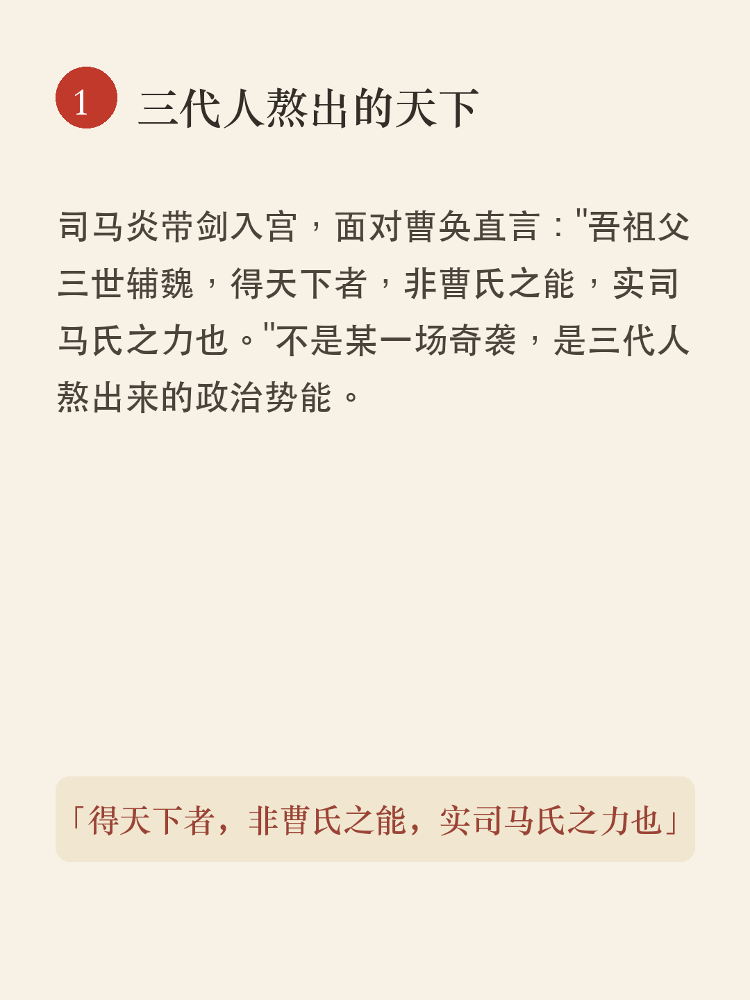
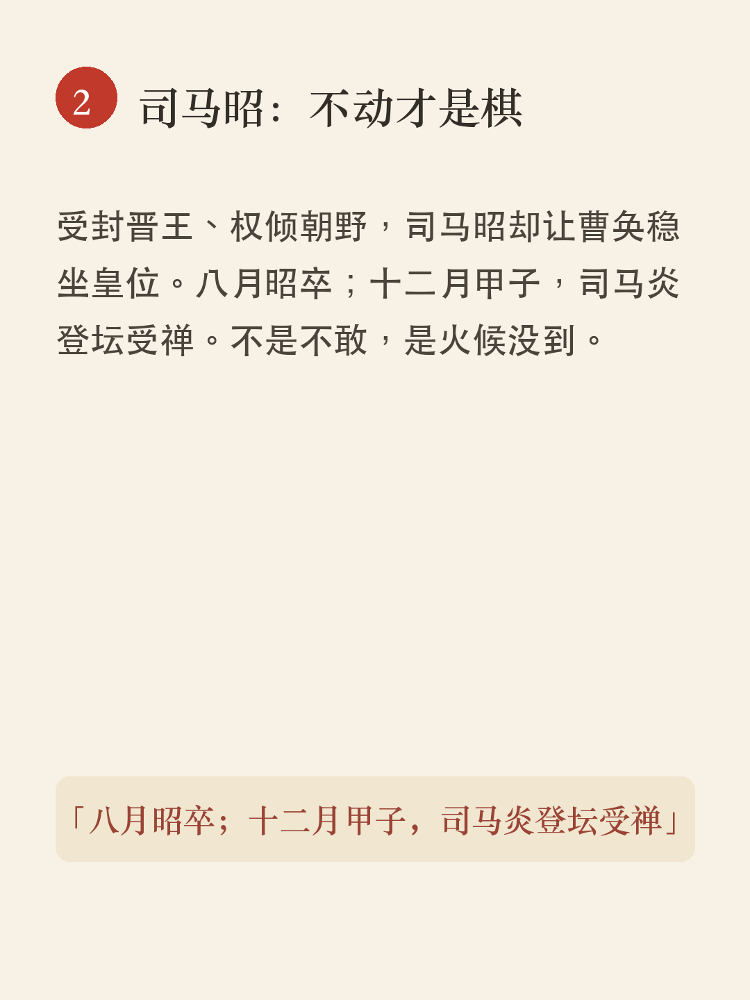
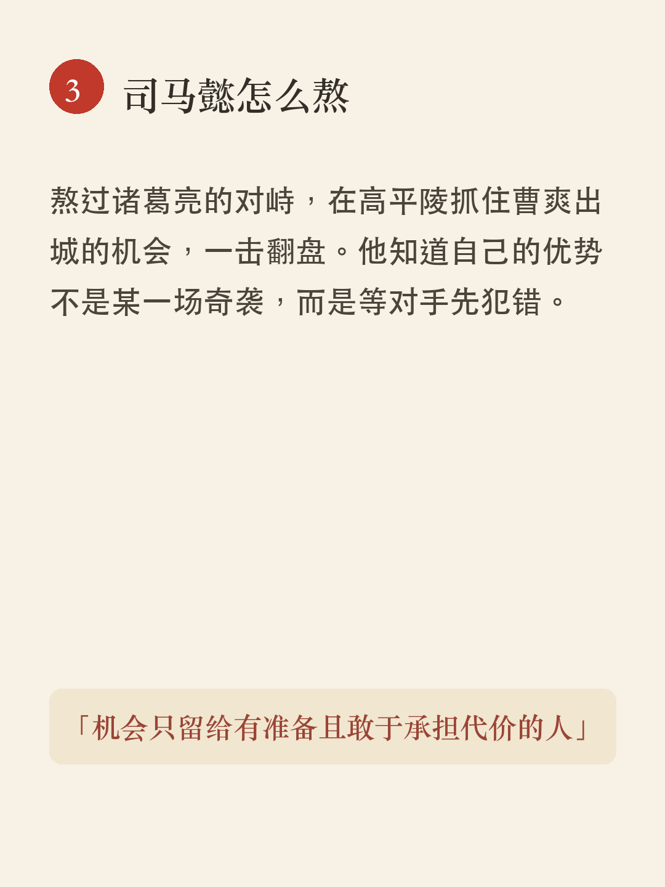
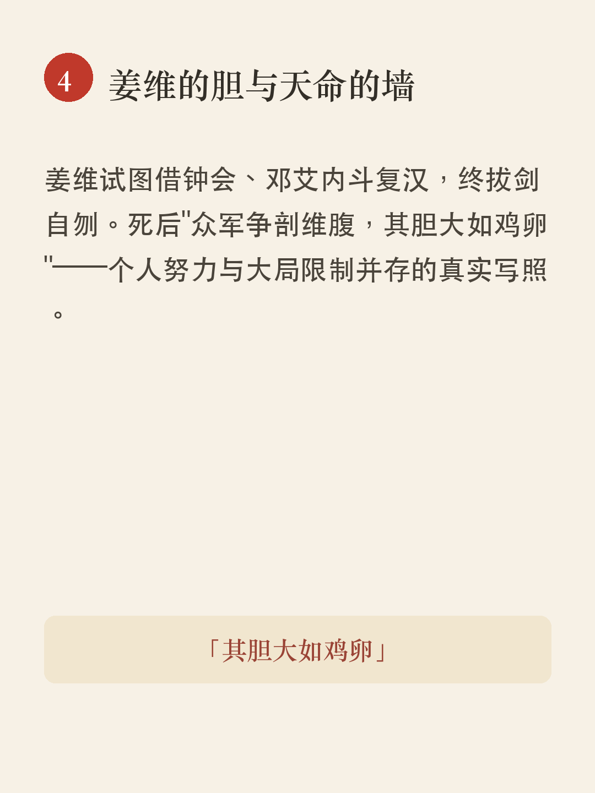
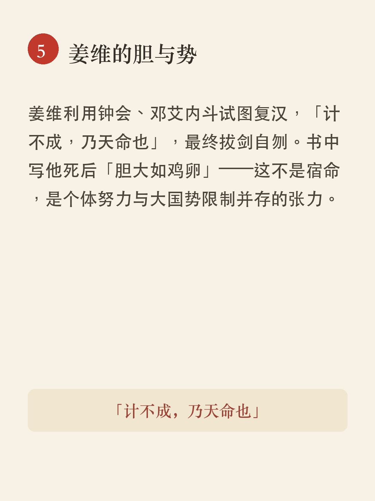
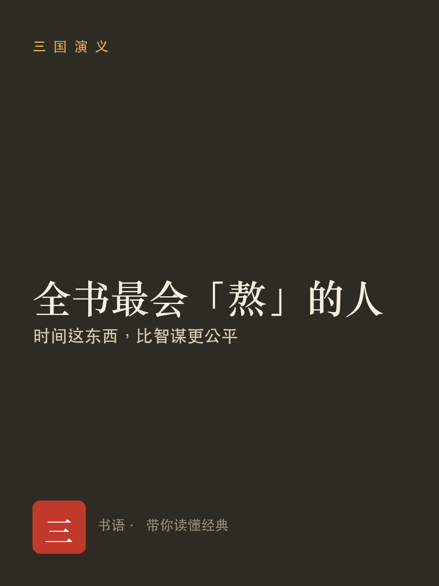
📄 配文·钩子（不剧透）
蜀汉有姜维，东吴有陆抗，都是顶尖人才，最后赢家却是司马炎——凭的是什么？＋ 讲透版·自成一体（小红书图文）
很多人以为司马氏靠打赢最后一仗统一三国，其实不然。司马炎的祖父司马懿熬过诸葛亮，父亲司马师熬过权力过渡，司马昭更是封王之后还让曹奂稳坐皇位——他就是不急。蜀汉姜维有锐气，东吴有陆抗、丁奉，都是顶级将才，但他们的失败不是不够强，而是国力消长与时势限制早已不在他们这边。姜维利用钟会邓艾内斗试图复汉，书中写他「计不成，乃天命也」，死后「胆大如鸡卵」——这个细节最残忍的不是死亡本身，而是个人才智在大势面前的无力感。时间比智谋更公平，司马氏的天下，是三代人「熬」出来的政治势能，不是某一次冒险的胜利。
口播稿全文
大家好，我是小鲸。
魏亡晋兴，系于受禅而非兵夺；三国终归晋，则在其后伐吴。很多人以为司马氏是靠打赢最后一仗拿下的天下，其实不然。
关于这场权力交接的细节，《三国演义》在全书临近结尾处，写下一段极具讽刺意味的画面。司马昭死后，司马炎继位为晋王，他召贾充、裴秀入宫问：“曹操当年说‘若天命在吾，吾其为周文王乎’，真有这事吗？”
贾充的回答很微妙，他说曹操是怕人议论篡逆之名，故意这么说，明教曹丕做天子。司马炎又问：“我父亲比曹操如何？”贾充说曹操功盖华夏，但百姓只畏其威不怀其德；而宣王、景王累建大功，天下归心久矣。
司马炎听完，自己给出了答案——他说曹丕尚能绍继汉统，他为什么不能绍继魏统？次日，司马炎带剑入宫，面对惊慌失措的曹奂，直言：“吾祖父三世辅魏，得天下者，非曹氏之能，实司马氏之力也。”甚至当场令武士将劝谏的黄门侍郎张节乱棍打死于殿下。
这段话最要紧的不是傲慢，而是它道出了一个事实：司马氏的天下，不是靠某一场奇袭打下来的，是三代人“熬”出来的政治势能。
司马懿熬过诸葛亮的对峙，在高平陵抓住曹爽出城谒陵的机会；司马师熬过父亲的阴影，把魏国军政大权真正攥在手里；司马昭更绝，受封晋王、权倾朝野，却始终让曹奂坐在皇位上——他不急，他知道火候还没到。八月昭卒；十二月甲子，司马炎登坛受禅，曹奂下坛，魏亡晋兴。
回过头看，蜀汉有姜维屡次北伐的锐气，吴国有陆抗、丁奉等名将的才略。但他们的失败，并非单纯因为“太想赢”，而是国力消长、时势限制与将略取向多重因素交织的结果。
比如姜维，他并非没有机会。在《三国演义》中，姜维曾利用钟会、邓艾的内斗，试图“复汉室”，结果却是“计不成，乃天命也”，最终拔剑自刎。书中写他死后，“众军各归营所……魏兵争欲报仇，共剖维腹，其胆大如鸡卵”。这种惨烈的结局，恰恰说明了个人努力在大势面前的局限——既不是宿命躺平，也不是人定胜天，而是个体努力与大势限制并存的张力。
再看司马氏，他们的胜出，是魏国体量、时间推移与内部权力结构变动的合力。演义借其装病夺权形成讽刺，并非倡导“无底线即必胜”。曹爽当初若能听从桓范“请天子幸许都，调外兵以讨司马懿”的建议，或许结局不同；但他选择了放弃兵权，最终被灭三族。这说明，机会只留给有准备且敢于承担代价的人，而非单纯的厚黑者。
所以你说司马炎凭什么统一三国？不是因为他最强，也不是因为什么“必胜秘籍”，而是他站在司马懿、司马师、司马昭三个人的肩膀上，熬过了所有竞争对手的寿命极限。
时间这东西，比智谋更公平。
85旧版故事scene公版✓ 判官过审五丈原：诸葛亮最后的夜与祈禳之术
🎬 诸葛亮在五丈原军帐里点起四十九盏灯，想向天再借十二年——然后魏延一脚踏灭了主灯。
图卡待生成
口播稿全文
大家好，我是鱼儿。
人这一生最难的，不是不懂命，而是明知道结局改不了，还愿不愿意再拼一次。诸葛亮生命里的最后七个夜晚，把这件事演到了极致。八月中秋，五丈原上，那一夜的月亮格外清冷。
司马懿在渭北军营里，抬头看了一夜的天象，忽然大喜，对夏侯霸说："我见将星失位，孔明必然有病，不久便死。"这个从不轻易出战的对手，此刻靠观星算出了孔明的命数。
而五丈原这边，孔明也已经知道自己的时间不多了。他扶病出帐，仰观天文，见三台星中客星倍明，主星幽隐，相辅列曜，其光昏暗——天象如此，吾命可知。
但他还是要试一试。
那一夜，帐外四十九名甲士执皂旗、穿皂衣，环绕帐外。帐中设香花祭物，地上分布七盏大灯，外布四十九盏小灯，内安本命灯一盏。孔明披发仗剑，踏罡步斗，压镇将星。银河耿耿，玉露零零，旌旗不动，刁斗无声，天地之间只剩这一个帐蓬、这一盏灯。
他在帐中跪拜祝祷，原文里他说的那番话，我每次读都觉得字字千钧。他说："亮生于乱世，甘老林泉；承昭烈皇帝三顾之恩，讬孤之重，不敢不竭犬马之劳，誓讨国贼。不意将星欲坠，阳寿将终。谨书尺素，上告穹苍。伏望天慈，俯垂鉴听，曲延臣算，使得上报君恩，下救民命，克复旧物，永延汉祀。非敢妄祈，实由情切。"
注意最后这四个字——非敢妄祈，实由情切。他不是不懂天命，他是不甘心。明日他依然扶病理事，吐血不止，日则计议军机，夜则布罡踏斗。
第六夜，主灯明亮，他心中甚喜。七日之内灯不灭，他便能再增一纪之寿。
第七夜，魏延飞步入帐，说魏兵至矣。魏延脚步太急，竟将主灯扑灭。姜维拔剑欲杀魏延，孔明弃剑而叹，只说了十个字：
死生有命，不可得而禳也。
一个人智谋通天，鞠躬尽瘁，到头来向天借命，天也没借。你看演义里，诸葛亮最信人的力量，三顾茅庐、火烧新野、草船借箭，每一步都是在跟天搏。但这一夜他说出"死生有命"四个字，才是他这一生最悲凉的时刻。不是不知道天命，是知道还要做，这才叫悲壮。
84旧版洞见thread公版✓ 判官过审为什么最后赢的是司马氏？从“诈病赚曹爽”到“受禅登基”的三代接力
🎬 司马懿披发持碗演病重，司马炎依样画葫芦受禅让，三代接力终得天下。
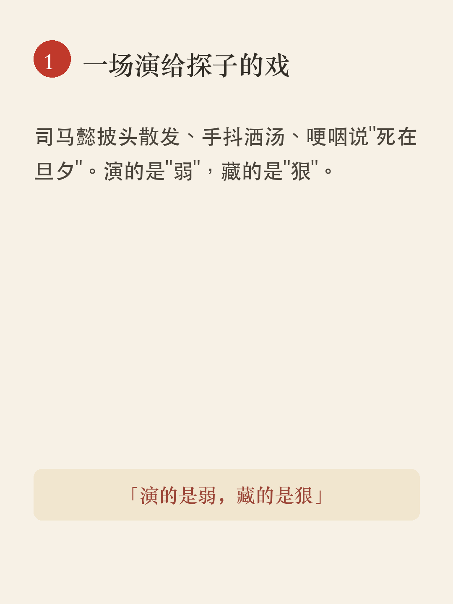
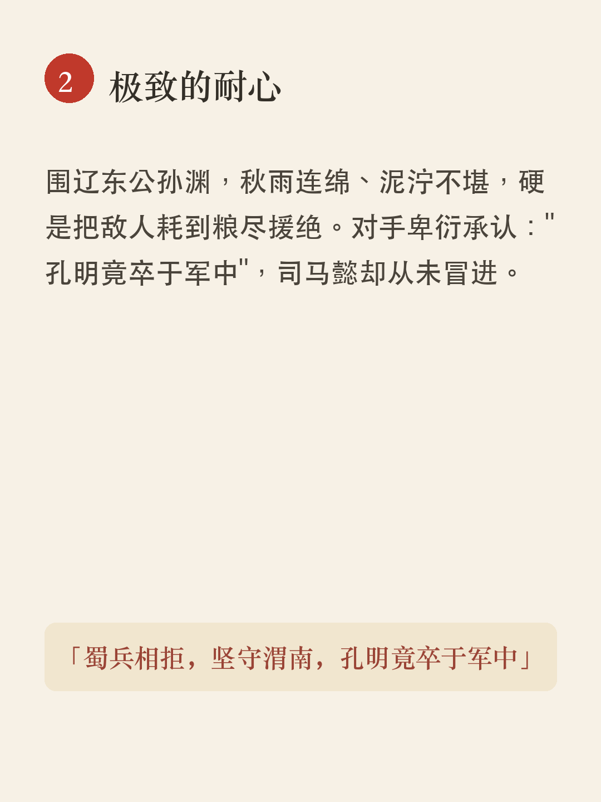
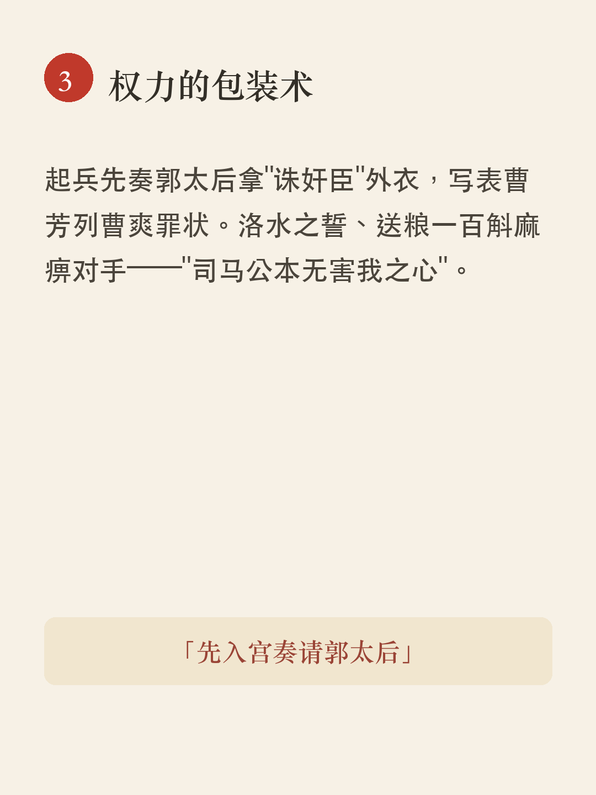
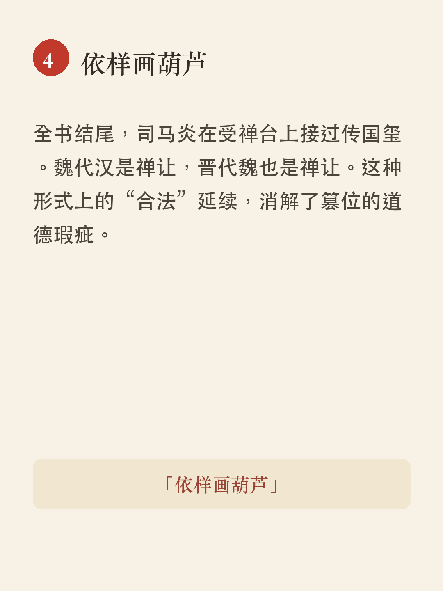
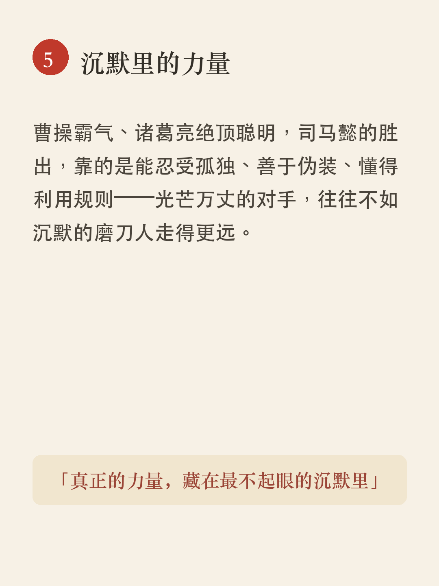
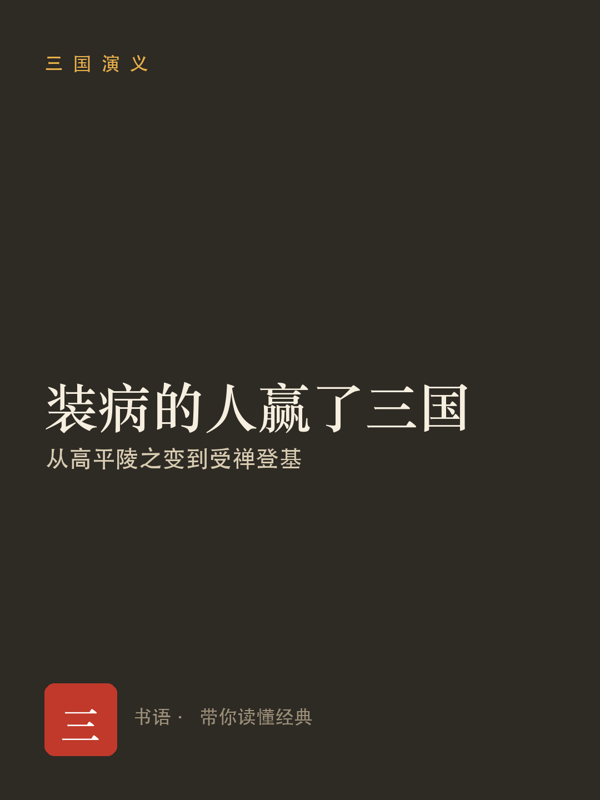
📄 配文·钩子（不剧透）
司马懿诈病那一幕，骗的不是李胜，而是整个三国。＋ 讲透版·自成一体（小红书图文）
《三国演义》写到司马炎受禅时，用了四个字——“依样画葫芦”。魏代汉是禅让，晋代魏也是禅让，形式上的合法性被原封不动地复制了一遍。书里没写的是：这四个字背后，是祖孙三代的缄默与等待。司马懿在高平陵之变前已经六十九岁，曹爽在享乐中松懈，而他在沉默中磨刀。他不需要比对手更聪明，只需要比对手更能“熬”。这不是教人学坏，而是提醒一个现代人同样要面对的事实：真正的力量，有时就藏在最不起眼的沉默里——在所有人都急着表态的时候，你能不能忍住？
口播稿全文
大家好，我是鱼儿。
刘备的仁义，曹操的霸气，诸葛亮的绝顶聪明，最后把天下收进口袋的，偏偏是那个最会装病的人。
《三国演义》里有个极具讽刺意味的细节：司马懿为了骗过曹爽派来的探子李胜，把自己折腾得不成样子。他披头散发，让人搀扶，端起汤碗时手抖得厉害，汤汁流满前襟，还要故意发出哽咽的声音说：“我如今衰老病重，死在旦夕了。”
这一场戏，演的是“弱”，藏的是“狠”。
很多人觉得司马懿赢在“厚黑”，觉得他只要不要脸就能赢。但如果你细读书里高平陵之变前后的这段，会发现他的胜利，是一场精密计算的“耐力战”与“合法性构建”。
首先，是极致的耐心。在平定辽东公孙渊时，部下建议速战，司马懿却选择围而不攻，任凭秋雨连绵、泥泞不堪，硬是把敌人耗到粮尽援绝。连对手卑衍都承认：“昔司马懿与蜀兵相拒，坚守渭南，孔明竟卒于军中。”这种“熬”的能力，让他在高平陵之变前，已经具备了压倒性的心理优势——曹爽在享乐中松懈，而他在沉默中磨刀。
其次，是权力的“包装术”。司马懿起兵时，没有直接喊打喊杀，而是先入宫奏请郭太后，拿到“诛奸臣”的合法外衣；再写表给魏主曹芳，罗列曹爽“背弃顾命、败乱国典”的罪状。当曹爽还在犹豫时，司马懿已经控制了武库和营垒。他甚至懂得用“洛水之誓”和送粮一百斛来麻痹对手，让曹爽产生“司马公本无害我之心”的错觉。
最后，是三代人的接力。高平陵之变只是起点。司马懿死后，司马师、司马昭继续清理异己，直到全书接近尾声，司马炎在受禅台上，接过曹奂手中的传国玺。书里写这一幕时用了个极妙的词：“依样画葫芦”。魏代汉是禅让，晋代魏也是禅让。这种形式上的“合法”延续，消解了篡位的道德瑕疵，完成了权力的平稳转移。
所以，司马懿的胜利，不是因为他比曹操更霸气，也不是比诸葛亮更聪明，而是他看清了一个残酷的真相：在漫长的权力博弈中，能忍受孤独、善于伪装、并懂得利用规则的人，往往比那些光芒万丈的对手走得更远。
这不是教人学坏，而是提醒我们：真正的力量，有时就藏在最不起眼的沉默里。
83旧版人物thread公版✓ 判官过审演义里的周瑜：英才短命，赢了赤壁，折在南郡
🎬 身负剧毒箭伤的他，眼睁睁看着南郡被诸葛亮兵不血刃夺走，金疮迸裂而亡。
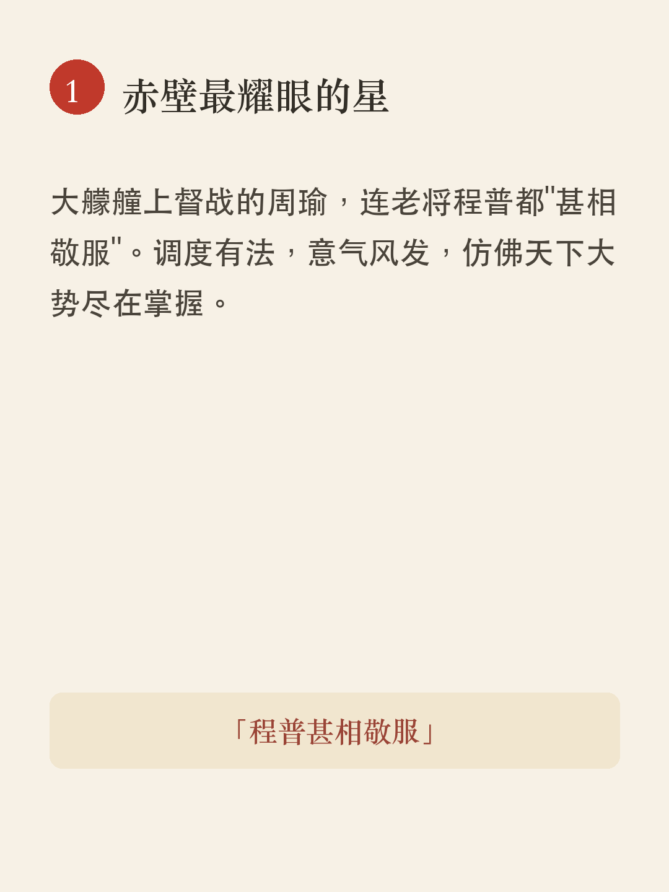
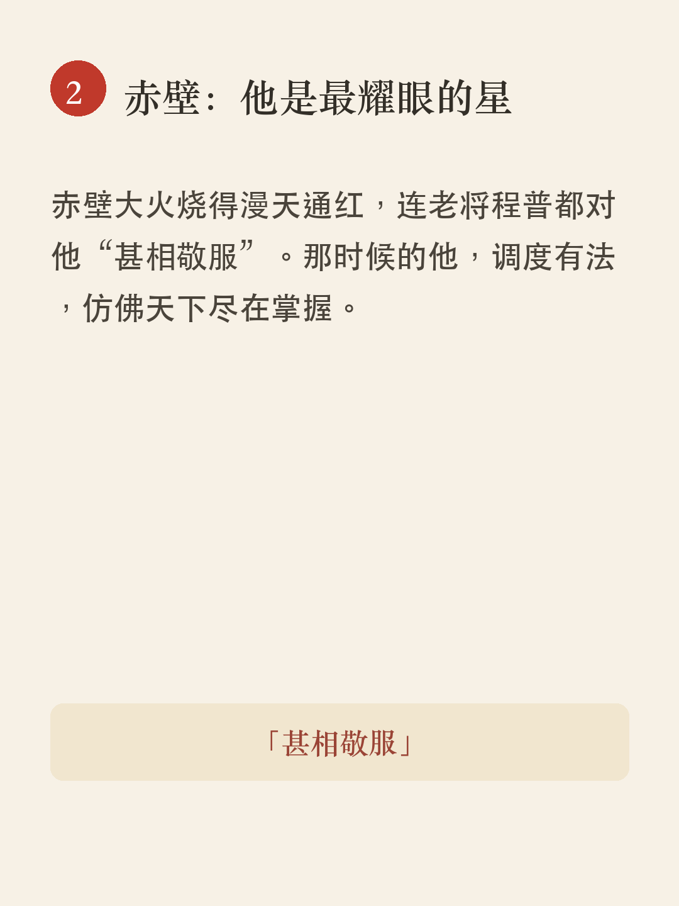
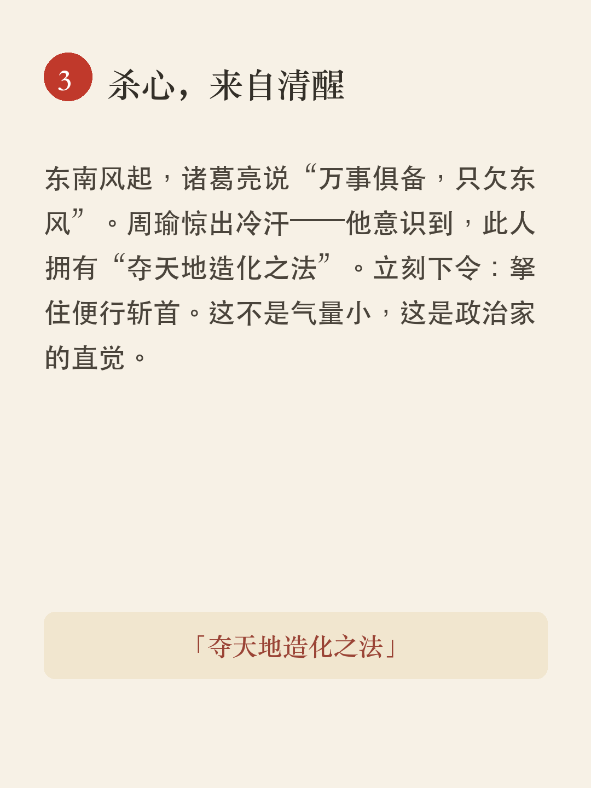
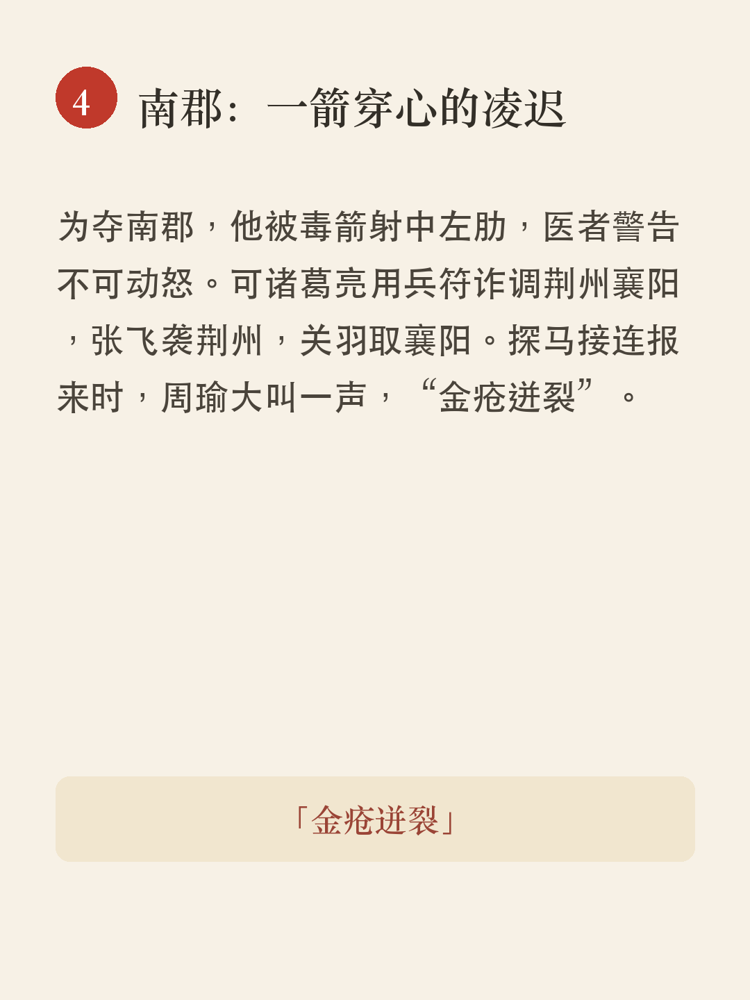
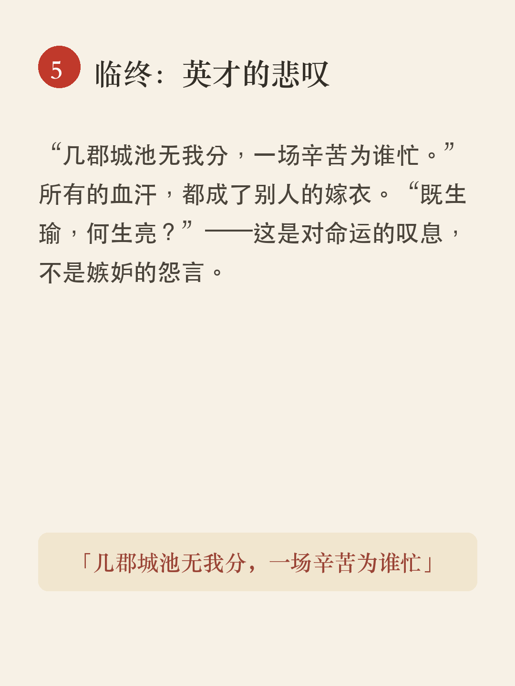
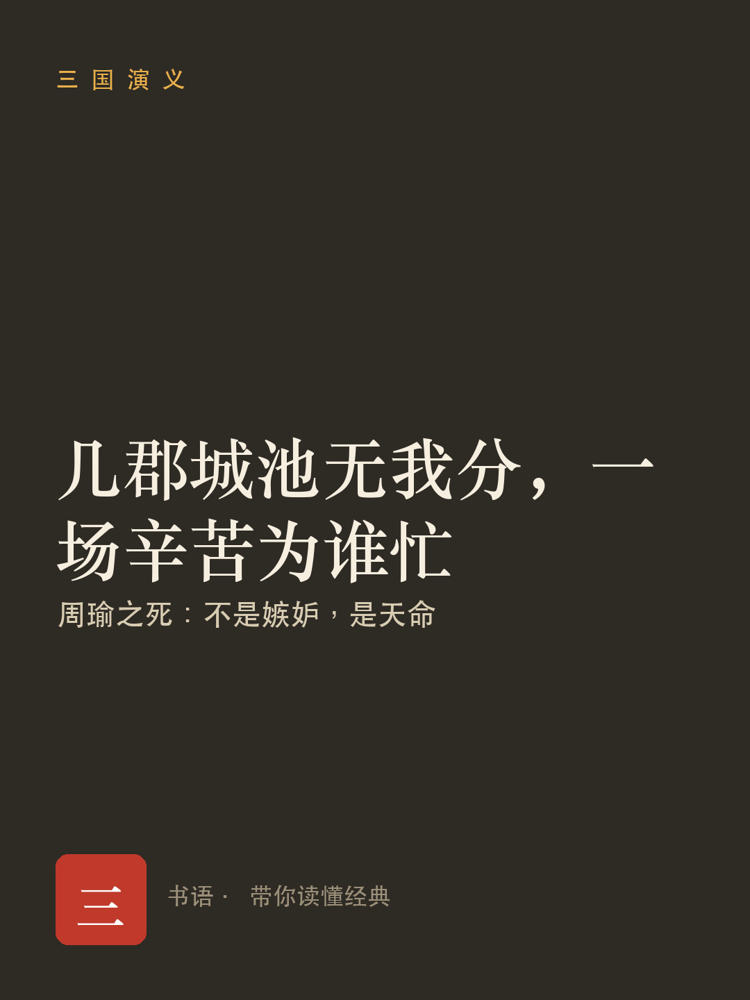
📄 配文·钩子（不剧透）
赤壁之后，周瑜是怎么死的？＋ 讲透版·自成一体（小红书图文）
周瑜36岁死于南郡。这是《三国演义》里最大的冤案之一。曹操南下时，周瑜是东吴唯一主战的人，力排众议，最终以少胜多烧了曹军。可赤壁的硝烟还没散尽，他就倒在了另一条战线上——那条战线叫南郡。刘备和诸葛亮早就盯上了这里，周瑜费尽心思打下来，却被诸葛亮用兵符诈调荆州襄阳，张飞袭了荆州，关羽取了襄阳。周瑜在养伤时听到这个消息，大叫一声，金疮迸裂。你看，他不是死于嫉妒，是死于自己打下的江山被兵不血刃地拿走。一个身负剧毒箭伤的人，在病床上听着自己的战果一个个丢失——这种无力感，才是压垮他的最后一根稻草。孙权说他有王佐之才，可他偏偏生在了一个需要“神机妙算”的时代。他赢了赤壁，却输给了时间，输给了那个更懂顺势而为的对手。周瑜的悲剧，不在于心胸，而在于他的才华与寿命、与对手之间，存在一种无法调和的错位。
口播稿全文
大家好，我是鱼儿。
周瑜不是小心眼被气死的。真正压垮他的，是身负剧毒箭伤时，眼睁睁看着自己拼死打下的江山，被对手兵不血刃地摘走。
赤壁大火烧得漫天通红的时候，他是三国里最耀眼的统帅。书里写得极实：他在大艨艟上督战，连老将程普都看在眼里，“甚相敬服”。那时候的他，调度有法，意气风发，仿佛天下大势尽在掌握。可谁能想到，这个在赤壁一战中把曹操打得丢盔弃甲的“王佐之才”，最终却折在了南郡的重创与西征的途中，死时年仅三十六岁。
很多人读周瑜，只记得他“心胸狭窄”、“嫉贤妒能”。但如果你细看原著，会发现这其实是一个被误读了太久的悲剧英雄。
周瑜对诸葛亮的杀心，并非源于私怨，而是出于极度的清醒与恐惧。在赤壁战前，东南风已起，孔明一句“万事俱备，只欠东风”，让周瑜惊出一身冷汗——他意识到，此人拥有“夺天地造化之法”。于是，他立刻下令：“若留此人，乃东吴祸根也……拏住诸葛亮便行斩首。”
这不是气量小，这是政治家的直觉。他看透了孔明是未来的大患，所以要在隐患未成时将其扼杀。这种狠辣与决断，恰恰证明了他的格局。
然而，命运给他开了一个残酷的玩笑。
为了夺取南郡，周瑜身先士卒，却被一弩箭正射中左肋。书中写得很清楚，那箭头有毒，“若怒气冲激，其疮复发”。医者早已警告：不可动怒。
可接下来的剧情，是一连串精准的“凌迟”。
诸葛亮持兵符诈调荆州、襄阳守军，张飞“袭了荆州”、关羽“袭取了襄阳”，属乘虚袭取；接着又用同样的手段骗走夏侯惇，夺了襄阳。当探马接连报来这些消息时，周瑜正在养伤。他大叫一声，“金疮迸裂”。
书中感叹道：“几郡城池无我分，一场辛苦为谁忙。”
这句话太沉了。所有的血汗、所有的算计，最终都成了别人的嫁衣。
此时，鲁肃在旁看着，心里暗自思量：“孔明自是多情，乃公瑾量窄，自取死耳。”
这是全书最大的误读。鲁肃以为周瑜是气量太小才气死的。但真相是：一个身负剧毒箭伤、刚经历惨胜的人，看着自己拼死打下的江山被对手兵不血刃地摘走，那种无力感，才是压垮他的最后一根稻草。
他在临终前留下的，既有对天命的无奈：“吾不欲尽忠报国，奈天命已绝矣。”也反复长叹：“既生瑜，何生亮？”
孙权听后痛哭：“公瑾有王佐之才，今忽短命而死，孤何赖哉？”
周瑜的死，不是因为心眼小，而是因为他的才华与他的寿命、他的对手之间，存在着一种无法调和的错位。他是完美的统帅，却生在了一个需要“神机妙算”来打破平衡的时代。
他赢了赤壁，却输给了时间，也输给了那个比他更懂“顺势而为”的对手。
所以，别再用“嫉妒”去简化周瑜了。那是一个英才在命运面前，拼尽全力后依然无力回天的悲凉。
82旧版洞见thread公版✓ 判官过审罗贯中为何偏心？尊刘贬曹的千年公案
🎬 史书说曹操是「超世之杰」，罗贯中却把他写成白脸奸雄——他到底在图什么？
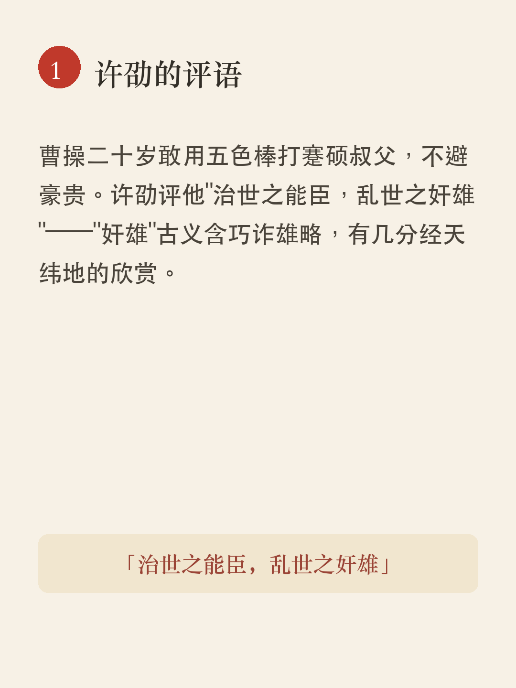
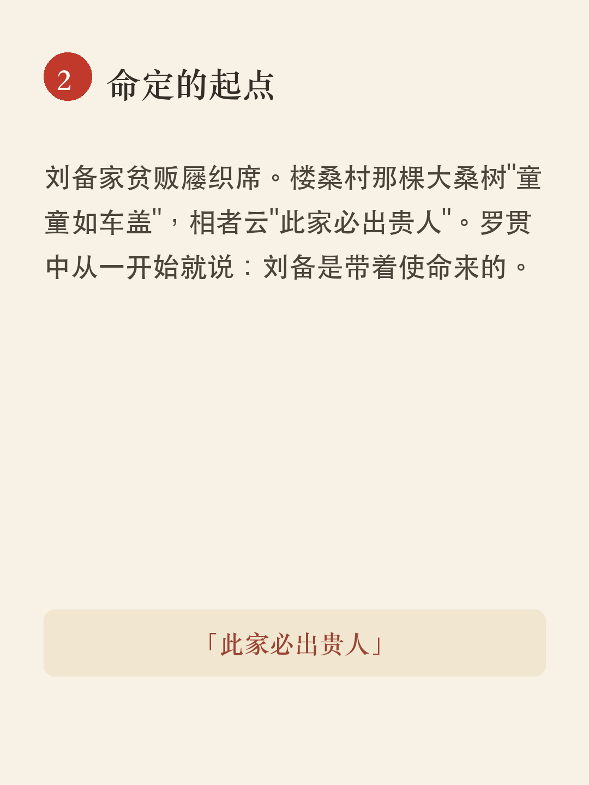
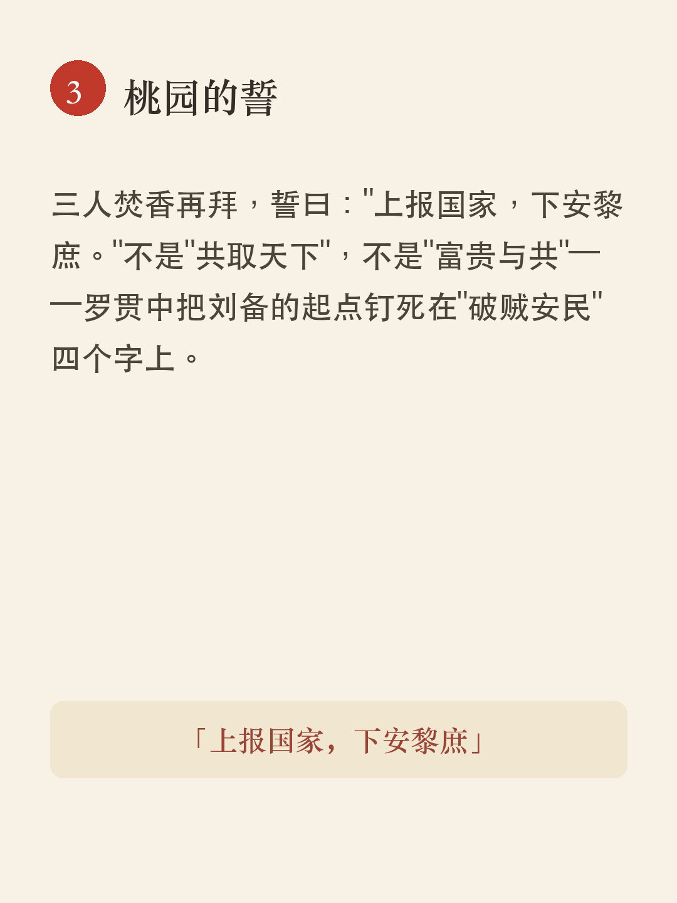
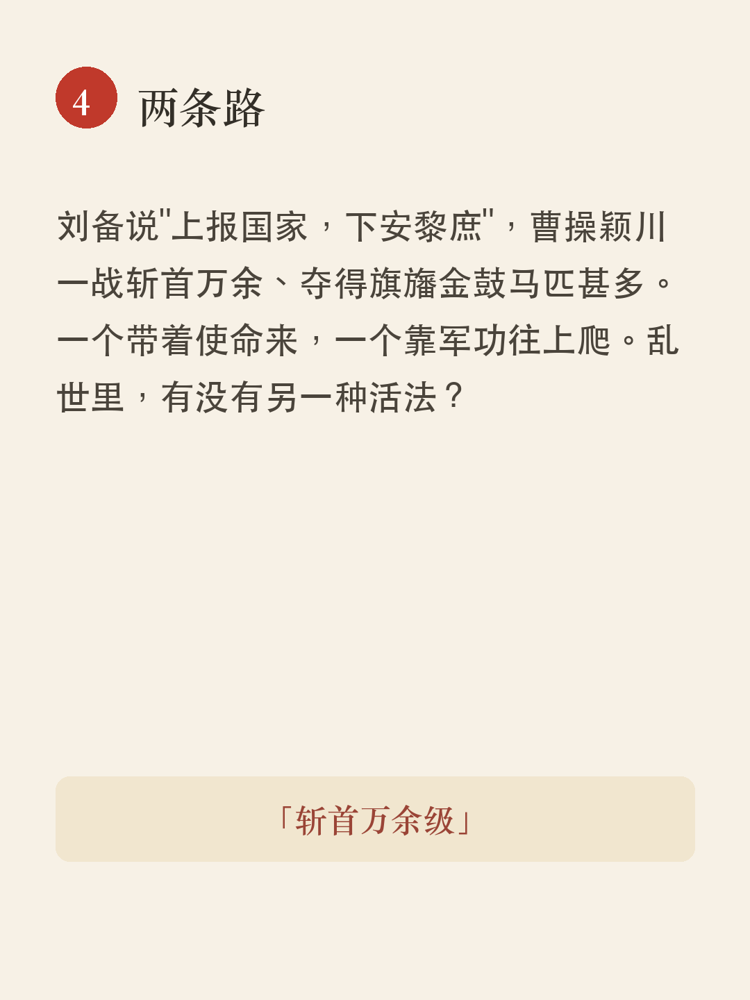
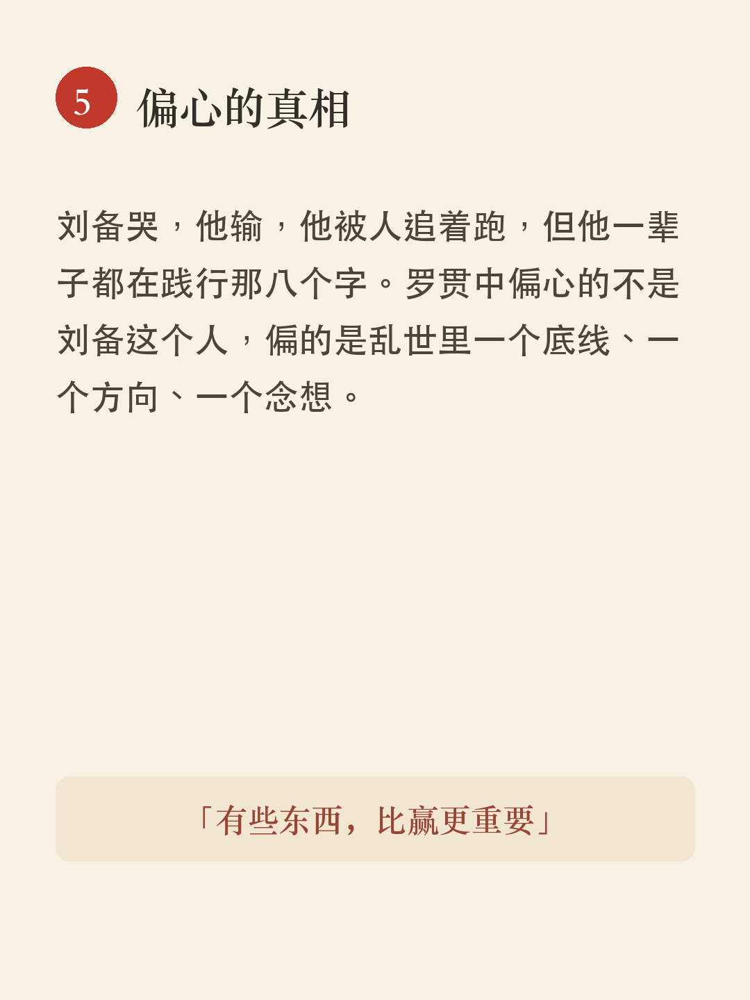
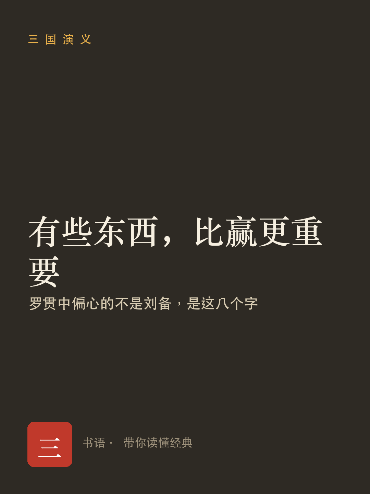
📄 配文·钩子（不剧透）
曹操那句"乱世之奸雄"，罗贯中为何不替他说句好话？＋ 讲透版·自成一体（小红书图文）
许劭说曹操"乱世之奸雄"，这个评价本身没错，曹操确实有经天纬地之才。但罗贯中真正想问的是：乱世里，有没有另一种活法？不是靠权谋、靠狠辣，而是靠"上报国家，下安黎庶"这八个字。刘备一辈子哭、一辈子输、一辈子被人追着跑，但他一辈子都在践行这句话。罗贯中偏心，但偏的不是刘备这个人，偏的是这八个字——那是他在元末乱世里给自己、给读者、给所有挣扎中的人留的一个念想：有些东西，比赢更重要。
口播稿全文
大家好，我是鱼儿。
罗贯中写《三国演义》，确实偏心：尊刘、贬曹，把曹操硬生生写成了白脸奸雄。但他偏心的，其实不是哪一个人，而是一条在乱世里守了一辈子的底线。这桩千年公案，得从曹操刚出场时的一句评语说起——许劭说他是“治世之能臣，乱世之奸雄”，罗贯中沿录这句评语，以此为曹操定性。
有意思的是，许劭这句话本身是中性的，甚至带着几分欣赏——“奸雄”在古义有巧诈雄略之意，含褒贬并存，说你有经天纬地之才，能在乱世里翻云覆雨。曹操二十岁就敢用五色棒打蹇硕的叔父，不避豪贵，威名大震，这时候的曹操分明是个狠角色。
那曹操是从什么时候开始变“奸”的？
你去看开篇里刘备的出场。刘备家贫，贩屦织席为生，楼桑村那棵大桑树“童童如车盖”，相者云“此家必出贵人”，刘备小时候指着它说“我为天子，当乘此车盖”。这不是野心，这是命定——罗贯中从一开始就告诉你，刘备这个人，是带着使命来的。
然后桃园结义，三个人焚香再拜，誓曰：“念刘备、关羽、张飞，虽然异姓，既结为兄弟，则同心协力，救困扶危；上报国家，下安黎庶；不求同年同月同日生，但愿同年同月同日死。”
这句话太重要了——“上报国家，下安黎庶”。不是“共取天下”，不是“富贵与共”，是“上报国家，下安黎庶”。罗贯中把刘备的起点钉死在这里：一个贩屦织席的没落宗亲，起兵的动机是“破贼安民”，结义的目标是“救困扶危”。
你再回头看曹操。曹操出场时在干什么？在颖川拦路杀黄巾，斩首万余级，夺得旗旛金鼓马匹极多。战功赫赫。但他的身世是“操父曹嵩，本姓夏侯氏，因为中常侍曹腾之养子，故冒姓曹”——一个宦官养子的儿子，靠军功往上爬。
罗贯中在这里埋了一个很深的伏笔：两个人都在乱世里求功名，一个说“我要上报国家，下安黎庶”，一个斩首万余、夺得旗旛金鼓马匹甚多。
这不是简单的“刘备是好人、曹操是坏人”。许劭说曹操“乱世之奸雄”，这个评价本身没错，曹操确实有经天纬地之才。但罗贯中要问的是：乱世里，有没有另一种活法？不是靠权谋、靠狠辣，而是靠“上报国家，下安黎庶”这八个字？
刘备一辈子都在践行这句话——至少罗贯中让他一辈子都在践行。他哭，他输，他被人追着跑。
所以罗贯中偏心吗？偏心。但偏的不是刘备这个人，偏的是他身上承载的那八个字——那是罗贯中在元末乱世里给自己、给读者、给所有在乱世中挣扎的人留的一个念想：一个底线，一个方向，一个哪怕一辈子都实现不了、也要朝着它走的理想。
有些东西，比赢更重要。
82旧版洞见thread公版✓ 判官过审三处关键场面，看《三国演义》如何尊刘、塑曹为“奸雄”
🎬 曹操误杀吕伯奢后那句宁负天下的冷酷，与刘备托孤时勿以恶小的遗训，构成了两种政治伦理的对撞。
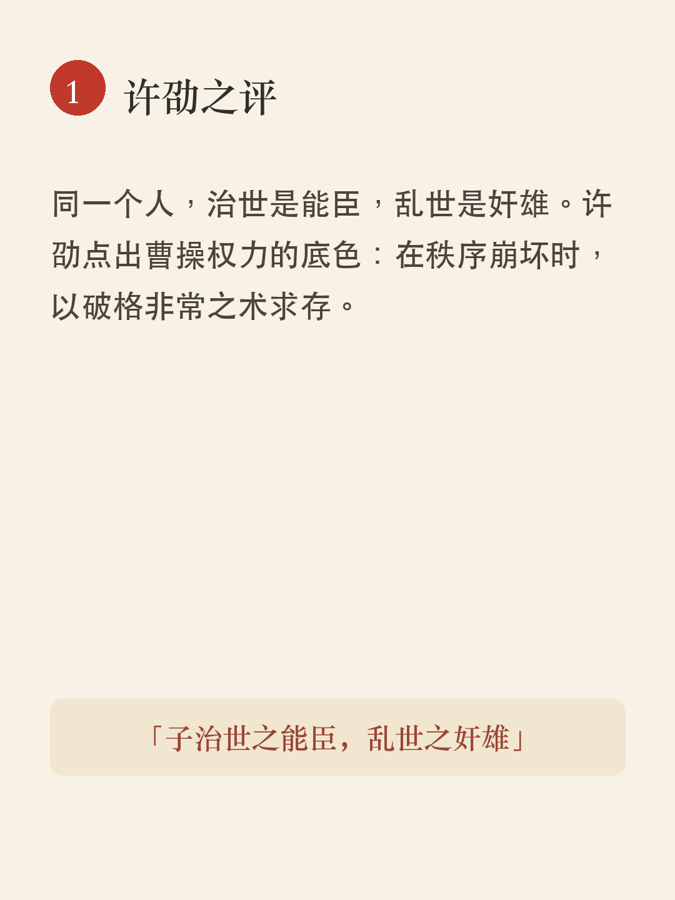
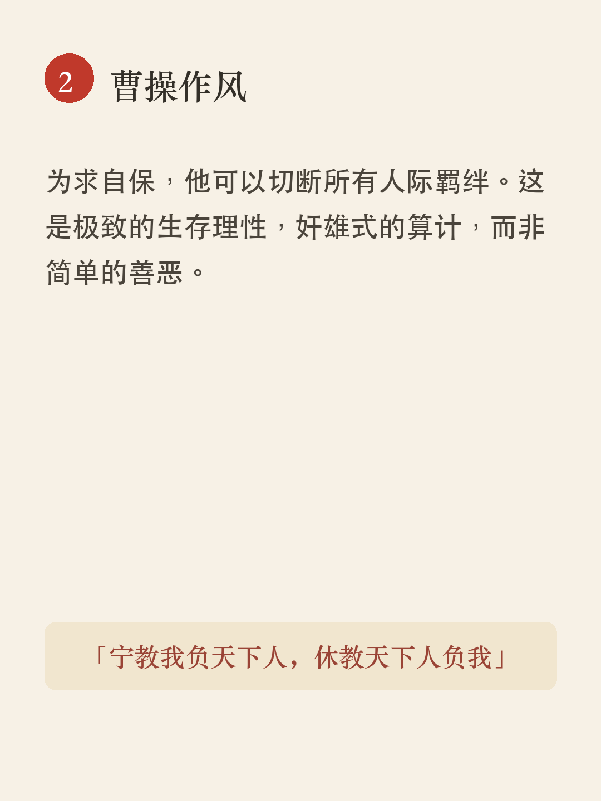
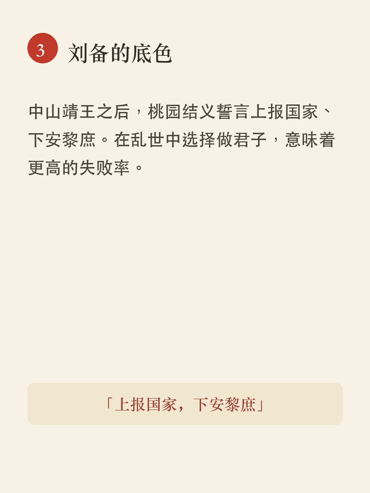
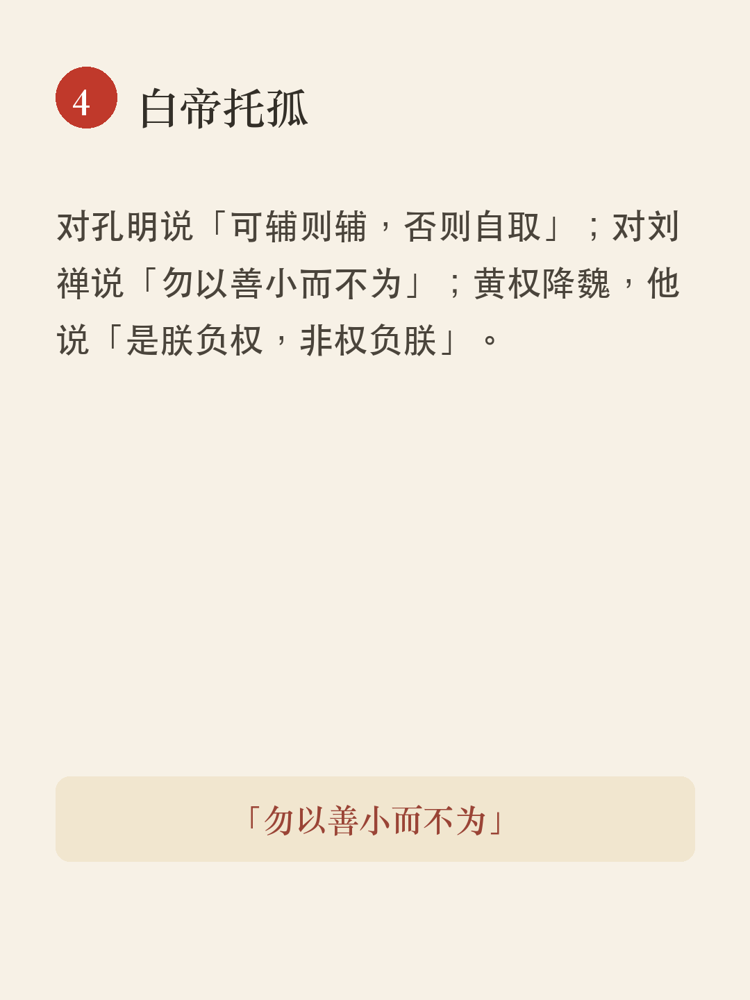
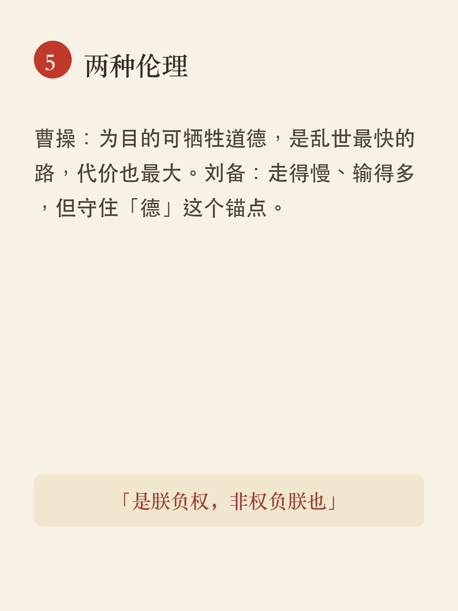
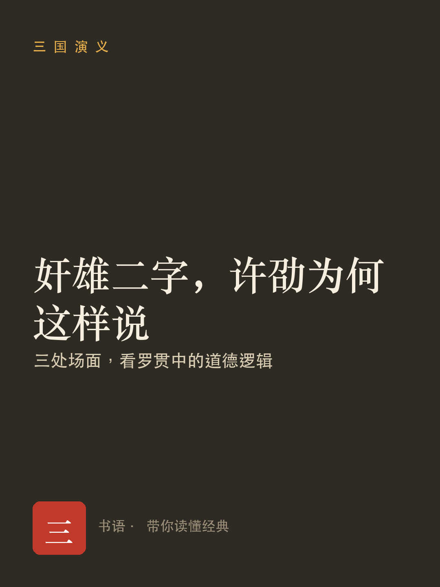
📄 配文·钩子（不剧透）
同一个人，治世能臣，乱世奸雄——许劭这句话的深意，罗贯中用整部小说来展开。＋ 讲透版·自成一体（小红书图文）
罗贯中不是在写忠奸善恶剧，而是展示两种政治伦理的碰撞。曹操以目的牺牲道德，是乱世中最快的路；刘备哪怕输得多也要守住「德」，他的失败恰恰证明了在权力博弈中，道德是一种昂贵的奢侈品。
《三国演义》想让你看到的，不是「好人有好报」——那太天真。是在人人都在算计「如何成功」的时代，依然有人选择「如何活着」。前者是历史的选择，后者是文学的叹息。
口播稿全文
大家好，我是鱼儿。
史书《三国志》里，陈寿给曹操的评语是「超世之杰」。但在《三国演义》里，罗贯中一开篇就借汝南许劭之言，定下了他「乱世奸雄」的形象。后世戏曲常以白脸塑曹，那是舞台上的符号；小说里的曹操，底色更复杂。
很多人以为，这是作者为了捧刘贬曹，强行拉偏架。但如果我们只看三个关键场面，会发现这背后有一套冷峻、沉重的道德逻辑。
第一处，在全书开篇。许劭评价曹操：「子治世之能臣，乱世之奸雄也。」
这个评语的分量，在前后两半的对照里：同一个人，放在治世是能臣，放在乱世就是奸雄。许劭并没有否定他的才能，而是点出了他权力的底色——在秩序崩坏时，他可能以破格非常之术求存。紧接着，曹操误杀吕家八口、复又手刃归来的吕伯奢后，陈宫指其“知而故杀”，曹操遂发此语：「宁教我负天下人，休教天下人负我。」
这不是简单的坏，而是一种极致的生存理性。为了自保，他可以切断所有的人际羁绊。这是一种奸雄式的逻辑与算计，而非所谓高效的「能臣」逻辑。
第二处，同样在开篇，刘备出场时，书中特意交代他是「中山靖王之后」。桃园结义时，誓言是「上报国家，下安黎庶」，并立下重誓：「背义忘恩，天人共戮。」
这里确立了一个对照系：曹操代表的是「术」的极致，而刘备代表的是「道」的坚守。在乱世中，选择做君子，意味着你要承担更多的风险、更慢的速度，以及更高的失败率。
第三处，也是最沉重的一处，在白帝城托孤。
刘备对诸葛亮说：「若嗣子可辅，则辅之；如其不才，君可自为成都之主。」
这常被解读为刘备的深情或权谋。但请看紧随其后的遗诏，他对儿子刘禅说：「勿以恶小而为之，勿以善小不为。惟贤惟德可以服人。」
甚至，当大将黄权兵败降魏时，近臣奏称可将彼家属送有司问罪，刘备却说：「是朕负权，非权负朕也。」
这三处画面连起来，你看清了罗贯中的野心。
他不是在写一部简单的忠奸善恶剧，而是在展示两种政治伦理的碰撞。
曹操的逻辑是：为了达成目的，可以牺牲道德底线，这是乱世中最快的路，也是代价最大的路——他挟天子以令诸侯、权倾朝野，势几吞并中原；其冷酷形象饱受后世诟病。
刘备的逻辑是：哪怕走得慢、输得多，也要守住「德」这个锚点。
这种坚守是有代价的。刘备夷陵之战惨败，白帝城托孤时已是穷途末路。罗贯中没有把刘备塑造成一个赢家的模板，而是把他塑造成一个悲剧性的理想主义者。他的失败，恰恰证明了在绝对的权力博弈中，道德是一种昂贵的奢侈品。
所以，《三国演义》尊刘、塑曹，不是为了告诉你「好人一定有好报」——那太天真了。
它是想让你看到：在一个人人都在算计「如何成功」的时代，依然有人选择「如何活着」。
前者是历史的选择，后者是文学的叹息。
82旧版映照scene公版✓ 判官过审093_映照_携民渡江leader的代價
🎬 刘备说：「数十万百姓跟著我，我怎么忍心抛下他们？」然后他带著这群人，跑了。
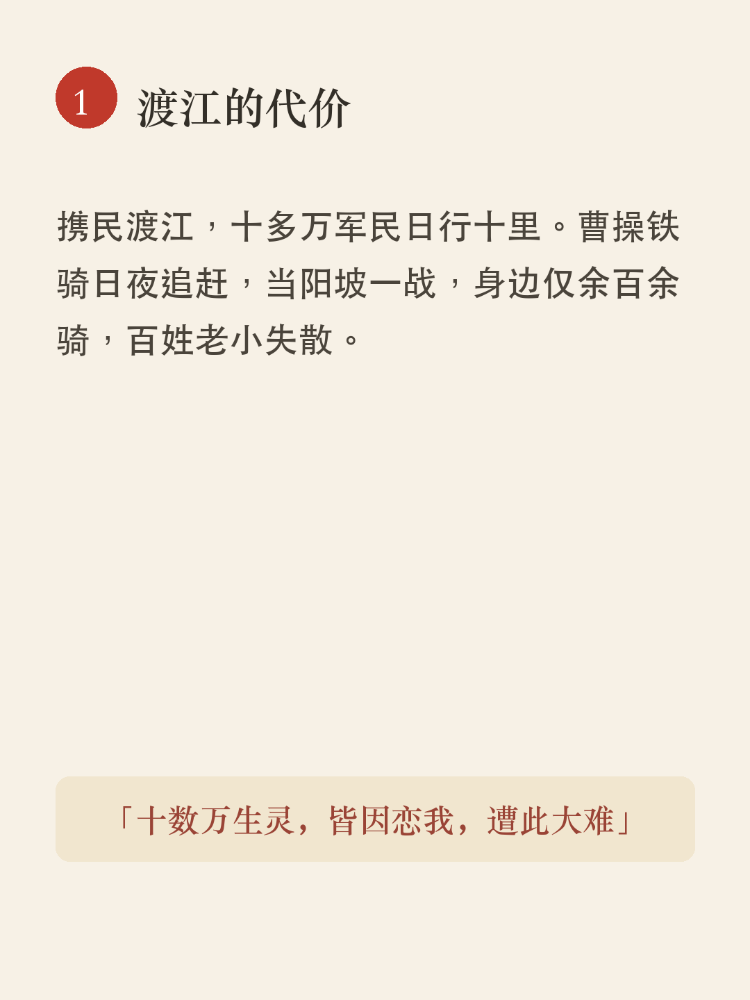
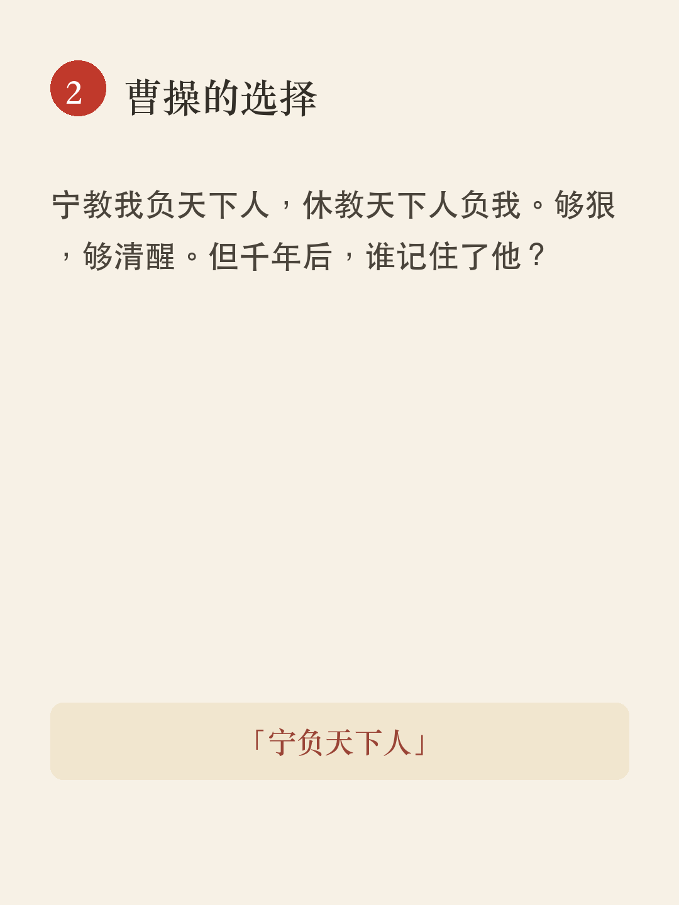
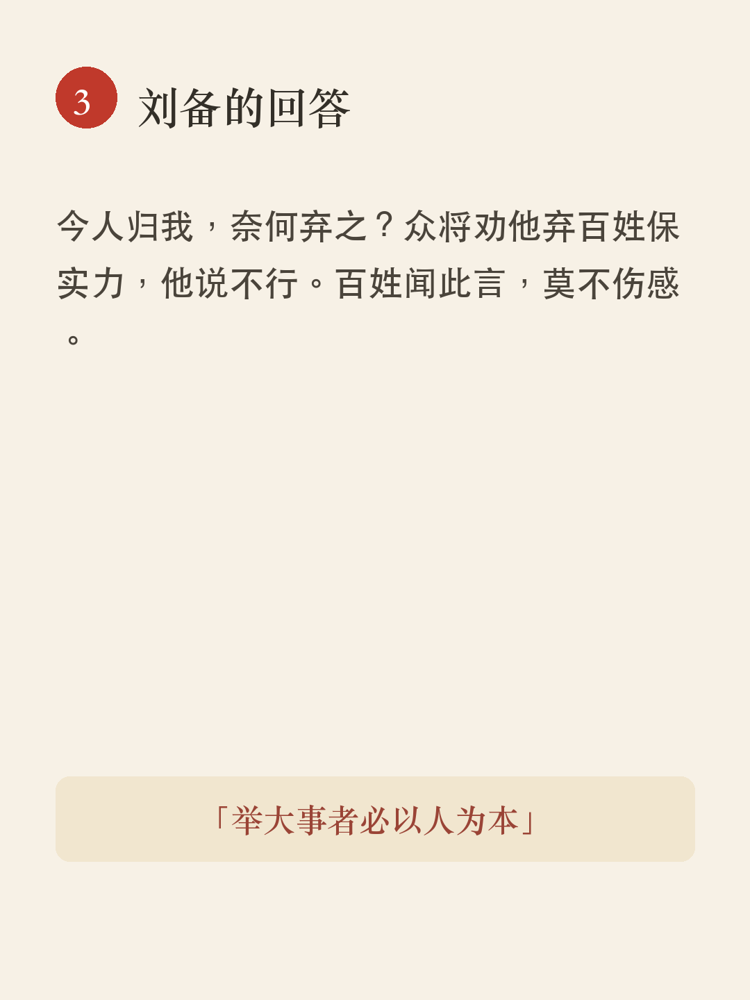
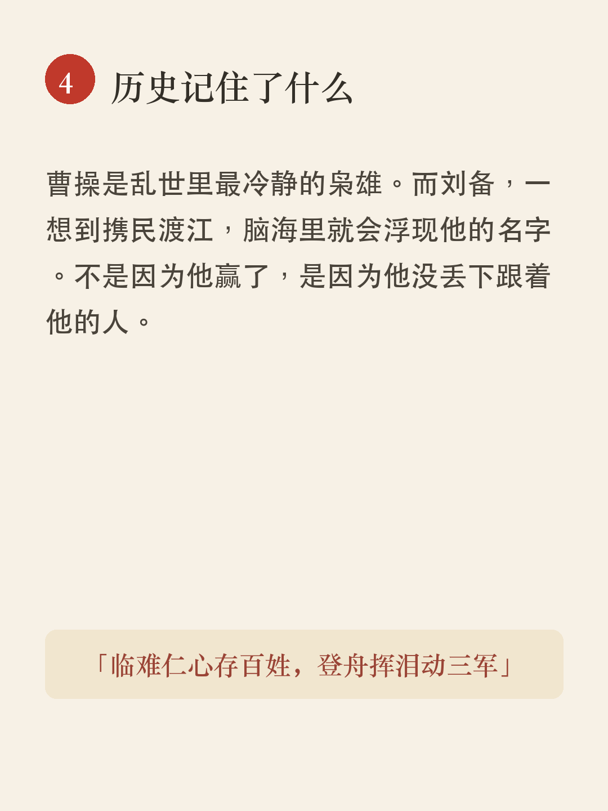
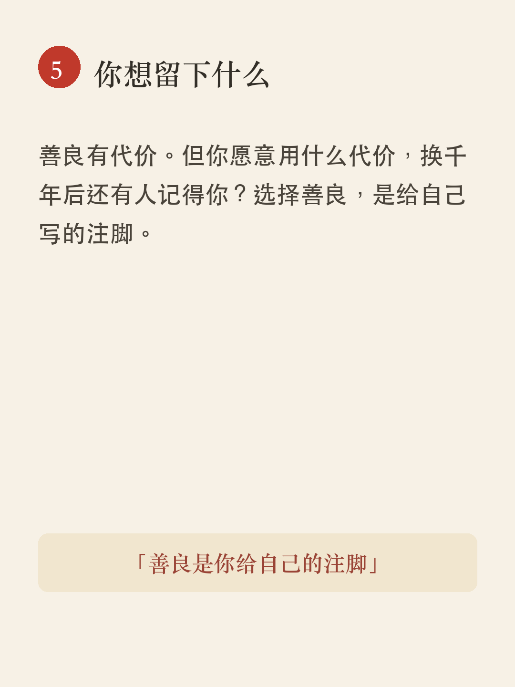
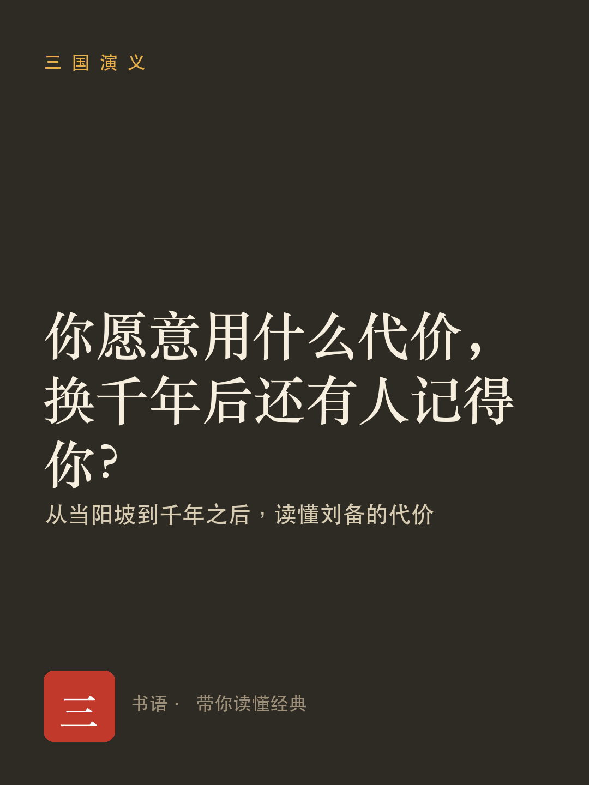
📄 配文·钩子（不剧透）
追兵一天一夜就能追上，十几万百姓却拖慢了他每一步。所有人都劝他弃民保命——刘备偏做了相反的选择。他图什么？＋ 讲透版·自成一体（小红书图文）
刘备的仁义，代价是十多万军民跟着他走，日行十里，被曹操的铁骑日夜追赶。当阳坡一战，身边只剩百余骑，百姓老小失散。他哭着说：十数万生灵，皆因恋我，遭此大难。
而他的对手曹操，在逃命途中误杀吕伯奢一家人，明知误杀还要灭口，说了一句：宁教我负天下人，休教天下人负我。够狠，够清醒。
可千年之后，我们记住他们的方式不一样。曹操是乱世里最冷静的枭雄，而刘备是那个下船上哭、说举大事者必以人为本的人。众将都劝他放弃百姓保全实力，这是最理性的选择。刘备说什么？他说：今人归我，奈何弃之？
历史给他的定位，不是赢了的那个人，而是那个舍不得的人。
现实里我们常常遇到类似的选择。选择善良、选择厚道，可能要吃亏，可能错失机会。但你回头想想，人这一辈子，最后别人怎么评价你？你愿意用什么代价，换千年后还有人记得你？刘备留下来了，一个你一想到携民渡江就会浮现的名字。不是因为他赢了，是因为他没丢下那些跟着他的人。选择善良，最终是你给自己的人生写下的注脚。
口播稿全文
大家好，我是余儿。
你有没有想过一个问题——
携民渡江，为后人所称颂。但你翻开原著看看，那是一次造成巨大代价的抉择。十多万军民跟着他，日行十里，走走停停。曹操的五千铁骑日夜追赶，一天一夜就能追上。最后长坂坡一战，身边仅余百余骑，百姓老小失散。
刘备哭着说："十数万生灵，皆因恋我，遭此大难；诸将及老小，皆不知存亡，虽土木之人，宁不悲乎！"
你看他这个"仁义"，代价有多大。
但你再看他对手——曹操。在第四回，曹操逃命途中杀了吕伯奢一家人，陈宫问他为什么明知误杀还要灭口，曹操说了一句话："宁教我负天下人，休教天下人负我。"
这句话够狠，够清醒。
可千年之后，这两个人，我们其实都记得。只是，我们记住他们的方式不一样。
曹操，我们记住的是他的清醒、他的决断——乱世里最冷静的那个枭雄。而刘备，我们记住的是他在船上痛哭，是那句"举大事者必以人为本"的仁心。
"举大事者必以人为本"，这是刘备亲口说的，不是后人给他贴的标签。当时众将都劝他放弃百姓、保全实力，这是最理性的选择。刘备说什么？他说："今人归我，奈何弃之？"——现在百姓愿意跟着我，我怎么能丢下他们？
就这一句话，百姓闻玄德此言，莫不伤感。后人写诗赞他："临难仁心存百姓，登舟挥泪动三军。至今凭吊襄江口，父老犹然忆使君。"
你看清楚了吗？历史给他的定位，不是"赢了"的那个人，而是那个"舍不得"的人。
现实里我们常常遇到类似的选择。选择善良、选择厚道，你可能要吃亏，可能错失机会，可能在竞争里被人甩在后面。你看那些精明的、决绝的、不管不顾往前冲的，好像总是赢面更大。
但你回头想想，人这一辈子，最后别人怎么评价你？你给这个世界留下了什么印象？
刘备留下来了——一个你一想到"携民渡江"，脑海里就会浮现的名字。不是因为他赢了，是因为他没丢下那些跟着他的人。
善良是有代价的。
但反过来想——你愿意用什么代价，换来千年后还有人记得你？
选择善良，最终是你给自己的人生写下的注脚。
82旧版映照scene公版✓ 判官过审「既生瑜，何生亮」的反转
🎬 周瑜到死都以为诸葛亮是他的一生之敌。但他不知道的是：诸葛亮根本没有把他当对手。
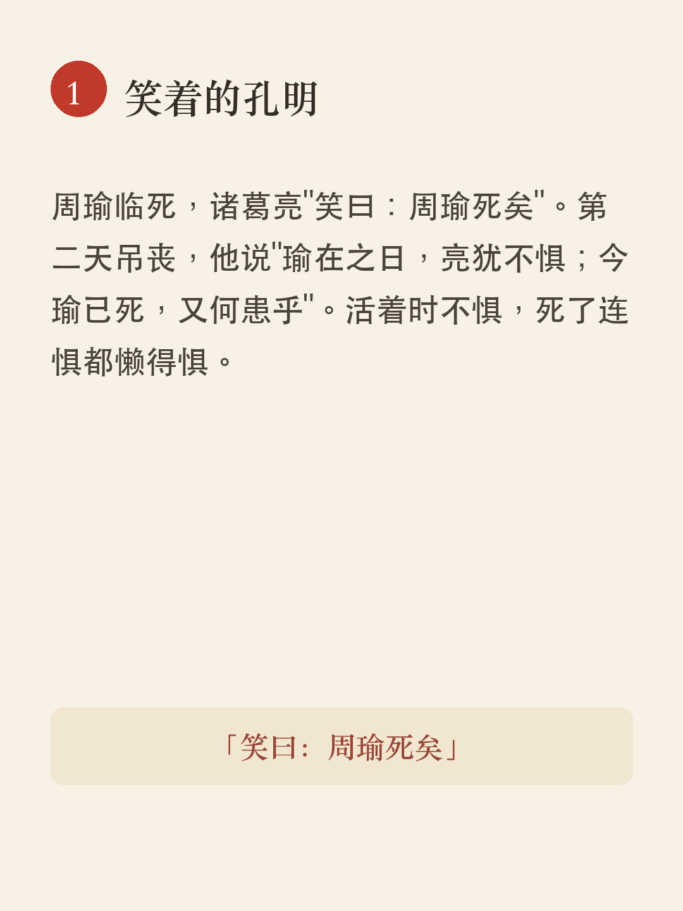
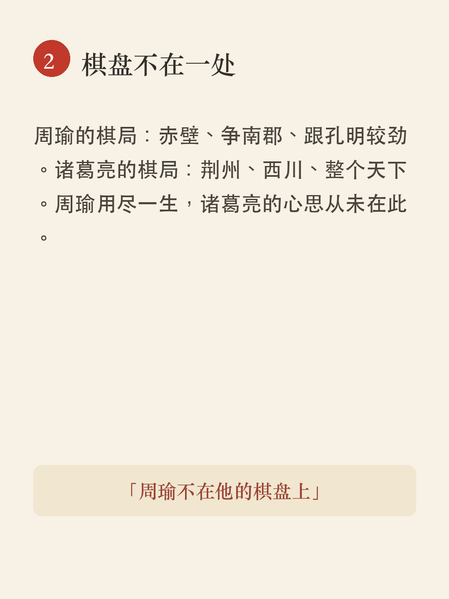
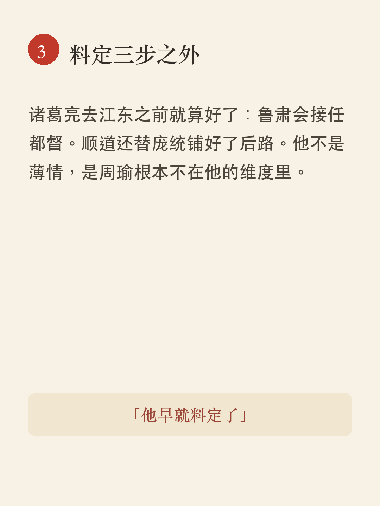
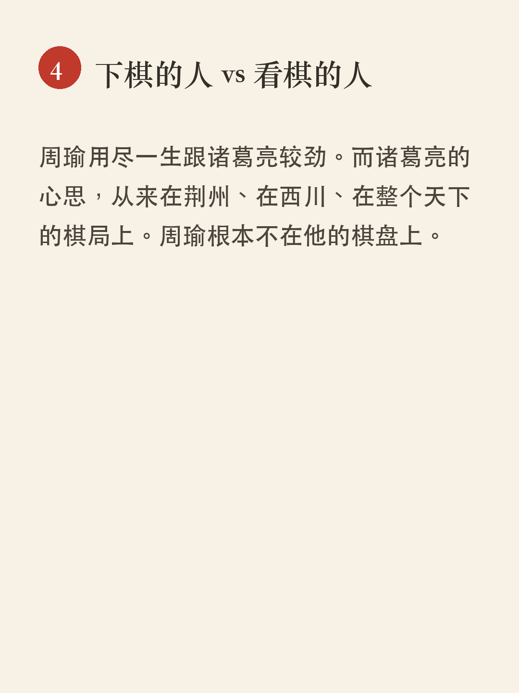
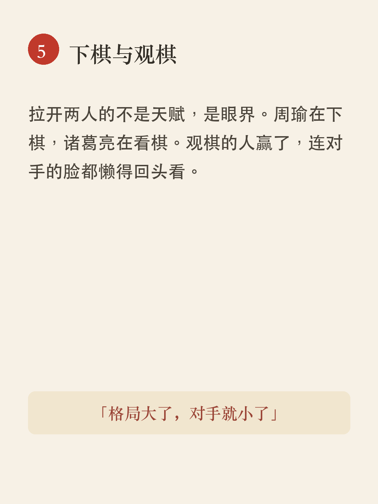
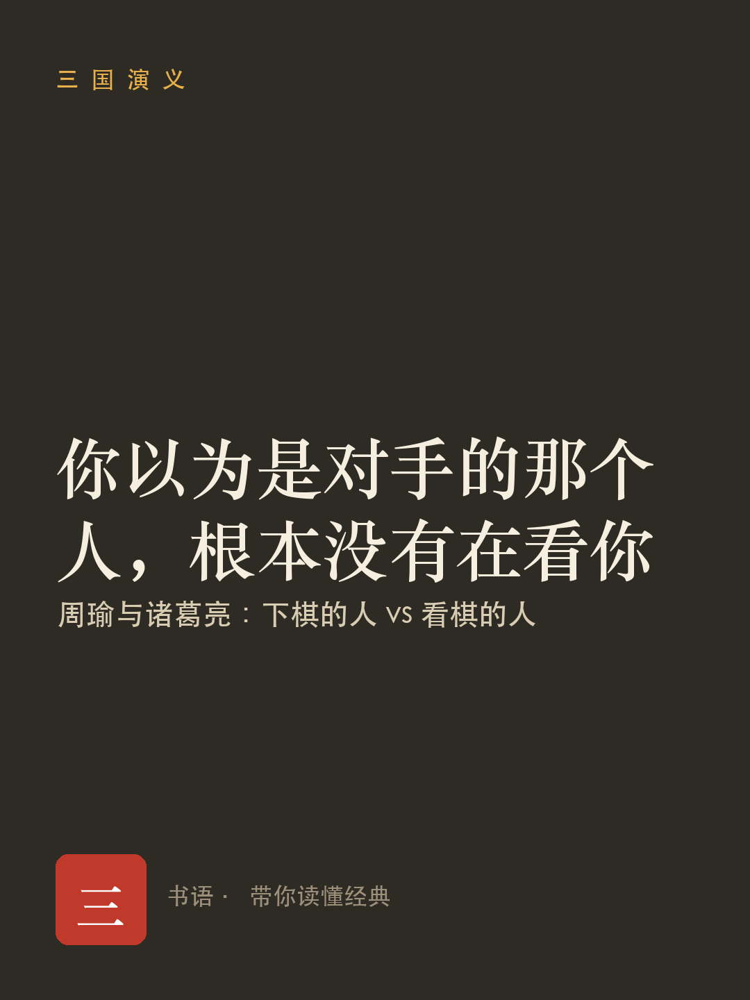
📄 配文·钩子（不剧透）
"既生瑜，何生亮"这句话，其实还有另一种读法＋ 讲透版·自成一体（小红书图文）
周瑜临死那六个字，我们都以为是英雄末路的悲愤。但罗贯中埋了一个更残忍的细节：诸葛亮得知死讯，是笑着说的。笑着。然后转身去江东哭丧，泪如涌泉，转身就走。不是薄情——周瑜根本不在他的棋盘上。他的棋盘是荆州、西川、整个天下。周瑜用一生跟诸葛亮较劲，诸葛亮的心思早已越过了他。拉开两人的，从来不是天赋，是眼界。周瑜在下棋，诸葛亮在看棋。下棋的人为一步棋吐血身亡，观棋的人赢了连对手的脸都懒得回头看。所以别把自己耗在一场一个人的战争里——真正值得你去成为的，是把眼睛抬高放远的人。你的棋盘，应该比眼前这点输赢大得多。
口播稿全文
大家好，我是余儿。
周瑜死前说的那句话，你肯定听过——“既生瑜，何生亮”。
六个字，道尽了一个天才最后的绝望。他恨，恨自己怎么就遇上了诸葛亮；恨老天既然造了他周瑜，为什么还要再造一个孔明。
但罗贯中在这里埋了一个很残忍的细节，你细品过吗？
周瑜死的时候，诸葛亮在干什么？原文写得很轻：“孔明在荆州，夜观天文，见将星坠地，乃笑曰：‘周瑜死矣。’”
笑着说的。
然后第二天，他跟刘备请命去吊丧。刘备担心吴将加害，诸葛亮怎么回的？“瑜在之日，亮犹不惧；今瑜已死，又何患乎？”
你听出来了吗？周瑜活着的时候，他“不惧”；周瑜死了，他连“惧”都懒得惧。
这才是整件事最心酸的地方。
从赤壁到南郡，周瑜跟孔明缠斗了大半程。赤壁时他忌惮，取南郡时他拼命，中了箭还带伤厮杀，结果城池还是被诸葛亮用计取走。到死，他放不下的都是那一句——“既生瑜，何生亮”。
可诸葛亮呢？他的全部精力，从来不在周瑜身上。
你去看他给周瑜写的祭文——情真意切，泪如涌泉，夸周瑜“雄姿英发”、“文武筹略”。众将看了都说：“人尽道公瑾与孔明不睦，今观其祭奠之情，人皆虚言也。”
可哭完转身，孔明就走了。这不是薄情——周瑜根本不在诸葛亮的棋盘上。他去江东之前，早就料定了鲁肃会接任都督；顺道在江边碰上庞统，还替庞统铺好了后路，一句“孙权必不能用你，不得意可来荆州”，就把人往荆州引。
周瑜用尽一生跟诸葛亮较劲，而诸葛亮的心思，已经在荆州、在西川、在整个天下的棋局上。
这不是谁比谁高明的问题。两个人都是顶级的人才，只是周瑜在下棋，而诸葛亮在看棋。下棋的人为了一步棋可以吐血身亡，看棋的人赢了之后，连对手的脸都懒得再回头看一眼。
所以“既生瑜，何生亮”这句话，还可以换一个读法——
拉开周瑜和诸葛亮的，从来不是天赋，是眼界。周瑜的眼睛死死盯着诸葛亮，诸葛亮的眼睛，却望着荆州、西川，望着整个天下。一个在争一时的胜负，一个在看一整盘棋。
我们太容易活成周瑜了——把身边一个同事、一个对手，当成非赢不可的一生之敌，为一城一池的得失，较劲到吐血。
可真正值得你去成为的，是诸葛亮那样的人：不困在跟谁的死磕里，把眼睛抬高、放远。你会发现，你真正想去的地方，比眼前这点输赢大得多。
格局大了，对手就小了。别把自己耗在一场一个人的战争里——你本该在一张更大的棋盘上。
82旧版洞见scene公版✓ 判官过审开篇一词+“分久必合”两连击，给《三国》立下成败皆空的总纲
🎬 杨慎词与毛宗岗评改本移至书前，为三国立下成败皆空的总纲。
图卡待生成
口播稿全文
大家好，我是鱼儿。
您翻开《三国演义》第一页，那首荡气回肠的《临江仙》，其实并非原著作者罗贯中亲笔。它是明代学者杨慎所作，清代毛宗岗评改本时才将其移至书前。但这并不妨碍它成为全书最精准的注脚。
“滚滚长江东逝水，浪花淘尽英雄。”
这八个字，给整部《三国》定下了一个极其冷峻的底色：成败皆空。
很多读者初读三国，容易陷入一种“胜负欲”的迷思，执着于谁赢了、谁输了，谁忠义、谁奸诈。但小说开篇就抛出了那个著名的叙事母题：“话说天下大势，分久必合，合久必分。”
请注意，书里紧接着列举了周末七国并入秦、秦汉分争又并入汉的历史循环。这不是在讲某种不可违抗的“铁律”，而是在提示一种宏大的视角：在时间的长河里，个人的奋斗、权谋、甚至生死，都显得渺小而短暂。
这种“空”的基调，并没有让故事变得虚无，反而让随后登场的人物更加真实、厚重。
当榜文行到涿县，引出刘备这个英雄时，我们看到的不是一个天生赢家，而是一个家贫贩履、年近三十仍无立锥之地的宗室后裔。他面对黄巾起义，慨然长叹的是“恨力不能”。
关羽因杀豪强逃难江湖，张飞卖酒屠猪，他们三人结义时说：“不求同年同月同日生，但愿同年同月同日死。”
你看，在开篇那种“古今多少事，都付笑谈中”的苍凉背景下，这些具体的、带着体温的人情与誓约，才显得格外动人。因为知道结局是“空”，过程中的“尽力”才有了重量。
书里写曹操，许劭评价他是“治世之能臣，乱世之奸雄”。曹操也确实在乱世中展现了极高的权谋与机变。但即便如曹操这般人物，在历史的洪流中，也不过是“浪花”中的一朵。
我们读《三国》，不是为了看谁更厚黑，也不是为了学谁更成功。而是透过杨慎那首词和罗贯中的叙事，看到一种张力：一边是“分久必合”的历史大势，冰冷而宏大；另一边是刘备、关羽、张飞等人“救困扶危”的个体努力，热烈而悲壮。
这种张力，正是《三国》迷人的地方。它不保证人定胜天，也不主张宿命躺平。它只是冷静地告诉你：青山依旧在，几度夕阳红。
所以，当你合上书本，回到自己的生活里，或许可以换个视角看问题。那些让你焦虑的成败得失，放在更长的时间维度里，也许并不那么沉重。重要的是，像书里的人一样，在属于自己的“乱世”或“顺境”中，找到值得坚守的东西，然后尽力去做。
毕竟，浪花终会淘尽英雄，但那份面对命运时的姿态，才是我们真正能抓住的“青山”。
82旧版洞见scene公版✓ 判官过审杨慎的《临江仙》为什么偏偏适合做三国的开篇
🎬 一首流放诗人的词，如何准确说出了三国故事的终极结局？
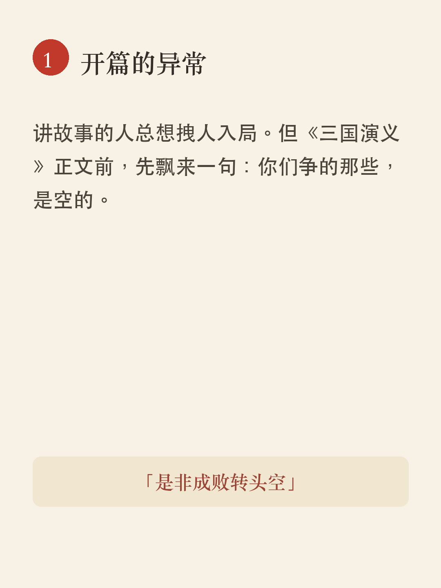
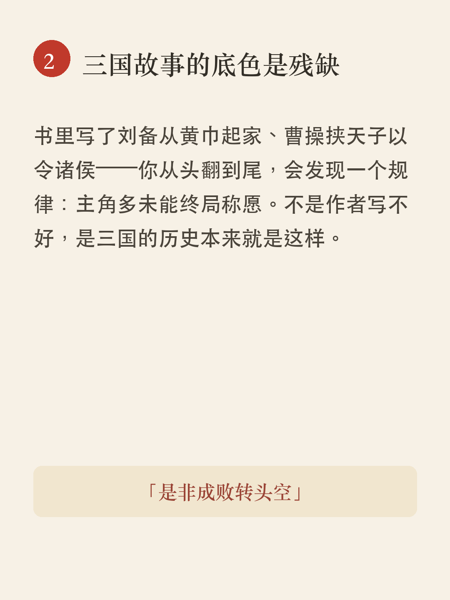
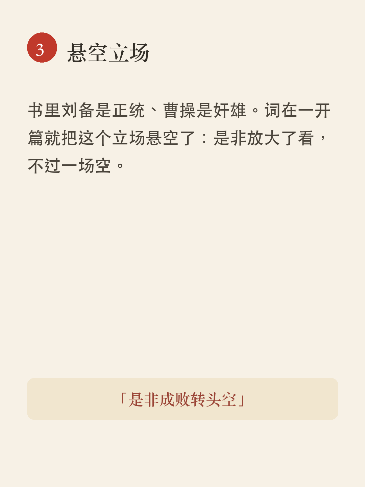
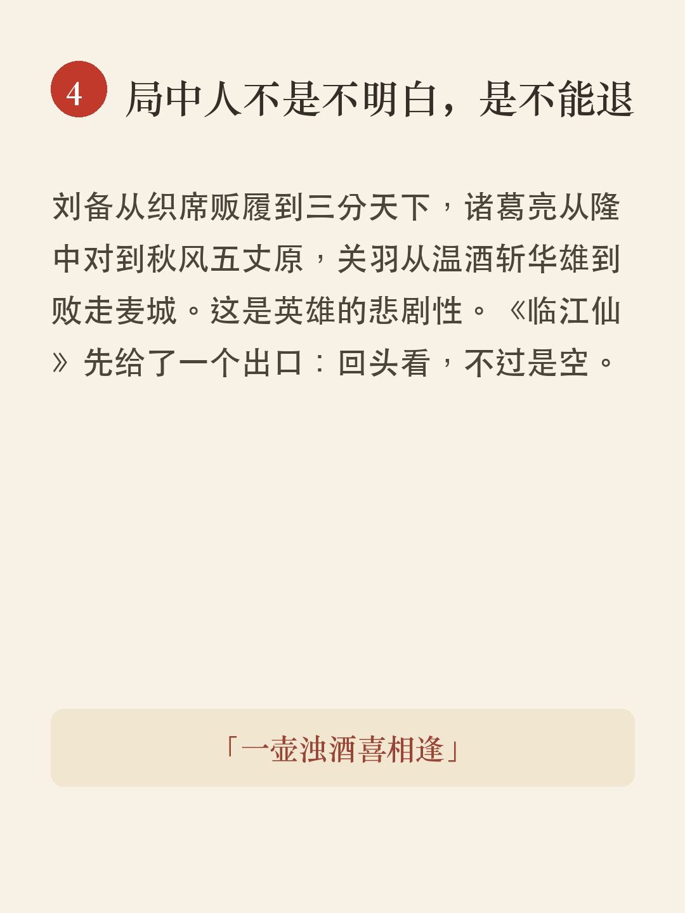
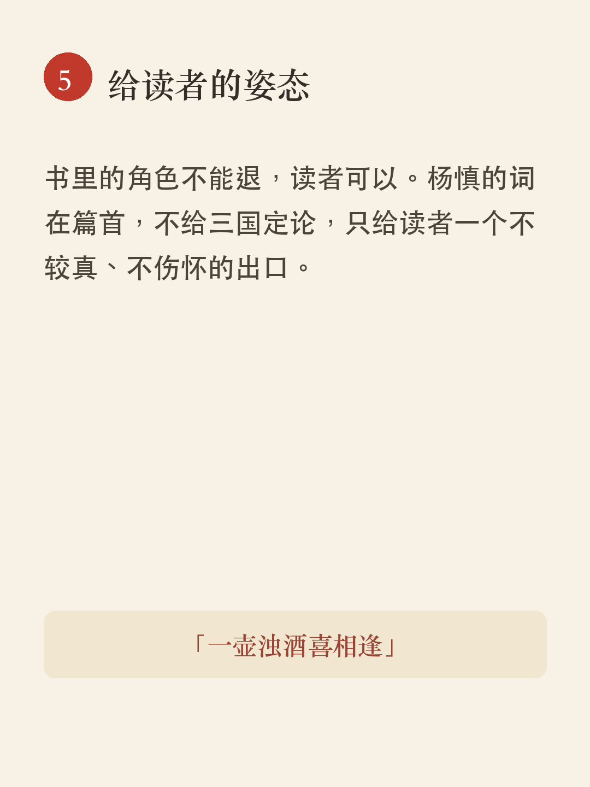
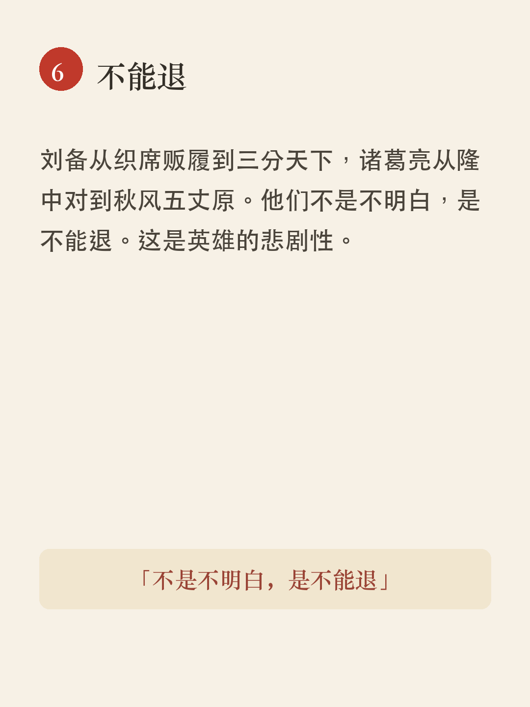
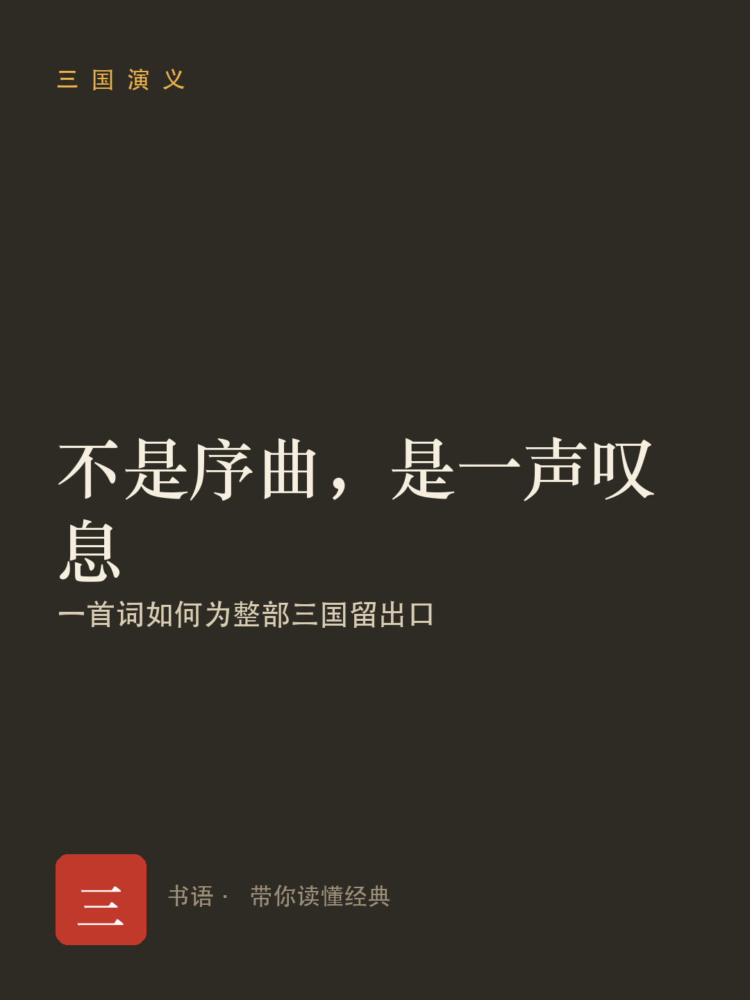
📄 配文·钩子（不剧透）
杨慎写这首词的时候，江边坐着个钓鱼的老头，听了一辈子人起高楼、宴宾客、楼塌了——他说，来吧，拿酒来聊。＋ 讲透版·自成一体（小红书图文）
《临江仙》最厉害的地方，不是给三国下了一个定论，而是给读三国的人一双眼睛。书里全是局中人——刘备、曹操、诸葛亮、关羽——他们不是不明白局势，是不能退，退了就对不起自己这辈子。这是英雄的宿命，读者陷进去看到最后会喘不过气。而词先在那个喘不过气的地方，给你一个出口。那个江边钓鱼的老头，不站在刘备那边，也不站在曹操那边，他只是看过太多人来来去去，觉得有意思。但你注意那个"付"字：那些故事没有被时间冲散，而是一代代交到了讲故事的人手里。从杨慎写这首词，到罗贯中把它放在书前，到今天你翻开这本书——这个"付"字，一直生效。所以读三国的正确姿势，是又动情、又开阔。动情，因为局中人拼尽了全力；开阔，因为你站在词的这一头看得见：成败输给时间，故事赢了时间。
口播稿全文
大家好，我是鱼儿。
一首词，放在一部讲帝王将相的书最前面——这安排本身就透着意味。讲故事的人，按理该急着把人拽进去，告诉你谁最厉害、谁最忠义、谁该恨。可《三国演义》偏不。它在正文开始之前，先让一个声音飘过来，说：你们争的那些是非成败，都是空的。
这话听着消极，但它准确。书里后来写了什么？写了桓帝禁锢善类、崇信宦官；写了张角得书、黄巾起义；写了董卓弄权、窦武陈蕃谋诛不成反为所害。每一个章节都在告诉你，有人赢了、有人输了、有人忠、有人奸。可你从头翻到尾，会发现一个规律：主角多未能终局称愿——刘备从黄巾之乱起家，一路征战，最后白帝城托孤；曹操挟天子以令诸侯，最终也是三分归晋。多数人物结局不圆满，宿命感强。为什么？因为结局本身就是残缺的——这不是作者写不好，而是三国的历史本来就是这样。
《临江仙》厉害的地方在于，它把这层意思提前说破了。词里说“浪花淘尽英雄”，不是说你打不过别人就叫失败，而是说——连英雄本人都要被时间淘掉。更狠的是那句“是非成败转头空”。什么叫是非？刘备是正统、曹操是奸雄，这是书里的立场。但词在一开篇就把这个立场悬空了：你们争的“是非”，放在更大的时间尺度里，不过是一场空。为什么“一壶浊酒喜相逢”？因为那个在江边钓鱼的老头，他已经看了一辈子的人起高楼、宴宾客、楼塌了。他不站在刘备那边，也不站在曹操那边，他只是觉得你们来来去去挺有意思，拿酒来聊吧。
相较以局中人为主的叙事，篇首词提供了超然旁观的基调。书里写的多是局中人——刘备从织席贩履到三分天下，诸葛亮从隆中对到秋风五丈原，关羽从温酒斩华雄到败走麦城。他们不是不明白，是不能退。这是英雄的悲剧性，也是书最打动人的地方。但读者如果一路陷进去，看到最后会觉得喘不过气。《临江仙》就是在那口气上，先给你一个出口：在杨慎这阕词的眼里，所有的英雄气短，所有的壮志未酬，回头看，不过是“是非成败转头空”。
书里还有一个细节很有意思。词用的是“渔樵”——不是帝王、不是谋士、不是将军，是江边打鱼的山里人。这不是随便写的。帝王将相的故事，最后谁在听？恰恰是这些不在局中的人。三国的故事之所以流传到今天，恰恰是因为每一代都有局外人在茶余饭后谈论它。“古今多少事，都付笑谈中”——聊的人换了无数拨，事还是那些事。置此词于篇首的效果是：它不是要给三国一个定论，而是要给读三国的人一双眼睛。“青山依旧在，几度夕阳红”——人争不过时间，英雄也一样。但你注意“都付笑谈中”的那个“付”字：付，是交付的付。那些事没有被时间抹掉，而是被交到了一代又一代讲故事的人手里，一直传到今天。所以读三国可以又动情、又开阔：动情，因为局中人拼尽了全力；开阔，因为你站在词的这一头看得见——成败输给了时间，故事却赢了时间。
80旧版映照scene公版✓ 判官过审088_映照_那句勿以善小而不為
🎬 刘备临终前留给儿子的话，不是如何打天下，是：「别因为好事小就不做。」
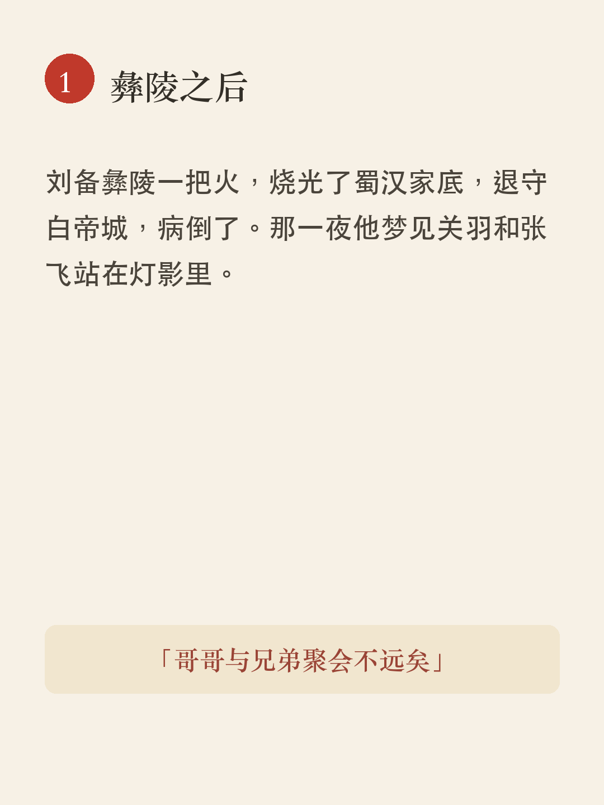
📄 配文·钩子（不剧透）
一个输了江山的父亲，临终前对儿子说的不是如何打仗＋ 讲透版·自成一体（小红书图文）
刘备彝陵兵败，退到白帝城。那一夜他梦见关羽和张飞，醒来知道自己时日无多。托孤诸葛亮之后，他给太子刘禅留下一份遗诏，里面有句话后来传了千年：「勿以恶小而为之，勿以善小而不为。」
你发现没有，这是一个打了一辈子仗的人，临终留给儿子的最后一句话。不是战略层面的叮嘱，不是什么高深谋略，是一个父亲说：别因为坏事小就去做，也别因为好事小就不做。
他丢了徐州，丢了荆州，丢了两个把弟，最后一把火又烧掉了大半辈子的积攒。他心里清楚，这基业怕是守不住多久了。所以他最后说的是：你爹德薄，不足效也。
我们今天也一样。打工人想的是什么？大的机会、关键的选择、能不能翻身。好像人生是由那几个高光时刻决定的。
但刘备用他整个一生告诉你：不是的。是你每天怎么对人，怎么处理一件小事，怎么拒绝一个诱惑，怎么坚持一个没人看见的选择。那些东西才构成你这个人。
他打了一辈子仗，最后押注的不是江山，是这一件一件的小善。而这十四个字，真的比他的江山活得更久。
口播稿全文
大家好，我是余儿。
刘备打了大半辈子仗，夷陵一把火烧光了蜀汉的家底，他退到白帝城，病倒了。
那一夜他做了一个梦，梦见关羽和张飞站在灯影里。他喊他们，兄弟说：「上帝以臣二人平生不失信义，皆敕命为神。哥哥与兄弟聚会不远矣。」
刘备惊醒过来，知道自己时日无多，派人去成都把诸葛亮和李严叫来。
诸葛亮到了，刘备拉著他的手说了很多。说自己当年不听丞相的话，才落到这步田地。说了「君才十倍曹丕，必能安邦定国」。说了「若嗣子可辅，则辅之；如其不才，君可自为成都之主」——这句话让诸葛亮汗流遍体，叩头流血。
但我反复读这段，最打动我的不是这些。
是后来那份遗诏。
刘备死了，诸葛亮率众官奉梓宫还成都，刘禅开读遗诏。诏书里有一句话，后来成了整部《三国演义》流传最广的句子之一：
「勿以恶小而为之，勿以善小而不为。」
就这十四个字。
你发现没有，这是一个打了一辈子仗的人，留给儿子的话里，最被后世记住的一句。不是「如何巩固江山」，不是「怎样防备魏吴」，不是任何一个战略层面的叮嘱。
是一个父亲说：别因为坏事小就去做，也别因为好事小就不做。
他打了那么多年的仗，丢过徐州，丢过荆州，丢了两位结义兄弟，夷陵一把火烧掉了大半辈子积攒的兵马。而他自己心里清楚，这点基业，怕是守不住多久了。
所以他最后对刘禅说的，不是你爹多厉害，而是：你爹德薄，不足效也。
一个六十三岁的老人，在遗诏里承认自己德行不够，然后把最重的嘱托押在了一句最朴素的话上——一件一件的小善。
这件事我每次读都会停下来。
我们今天也一样。打工人想的是什么？大的机会、关键的选择、能不能翻身。好像人生是由那几个高光时刻决定的。
但刘备用他整个一生告诉你：不是的。是你每天怎么对人，怎么处理一件小事，怎么拒绝一个诱惑，怎么坚持一个没人看见的选择。那些东西才构成你这个人。
他没有留下一套兵法，没有留下一张地图，留下的就是这十四个字。
而这十四个字，比他的江山活得久多了。
80旧版洞见scene公版✓ 判官过审赤壁之战的真正英雄
🎬 火攻的计策是黄盖提出的，中间那封假投降信是他冒死送出的。没有黄盖，没有赤壁。
📄 配文·钩子（不剧透）
赤壁那把火，到底是谁点的？＋ 讲透版·自成一体（小红书图文）
赤壁打完一千八百年了，人们记住周瑜的谋、诸葛亮的东风，可有一个人，每次读到他的段落我心里都发沉——黄盖。火船是他安排的，诈降信是他写的，火是他亲手点的。这三件事，少一件都没有那场胜利。历史总把聚光灯打在运筹帷幄的人身上，我们记住了火烧赤壁的潇洒、东风破曹的传奇，却忘了真正把自己送进火海里的人是谁。最聪明的人想出计策，有魄力的人做出决策，但差的那一步，永远需要有人站出来，亲自去填。黄盖不是天才，他只是一个愿意去做的普通人——而历史，有时候就是这样被这样的人改写的。
口播稿全文
大家好，我是小京。
赤壁打完一千八百年了。每次聊起这仗，人们嘴里说的永远是那几个人——周瑜运筹帷幄，诸葛亮神机妙算借来三天三夜的东南风。可你要是翻开演义第四十九回，细细把那些边角料里的人和事捋一遍，会有一个名字从字缝里跳出来，硬生生撑住整场胜利的底座。
这个人，就是黄盖。
我想说的其实很简单：赤壁能赢，周瑜的谋、孔明的风都算数，可还有决定性的一步，是黄盖一个人扛下来的。顺着原文看三件事，你就明白了。
第一件事，是火船。周瑜调兵，演义写得明白——“却令黄盖安排火船，使小卒驰书约曹操令夜来降。”周瑜是统帅，调兵遣将是他的本分，但“安排火船”这四个字，不是随随便便安在谁头上的。那是整整二十只船，船头密布大钉，船舱里装着芦苇干柴，浇了鱼油，再铺硫黄焰硝，青布油单遮盖得严严实实。这套最凶险的活儿，周瑜单独交给黄盖去办——交给那个愿意把自己往火里推的人。
第二件，是那封诈降信。黄盖写了密书，让小卒送进曹营，说周瑜防得太紧，自己找不到脱身的机会，打算趁周瑜派他巡哨之便，杀几个江东名将，提着人头来投降，只在今晚三更。曹操看完大喜，亲自跑到水寨船上等着接应；程昱劝他，说来船吃水太浅、恐怕有诈，曹操没听。诈降这种事，成了功成名就，败了就是身首异处——黄盖当然知道，可他还是写，还是送。这封信，是拿命在赌。
第三件，是亲自点火。二十只火船逼近曹营时，黄盖在第三只船上，披着掩心甲，手提利刃，船头大书四个字——“先锋黄盖”。东风大作，曹操在船头迎风大笑，以为自己鸿运当头。文聘奉命来拦，跳上小船立在船头大喊——“南船且休近寨！”话还没说完，被箭射中左臂，船上大乱。就在这时，黄盖手起刀落，前船齐齐发火。火趁风威，风助火势，二十只火船撞进铁环锁死的船阵里，三江面上火逐风飞，漫天彻地。
火还没烧尽，黄盖已经跳上小船追了上去。他看见一个穿绛红袍子的下船，料定是曹操，高声大叫——“曹贼休走！黄盖在此！”曹操叫苦连声。张辽拈弓搭箭，一箭正中黄盖肩窝，黄盖翻身落水，生死未卜。
你说火攻的计策是黄盖提的吗？演义里没有明写。可谁安排的二十只火船，谁写的诈降信，谁披甲持刃冲在最前、把火点着——都是他。周瑜在船上运筹帷幄，诸葛亮在七星坛上借风，真正把船送进去、把曹军烧成一片火海的，是那个被后人提起赤壁时几乎想不起来的名字。
历史总把聚光灯打在那些运筹帷幄的人身上。我们记住了周瑜火烧赤壁的潇洒，记住了诸葛亮借东风的传奇，却忘了真正点燃那把火的人，是自己走上船、把自己送进火海里的黄盖。
最关键的一步，往往不是最聪明的人想出来的，而是那个愿意拿自己的命去赌、去走的人走出来的。黄盖不是天才，他只是一个愿意去做的普通人。但历史有时候就是这样——差的那一步，永远需要有人站出来，亲自去填。
80旧版洞见scene公版✓ 判官过审曹操哭袁绍：权谋家的几分真情
🎬 曹操在袁绍墓前哭了一场，说了句「吾任天下之智力」——您信他是真心的吗？
📄 配文·钩子（不剧透）
曹操在袁绍墓前哭了一场，是真心的吗？＋ 讲透版·自成一体（小红书图文）
曹操和袁绍是发小，从洛阳城里一起混大的。这份交情不会因为后来兵戎相见就一笔勾销——曹操说"此言如昨"，他真的记得两个人年轻时说过什么。但紧接着，他用赐金帛、免租赋来收买河北人心，这套组合拳又分明是政治操作。
有意思的是那个"不能不"。他想不哭，但做不到。那一刻在墓前的眼泪，确实是咽不下去的。
但真情和算计从不矛盾——曹操不是机器，他是一个真实的、复杂的人。同在这一回，郭嘉死了，他说"心肠崩裂"，四个字出自曹操之口，太不寻常了。对郭嘉是十成十的心腹，对袁绍是五成老交情加五成政治作秀，这个比例分配，非常曹操。
权谋者的情感，往往比普通人更复杂——因为每一次动情，都要考虑这情分值不值得、会不会被利用。而那句"以道御之，无所不可"，袁绍已死，听不到了，这话是说给活人看的：我曹操凭的不是家世地盘，是这份格局。
真情和算计，在这一刻合二为一。这就是曹操——也是每一个在现实里拉扯的成年人。
口播稿全文
大家好，我是鱼儿。
曹操在袁绍墓前哭了一场，说了句“吾任天下之智力，以道御之，无所不可”——您信他是真心的吗？
这一段发生在曹操刚刚平定冀州的时候，他亲往袁绍墓下设祭，再拜而哭甚哀。哭完了，他对众将讲起当年往事：当年他和袁绍一起起兵的时候，袁绍问他，若事不济，该怎么据守？曹操答了那句著名的话——“吾任天下之智力，以道御之，无所不可”。然后他说：“此言如昨，而今本初已丧，吾不能不为流涕也。”
好，我们就来看看这场哭祭里，到底有几分真心，几分算计。
先说真心这部分。曹操和袁绍，是发小。两个人年轻时就是洛阳城里的老相识，后来各据一方，一个成了北方最大的诸侯，一个成了乱世里最强的赢家。他们之间有合作、有博弈、有嫌隙，但那份从少年时代就积攒下来的交情，不会因为后来兵戎相见就一笔勾销。曹操说“此言如昨”，这不是场面话——他真的记得两个人年轻时说过什么、想过什么。袁绍死了，那个时代跟他并肩起步的人又少了一个。兔死狐悲，这个词用在这里不算过分。
再看曹操紧接着做的事：他以金帛粮米赐袁绍的妻子刘氏，下令河北居民遭兵革之难，尽免今年租赋。这一套组合拳下来，效果是立竿见影的——袁绍旧部知道曹操不是来斩草除根的，愿意归顺；河北百姓知道这位新主人并非残暴之徒，人心渐渐安定。所以这场哭祭，首先是一次政治表态，是曹操在告诉整个河北：我是来收拾局面的，不是来泄私愤的。
但问题来了——政治表态，能不能同时带着真情？曹操不是一台精密运转的机器，他是一个有血有肉的人。
同在这一回里，曹操还有一个哭，情感浓度要高出十倍不止。那是郭嘉死了，曹操“亲往祭之，大哭曰：‘奉孝死，乃天丧吾也！’”，回头对众官说：“诸君年齿，皆孤等辈，惟奉孝最少。吾欲托以后事，不期中年夭折，使吾心肠崩裂矣！”这两场哭，一对比，高下立判：哭袁绍是礼节性的、是感慨的、是政治家式的；而哭郭嘉，是彻底失控的、是无法掩饰的——“心肠崩裂”这四个字，出自曹操之口，太不寻常了。
但这恰恰说明，曹操不是没有真情，而是真情有深浅。对郭嘉是十成十的心腹之交，对袁绍是五成的老交情加五成的政治作秀，这个比例分配，非常符合一个真实的、复杂的曹操。
还有一个细节值得注意。曹操在哭袁绍时说“吾不能不为流涕”，用的是“不能不”这三个字。这是一种被迫的、被情感推着走的表述——他想不哭，但做不到。哪怕这场哭祭有政治目的，哪怕他随后就用赏赐和免税来收买人心，那一刻在墓前的眼泪，确实是咽不下去的。
所以你问我信不信他是真心的？我的回答是：信，也不全信。曹操这个人，一辈子都在权谋和性情之间拉扯。他哭袁绍，是真心，但也是政治；他对郭嘉是真心，对许攸则是另一副面孔。你看同在这一回里，许攸被许褚杀了，曹操“深责许褚，令厚葬许攸”，表面文章做得周全，但那语气里的疏淡，跟他哭郭嘉时的“天丧吾也”相比，冷暖立见。
这就是曹操。他不是没有真情，而是真情从来不是孤立存在的——它常常跟算计交织在一起、跟利益并行——两头在他身上互相拉扯，各有各的代价。权谋者的情感，往往比普通人更复杂，因为他们的每一次动情，都要考虑这情分值不值得、会不会被利用、能不能换来什么。这不是虚伪，这是乱世里活下来的生存法则。
而那句“吾任天下之智力，以道御之，无所不可”，他说这话的时候，袁绍已经死了。死人听不到这话了。这句话真正说给谁听的？是给活人看的——给河北的旧部看，给手下的将军看，给天下还想投奔他的人看：我曹操，凭的不是家世、不是地盘，是这份格局和胸怀。
真情和算计，在这一刻合二为一。这就是曹操。
80旧版人物scene公版✓ 判官过审从预言到伏诛：诸葛亮如何一步步引爆魏延的“反骨”
🎬 诸葛亮临终密计诱导魏延连叫三声，马岱从脑后刀落，揭开权力交接的残酷真相
图卡待生成
口播稿全文
大家好，我是鱼儿。
一个人再能打、功劳再大，只要接受不了权力交到别人手里，就可能被组织亲手除掉。《三国演义》里魏延的死，把这个过程写得明明白白——他不是天生反骨，而是被诸葛亮临终设下的一个局，一步步引爆的。
诸葛亮临终前，给武将马岱留了一道密计，又给长史杨仪一个锦囊。他说：“我死，魏延必反；待其反时，汝与临阵，方开此囊。那时自有斩魏延之人也。”
这话听起来像是一个早已写好的剧本：丞相算无遗策，魏延天生反骨，结局早已注定。甚至吴太后还补了一刀，说先帝曾言孔明识得魏延脑后“反骨”，只因怜其勇才留用至今。
但如果你只看到“预言成真”的爽感，就错过了《三国演义》里最残酷的一层逻辑。
让我们回到诸葛亮刚咽气的那一刻。
魏延做了什么？他梦见头生二角，醒来疑惧，去问行军司马赵直。赵直为了讨好他，说是“麒麟有角，变化飞腾之象”，是大吉。魏延大喜。但这只是表象。真正的冲突，发生在权力交接的缝隙里。
丞相遗命：杨仪总领退兵，姜维断后，魏延断后。
魏延的反应是什么？原文写得极重：“延大怒曰：‘竖儒焉敢欺我！’”
注意这个“怒”。不是委屈，是暴怒。
他接着说：“丞相虽亡，吾今尚在。杨仪不过一长史，安能当此大任？”
这里有一个非常具体的细节：魏延的官职是“前将军、征西大将军、南郑侯”，而杨仪只是“长史”。在军阶上，魏延远高于杨仪。但在政治地位上，杨仪是丞相指定的“代理人”。
魏延的逻辑很简单：我战功赫赫，你是文官，凭什么指挥我？他不仅不服，还直接提出：“我自率兵攻司马懿，务要成功。”
这是一个极具诱惑力的提议——继续北伐，用军功来证明谁才是蜀汉的真正核心。但费祗劝住了他，让他先退兵安葬丞相。魏延依言，却暗中派人探听虚实，发现后军已退，前军入谷，他才彻底爆发：“竖儒焉敢欺我！我必杀之！”
于是，魏延烧绝栈道，引兵拦路，甚至劫持了丞相的灵车。
请注意这个动作：**劫灵车**。
在儒家伦理和军法中，这是大逆不道。它不再是“争权”，而是“谋反”的实锤。杨仪在锦囊里读到诸葛亮的话时，惊呼：“谁想今日果然如此。”但这并非因为诸葛亮有超自然能力，而是因为魏延的行为逻辑，完全落入了诸葛亮预设的陷阱。
诸葛亮早就看透了魏延的性格：**恃功、傲物、不能容人**。
他给马岱的密计，不是去“抓”一个反贼，而是去“诱导”一个反贼暴露。
当杨仪在阵前打开锦囊，让魏延在马上连叫三声“谁敢杀我”时，这不仅仅是一个激将法，更是一个心理测试。
魏延大笑：“休道连叫三声，便叫三万声，亦有何难？”
他叫了。一声未毕，马岱从脑后应声而出，手起刀落。
为什么是马岱？因为马岱一直“素恨杨仪”，且“愿助将军攻之”。魏延以为找到了盟友，却不知这正是诸葛亮布下的局。诸葛亮利用魏延对杨仪的恨，利用马岱对杨仪的恨，将这两股力量拧成一股绳，专门用来绞杀魏延。
魏延之死，不是因为他“天生反骨”，而是因为他**无法接受权力的让渡**。
他以为自己是诸葛亮的军事继承人，是蜀汉的支柱。但他忘了，在诸葛亮眼中，蜀汉的稳定高于个人的战功。魏延的勇猛，可以北伐；但他的傲慢和冲动，会瓦解刚刚建立的权力结构。
诸葛亮没有杀魏延，是因为魏延还有用。
诸葛亮留了锦囊，是因为他知道魏延必反。
这个“必反”，不是玄学，是人性与制度碰撞的必然。
魏延最后问马岱：“我等投魏，若何？”
马岱说：“大丈夫何不自图霸业，乃轻屈膝于人耶？”
这句话很精彩，但它掩盖了魏延的困境。他既不能接受杨仪的指挥，又无法真正独立（兵力不足，众叛亲离），更无法回头（已烧栈道，劫灵车）。他的路，被自己一步步堵死了。
诸葛亮用一生证明了“谋事在人”，但他也留下了一个无解的命题：当个人的才华与性格，与组织的规则发生剧烈冲突时，谁来承担代价？
魏延承担了。他死在“谁敢杀我”的回声中，也死在自己无法妥协的性格里。
这不是预言的胜利，这是人性的悲剧。
78旧版洞见thread公版✓ 判官过审三国的故事，其实是「全员皆输」的故事
🎬 中国最家喻户晓的故事，居然是一场所有人集体失败的悲剧，您信吗？
📄 配文·钩子（不剧透）
桃园三结义那年许下的誓言，后来都怎么样了？＋ 讲透版·自成一体（小红书图文）
《临江仙》那句「是非成败转头空」，小时候读只觉得悲凉，现在才懂它是整部《三国演义》的主题——三国的故事，不是谁赢了谁，而是时间赢了所有人。
桃园三结义那一幕，是全书最纯粹的底色。刘关张三人，一个卖草鞋、一个逃难、一个杀猪，在一棵桃树下许下“上报国家、下安黎庶”的宏愿。可就在同一回里，卢植有功反被陷害，十常侍依旧祸乱朝堂——英雄的理想，从一开始就已被现实撕裂。后面的故事，不过是把这种撕裂一次次放大。
但《临江仙》没有停在悲凉里。它说“一壶浊酒喜相逢”，时间既是所有人的敌人，也是所有人意义的见证者。那些明知不可为而为之的瞬间——北伐中原的那一步——恰恰因为时间的消磨，才有了穿透千年的分量。
三国的故事流传千年，不是因为权谋，而是因为它讲的是人与时间的关系。
口播稿全文
大家好，我是鱼儿。
滚滚长江东逝水，浪花淘尽英雄。
《临江仙》开篇这几句词——杨慎写的、后被置于卷首——是中国文学里最苍凉的感慨。但它不只是文人的感慨，它其实是整部《三国演义》真正的主题——三国的故事，不是谁赢了谁，而是时间赢了所有人。
为什么这么说？让我们回到全书的开篇。
桃园三结义，是整部书最纯粹的一刻。刘备、关羽、张飞三人焚香再拜，立下誓言：“同心协力，救困扶危；上报国家，下安黎庶。”三个人，一个卖草鞋的，一个逃难的，一个杀猪的，在一棵桃树下许下了一生最宏大的理想。这个理想，是整部书最明亮的底色。
可是，这份理想能维持多久？
就在这一回里，刘备带着关张去投奔恩师卢植，想为国家效力。结果他们看到的是什么？卢植在前方与黄巾军作战，正要取胜，却被黄门左丰以索贿不遂回奏陷害，押送回京问罪。真正有功的人，反而身陷囹圄。而朝廷里“十常侍”依旧把持朝政，祸乱天下。
这个细节太小了，小到很多人读过去就忘。但它恰恰是整部《三国演义》最深的伏笔——英雄的理想，从一开始就被现实撕裂了。后面的故事，不过是把这种撕裂一次次放大。
《临江仙》早就把答案写在了开头——“是非成败转头空”。
这不是虚无，不是消极，而是读透三国之后最深沉的真相。时间消磨了刘备、关羽、张飞当年桃树下的盟誓，也消磨了后世的雄图与执念。从刘蜀、诸葛的视角看，志未酬而身先死，是贯穿全书的悲凉底色。
但恰恰因为如此，那些明知不可为而为之的瞬间，才格外动人。三结义的那一刻，北伐中原的那一步，才有了穿透千年的分量。时间打败了所有人的野心，却打不败那些燃烧过的执念。
开篇《临江仙》中已云“一壶浊酒喜相逢，古今多少事，都付笑谈中”。时间既是他们的敌人，也是他们意义的见证者。
所以三国的故事为什么流传千年？因为它讲的不是权谋，而是一个人、一个时代、一种理想与时间的关系。这是它最深处的东西。
78旧版映照thread公版✓ 判官过审明知会输，还要不要打
🎬 诸葛亮六出祁山，每一天他都知道结局写好了。但他还是出发了。
📄 配文·钩子（不剧透）
老天一场雨浇灭的不只是火，还有诸葛亮的最后一次机会。那他为什么还要出发六次？＋ 讲透版·自成一体（小红书图文）
五丈原上，诸葛亮用七星灯祈禳续命。他夜观天象，看见客星越来越亮、主星越来越暗，就知道自己的命快到头了。但他还是在帐中设了七盏大灯、四十九盏小灯，踏罡步斗，为自己祈求命运多给一点时间。第七天，主灯被魏延扑灭。他捡起剑叹了口气，说了那句“死生有命，不可得而禳也”。这句话不是认命，而是一种清醒。
其实从上方谷那天起，他就知道结局了。蜀汉和曹魏的国力差距太大，这不是一个人能改变的。但他还是去了六次。为什么？因为他不是为胜利而战，而是为托付而战。先帝三顾茅庐的知遇之恩，白帝城托孤的信任，这些东西让他无法放弃。他不是不知道自己会死，而是知道之后反而更清醒——正因为时间有限，才要把每一天都用尽全力。主簿杨颙劝他别太操劳，他哭着说：“吾非不知，但受先帝托孤之重，惟恐他人不似我尽心也。”
所以诸葛亮的故事从来不是成功学。他是给所有面对无能为力之事的人的一面镜子：明知道结局可能已经写好了，你还会全力以赴吗？他用一生回答了这个问题——出发了六次，每一次都知道可能是最后一次，但他还是出发了。这不是愚蠢，也不是执着，这是一种诚实的选择。既然有些事值得做，那就不问结局，倾尽所有。谋事在人，成事在天，但“人”这一步，他一步都没有省。
口播稿全文
大家好，我是小京。
上方谷那场火，烧得天地都变色了。司马懿被困在谷底，火光冲天，他下马抱两个儿子大哭，说今天要死在这里了。那一刻，所有人都以为结局定了——诸葛亮赢了，司马懿死了，天命站在蜀汉这边。
但老天爷偏偏下了一场雨。
那场雨浇灭的不只是火，也浇灭了诸葛亮最后的机会。诸葛亮在山上看见火光大起，心中甚喜，以为司马懿此番必死。不期天降大雨，火不能着，司马懿父子俱逃去了。孔明叹曰：“谋事在人，成事在天，不可强也。”这句话后来被多少人引用，但很少有人真的读懂了他那一刻的心情。他不是认命，他是承认有些东西不在自己手里。
后来的事更让人心酸。诸葛亮送了一套巾帼并妇人缟素之服给司马懿，羞辱他出战。司马懿看完信，心中大怒，佯笑说“孔明视我为妇人耶”，受了衣服，重待来使。问使者，诸葛亮每天吃多少饭？使者说不过数升米。司马懿转头对将领们说了一句话：“孔明食少事烦，其能久乎。”使者把这话带回去，诸葛亮听完长叹一声，说：“彼深知我也。”不是敌人了解我，而是他看穿了我的命。
五丈原上，他扶病理事，吐血不止，每天还是处理公务到深夜。夜观天象，见三台星中客星倍明，主星幽隐相辅列曜，其光昏暗，他知道自己的命快到头了。但他还是在帐中设了七盏大灯、外布四十九盏小灯，踏罡步斗，祈禳北斗。若七日之内主灯不灭，可增寿一纪；若灯灭，则必死无疑。第六天灯还亮着，他心中甚喜。第七天魏延冲进来报告军情，脚步太急，竟将主灯扑灭。诸葛亮弃剑叹了口气说：“死生有命，不可得而禳也。”
你发现没有，他早就知道结局了。他知道蜀汉和曹魏的国力差距太大，这不是一个人能改变的。但他还是一次次出发，明知会输还是去了。
为什么？因为他不是为胜利而战，而是为托付而战。先帝三顾茅庐的知遇之恩，白帝城托孤的信任，这些东西让他无法放弃。他不是不知道自己会死，而是知道之后反而更清醒——正因为时间有限，才要把每一天都用尽全力。
主簿杨颙劝他别太操劳，说"为治有体，上下不可相侵"，他哭着说：“吾非不知，但受先帝托孤之重，惟恐他人不似我尽心也。”这句话里没有豪言壮语，只有一个人的疲惫和不肯放手的执念。
所以诸葛亮的故事从来不是成功学。他是给所有面对无能为力之事的人的一面镜子——明知道结局可能已经写好了，你还会全力以赴吗？诸葛亮用一生回答了这个问题。他一次次出发，每一次都知道可能是最后一次，但他还是出发了。这不是愚蠢，也不是执着，这是一种诚实的选择——既然有些事值得做，那就不问结局，倾尽所有去做。谋事在人，成事在天。但"人"这一步，他一步都没有省。
78旧版人物thread公版✓ 判官过审刘备：一个用「底线」跟命运死磕的人
🎬 读了一辈子三国，您真的理解刘备吗？他是伪善，还是另一种英雄？
📄 配文·钩子（不剧透）
为什么最后是他从一介布衣走到称帝？＋ 讲透版·自成一体（小红书图文）
吃亏了，你怎么办？认怂，还是发疯？刘备给出了第三种答案：忍着，把气咽下去，把底线守住，等机会。
这不是窝囊。是被董卓轻慢时，他心里有更大的账要算。是卢植被诬时，他不让兄弟做傻事。是一个卖草鞋的底层人，张口说的是安黎庶。
这个底线，撑起了三分天下，也撑住了他大半生的颠沛流离。能把"底线"两个字守一辈子的人，不是英雄，谁是？
口播稿全文
大家好，我是鱼儿。
读了一辈子三国，很多人觉得刘备哭哭啼啼、假仁假义。但你细读书里的开篇，会发现一件事——这人其实硬得可怕。
他开场是什么身份？中山靖王之后，听着光鲜，可家谱到他父亲那一代就已经“曾举孝廉，亦尝作吏，早丧”了。到他本人，“贩履织席为业”，跟母亲相依为命，是真正的社会底层。
但这人二十八岁那年，见募兵榜文后，在楼桑村外的桃园里，和一个卖酒屠猪的、一个杀人在逃的，结为兄弟。祭告天地时怎么说的？“上报国家，下安黎庶”。——八个字，没有一个字提自己的功名前程。
这个开局，很多人当仪式感读过去了。但你细想，一个卖草鞋的底层人，张口说的是安黎庶，这是什么？
这是底线。
他没说我刘备要称王称霸，没说我将来要三分天下。他说的是：我这辈子就干这一件事——让这个天下，老百姓能活。
有了这个底线，你再看后面的细节，就全通了。
卢植被陷害，朝廷派黄门左丰来敲诈，卢植说“军粮尚缺，安有余钱奉承天使”，结果被诬陷下狱。张飞当场要杀人，刘备怎么拦的？“朝廷自有公论，汝岂可造次？”
这句话，乍听是认命，其实是克制。他知道卢植冤枉，知道朝廷黑了，但他没有让兄弟做傻事。——这就是底线：不是不知道这世道烂，而是烂归烂，我不陪你一起烂。
再看董卓。三人救了董卓回寨。董卓询职，刘备自称白身。董卓因此轻慢，不为礼。刘备转身便出，张飞气得要提刀进帐。
你仔细体会这个细节。刘备吃亏了，吃了大亏，按张飞的性子早闹翻天了。但刘备没有争、没有闹、没有当场翻脸。
不是他不在乎面子，是他心里有更大的账要算。
——这就是刘备的“认命”，跟一般人的认命不是一回事。普通人吃亏，要么认怂，要么发疯。刘备吃亏，是忍着，把气咽下去，把底线守住，等机会。
那么，为什么最后是他从一介布衣走到称帝？时势、盟友、谋略都有份——但演义反复让你看到的，是他从来没放弃过桃园那个誓。谋事在人，成事在天，他把“人”这一头做到了头。
上报国家，下安黎庶，其誓词立意在此。而后来的携民渡江、白帝托孤，皆可见其践行。
你说他是伪善吗？一个伪善的人，撑不过大半生颠沛流离。能把“底线”两个字守一辈子的，他不是英雄，谁是？
78旧版洞见scene公版✓ 判官过审「死诸葛能走生仲达」：一种超越生死的余威
🎬 诸葛亮都死了，遗计木像还能把活著的司马懿吓退——这到底是一种怎样的智谋？
📄 配文·钩子（不剧透）
司马懿看见车上端坐着诸葛亮，第一反应是跑。事后他才承认：这个人，连死都算好了。＋ 讲透版·自成一体（小红书图文）
司马懿说“吾能料其生，不能料其死也”。这句话表面是服输，实际上是一种承认：诸葛亮这个人，连他什么时候死、死之后会做什么，都在他的棋盘上。
这不是诈术。诈术是临时起意，这是对一个人生死终点之后所有变量的彻底推演。他知道自己死后魏延会反，知道杨仪需要一个断后的时间，知道司马懿一定会来试探——所以他提前把木像刻好，把退兵的阵势画好，把每一个步骤都安排得像一场真实的出征。
所以司马懿事后看见诸葛亮安营下寨“整整有法”，才长叹“天下奇才也”。注意这个评价出现的时机——不是诸葛亮活着的时候，而是他亲眼确认诸葛亮已经死了以后。
一个谋士的价值，不在于他活着的时候赢了多少，而在于他退场之后，留下的是什么。真正的余威，从来不是死后显灵那一刹那的恐怖，而是一个人在肉身最后一口气之外，还能让人继续活在他的逻辑里。
口播稿全文
大家好，我是小鲸。
诸葛亮临死前做了一件很奇怪的事——他让人把自己做成一个“坐龛”，嘴里放七粒米，脚下一盏灯，嘱咐军队不要发丧。说这样“将星不坠”，司马懿见了必定惊疑。而更绝的是，他还提前刻了一个自己的木像，等司马懿追来时，就把它安在车上。
这不是临死前的迷信，这是一个完整的战略闭环。
司马懿夜观天文，看见大星坠落蜀营，连呼三声“孔明死矣”，带兵就追。等他追到五丈原，看见蜀兵回旗返鼓，树影里飘出“中军大旗”，车上端坐着纶巾羽扇的诸葛亮——司马懿“大惊失色”，第一反应是“吾深入其重地，堕其计矣”，勒马就逃。魏兵“魂飞魄散，弃甲丢盔”，他自己跑了五十多里，摸着自己的头问“有头否”。
事后他才知道，车上那个诸葛亮，是个木人。
蜀中于是有了那句著名的谚语：“死诸葛能走生仲达。”
但这个场面真正耐人寻味的，不是吓唬人的那一瞬，而是之后司马懿说的那句话。他重新领兵，看见诸葛亮此前安营下寨“整整有法”，长叹一声：“此天下奇才也！”
注意这个“天下奇才”的评价——不是诸葛亮活着的时候司马懿说的，而是在他亲眼确认诸葛亮已经死了以后。一个活了五十四岁、伐魏数次未能成功的人，死后却被对手用“奇才”两个字盖棺论定。这里面有司马懿作为对手的真诚，也有一种更深的东西：一个谋士的价值，不在于他活着的时候赢了多少，而在于他退场之后，留下的是什么。
诸葛亮这一生的最后一次布局，没有用在战场上，没有用在朝堂里，而是用在了一个“收尸”的场景中。他知道自己死后魏延会反，他知道杨仪需要一个断后的时间，他知道司马懿一定会来试探——所以他提前把木像刻好，把退兵的阵势画好，把每一个步骤都安排得像一场真实的出征。
这不是诈术，这是对一个人生死终点之后所有变量的彻底推演。
真正的余威，从来不是死后显灵那一刹那的恐怖，而是一个人在肉身的最后一口气之外，还能让人继续活在他的逻辑里。司马懿中了这一计，不是输在胆小，是输在他太了解诸葛亮——他知道诸葛亮做得出这种事。而一个谋士能被对手了解至此，恰恰说明他的棋路已经超越了常规计算的范围。
所以司马懿说“吾能料其生，不能料其死也”，这话表面上是服输，其实是一种承认：诸葛亮这个人，连他什么时候死、死之后会做什么，都在他的棋盘上。
“死诸葛能走生仲达”，这句话在民间传了两千年。但它真正说的不是木像吓人这个噱头，而是一个谋士用一生的格局，在生命的尽头完成最后一次落子。这一子落下，对手即便赢了活人，也输给了死人。
88旧版无配音洞见scene公版✓ 判官过审三国乱世不是董卓曹操搞出来的：祸根在桓灵二帝纵宦与禁锢善类
🎬 议郎蔡邕直言妇寺干政遭流放，朝廷自我纠错机制彻底断裂。
🎵 音频待生成图卡待生成
口播稿全文
很多人看《三国演义》，习惯把乱世归咎于董卓进京、曹操挟天子。好像只要这两人没出现，大汉就能长治久安。
但这其实是一种“结果倒推”的错觉。
书里开篇，叙事者就直接点破了致乱之由：“推其致乱之由，殆始于桓、灵二帝”。注意，这是《三国演义》作为历史小说的叙事框架，而非严密的史学定论。若论正史因果，需另引《后汉书》等史料佐证；但在演义的逻辑里，这确实是故事展开的起点。
你看汉桓帝时期，“禁锢善类，崇信宦官”。什么叫善类？这里指的并非后来灵帝朝谋诛宦官的窦武、陈蕃，而是桓帝时被“党锢之祸”打压的清流士人，如李膺、范滂等。紧接着，到了汉灵帝时，大将军窦武、太傅陈蕃才共谋诛杀宦官曹节等人，却因“作事不密，反为所害”。这一连串的清洗与反噬，让中涓自此愈横，朝廷自我纠错的机制彻底断裂。
到了汉灵帝，更离谱。“尊信张让，呼为‘阿父’”。皇帝把国家公器当成私产，甚至把掌权的宦官当父亲敬。于是“朝政日非”。
注意这个细节：议郎蔡邕上书直言“蜺堕鸡化，乃妇寺干政之所致”，话说得够切直了吧？结果呢？曹节在背后偷看，转头就以别的事陷蔡邕于罪，“放归田里”。当直言者被罢黜流放，正直的声音从朝廷消失，剩下的就是彻底的腐烂。
这时候，黄巾军出现了。张角自称大贤良师，利用疫病传播符水治病。你看他怎么做的？“遣其党马元义，暗赍金帛，结交中涓封谞，以为内应”。
这就是关键。如果没有前文桓灵二帝造成的宫禁腐败，宦官怎么会轻易被金钱收买，成为黄巾的内应？
张角喊出“苍天已死，黄天当立”，八州百姓“家家侍奉大贤良师张角名字”。这不仅仅是因为朝廷失去了对民心的掌控，更因为在朝政日非、民心思乱的背景下，张角又借疫病与符术迅速扩张。书中明确写到“疫气流行”、“能呼风唤雨”，这种超自然的号召力在绝望的民间极易生根。当“朝政日非”达到临界点，任何一点火星都能引爆“人心思乱”，盗贼蜂起。
所以，董卓、曹操确实是乱世的主角，但他们更像是这棵枯树上最后倒下的几根树枝。树的根部腐烂，始于桓灵二帝对制度的破坏和对善类的禁锢、打压。
读到这里，我们看到的不是英雄争霸的爽文，而是一个庞大帝国如何因为顶层设计的失效，一步步滑向深渊的过程。
86旧版无配音故事scene公版✓ 判官过审夷陵之战：刘备为兄弟情义押上全部国运
🎬 关羽死后，刘备不顾所有人反对倾国伐吴——这到底是一个帝王的失误，还是一个「人」的抉择？
🎵 音频待生成图卡待生成
口播稿全文
很多人说刘备伐吴是昏了头，是帝王失策。但你仔细看原文，会发现一件很残忍的事——他根本没在"失误"和"清醒"之间做选择，因为对他来说，那根本不是一道选择题。
刘备决意伐吴时，赵云进谏说得清清楚楚："国贼乃曹操，非孙权也。今曹丕篡汉，神人共怒……愿陛下察之。"
这话够理性了吧？国贼所指是曹操，而"篡汉"者是曹丕。赵云不是不懂感情，他是替整个蜀汉在算账——一旦和东吴开战，两败俱伤，曹丕坐收渔利，这笔账怎么算都是亏的。
刘备怎么回的？他说："孙权害了朕弟；又兼傅士仁、糜芳、潘璋、马忠皆有切齿之雠；啖其肉而灭其族，方雪朕恨。"
注意这个"啖其肉而灭其族"——不是讨伐，是灭族。这已经不是军事行动了，这是一个人的恨。
然后他说了那句被后世反复引用的话："朕不为弟报仇，虽有万里江山，何足为贵？"
这句话有意思。你听出来了吗？他把万里江山和兄弟之仇放在天平上，然后亲手砸了江山那一端。但这不是理性判断，这是表态——他在告诉所有人，在这一刻，他不是皇帝，他是刘关张的老大。
诸葛亮劝他："若只欲伐吴，命一上将统军伐之可也，何必亲劳圣驾？"意思很明白：你非要打，派个人去就行了，何必自己押上全部身家？
刘备的反应是什么？原文写的是："先主看毕，掷表于地曰：『朕意已决，无得再谏！』"——他是看完诸葛亮苦谏的奏表后，愤怒地摔在地上，而非"看都不看"。这种决绝，比无视更沉重。
秦宓进言说他"舍万乘之躯，而徇小义"，差点被推出斩首。诸葛亮上表救秦宓，说"魏贼若除，则吴自宾"，让他先打曹丕。刘备把表扔在地上，掷地有声。
你再看后面那个细节。刘备夜观天象，见西北一星大如斗，忽然坠地。他连夜问诸葛亮，诸葛亮回奏说"合损一上将，三日之内必有警报"。刘备按兵不动，等来的却是张飞被杀的消息。
原文写他"放声大哭，昏绝于地"。
然后张苞来报父仇，关兴来哭丧。刘备看着这两个侄子，想起关羽，想起张飞，想起当年涿郡结义，誓同生死。他说了句让人心里发酸的话："朕想布衣时，与关、张结义，誓同生死；朕今为天子，正欲与两弟共享富贵，不幸俱死于非命！见此二侄，能不断肠！"
言罢又哭。群臣劝他保重龙体，他说："二弟俱亡，朕安忍独生！"
这句话太重了。他不是不知道这仗不该打，不是不知道风险有多大。但对他来说，不打这场仗，活着也没有意义。
后来有个隐士叫李意，画了四十余张兵马器械，又扯碎；画一个人被埋在地上，旁边写个"白"字。刘备看完说"此狂叟也"，一把火烧了，然后催军前进。
他不是不知道这是凶兆。他只是不在乎了。
七十五万大军，御驾亲征，水陆并进，浩浩荡荡杀奔东吴。后来的事我们都知道了——火烧连营七百里，刘备几乎全军覆没。
这场仗，刘备输了吗？从军事上讲，输得干干净净。但从另一个角度说，他其实赢了——他用行动证明了一件事：在他心里，兄弟的命比江山重。
这是他的选择，也是他的代价。
赵云说"愿以天下为重"，这句话是对的，是对的战略，是对的方向。但刘备选了另一条路。他选了"愿以兄弟为重"。
你说他是昏君吗？他不是。他只是在这一刻，选择了做一个人，而不是做一台帝王机器。
只是国势大损，退保白帝城。蜀汉并未在此战后立刻崩塌，但元气已伤，再也无力回天。
所以你看，兄弟情义和万里江山，在演义把它们拉到两端的时候，就很难兼得了。刘备选了情义，押上了国运，最后两个都没能护住。
这不是刘备一个人的悲剧，这是所有把"义气"和"天下"搅在一起的人，都会面临的困境。
86旧版无配音人物scene公版✓ 判官过审吕布：有天下第一的武艺，却活成了全书最失败的人
🎬 吕布武力无双，为什么结局比谁都惨？因为他缺的不是本事，是人格。
🎵 音频待生成图卡待生成
口播稿全文
一个人本事再大，人格立不住，照样满盘皆输——《三国演义》里，把这个道理写得最狠的人是吕布。虎牢关前，他一人战平张飞五十余合，连关羽、刘备一起上也拿他不下；骑赤兔马，持方天画戟，“人中吕布，马中赤兔”，武艺是当之无愧的天下第一。
可到了白门楼，这位武力巅峰的武将，却落得个被绳索捆作一团、最终由曹操下令缢杀并枭首的下场。
很多人觉得可惜：明明有绝世武功，为什么结局极其惨烈、成为反复无信与用人失当的典型？
其实，吕布的悲剧不在于武艺，而在于他始终无法完成从“战士”到“领袖”的身份转换。他的失败，是一步步把一手好牌打烂的过程。
首先，是信用破产。
在虎牢关，张飞骂他“三姓家奴”，这不仅是个绰号，更是他政治生命的死刑判决。吕布先后依附丁原、董卓，手段都是杀主求荣。这种背信的行为，让他彻底失去了诸侯间的信任基础。到了白门楼，曹操问玄德“何如？”，玄德答：“公不见丁建阳、董卓之事乎？”这一句反问，直接堵死了吕布所有的求生之路。在讲究“仁义”与“权谋”交织的三国世界里，没有信用，武力再高也只是个危险的雇佣兵，没人敢真正重用他。
其次，是战略上的短视与优柔寡断。
下邳被围时，谋士陈宫献计：吕布领兵屯于城外，陈宫守城，形成掎角之势，待曹操粮尽再出击。这是极佳的战术。但吕布的妻子严氏哭诉：“君委全城，捐妻子，孤军远出，倘一旦有变，妾岂得为将军之妻乎？”
吕布听了妻子的话，“踌躇未决，三日不出”。
这一犹豫，战机尽失。他既想保全性命，又想留住家眷，结果两头都没顾上。陈宫叹道：“吾等死无葬身之地矣！”这不是天灾，是人祸。
最后，是管理上的自毁。
吕布因酒色伤身，下令城中禁酒。部下侯成追回被盗战马，想酿酒庆祝，刚献五瓶给吕布请罪，吕布大怒，要斩侯成，后看在众将面子上打了五十背花。
这一顿打，打散了军心。宋宪、魏续等人彻底寒心：“布无仁无义，不若擒布献曹公。”
于是，侯成盗走赤兔马，魏续开门内应，宋宪与魏续于门楼擒缚吕布，后由曹操下令缢杀并枭首。那个曾经不可一世的温侯，最终死在自己人手里，执行者却是曹操。
吕布的一生，是武力巅峰与人格低谷的巨大反差。他拥有天下最强的矛，却握不住人心这把盾。
白门楼上，吕布对宋宪等人说：“我待诸将不薄，汝等何忍背反？”
宋宪回答：“听妻妾言，不听将计，何谓不薄？”
这句话，比任何刀剑都锋利。它揭示了一个残酷的真相：在成年人的世界里，能力决定你能飞多高，但人格决定你能走多远。吕布输在武艺吗？不，他输在把自己活成了一个只会依赖武力的巨婴，直到最后，连求生的机会都因为曾经的“无信”与“无义”，被彻底切断。
读懂吕布，不是为了嘲笑他的愚蠢，而是为了看清：当一个人只有锋芒而没有根基时，崩塌往往比崛起更快。
86旧版无配音冷知识scene公版✓ 判官过审许褚一怒斩许攸：曹操只深责不重罚
🎬 曹操厚葬许攸并深责许褚，并非糊涂，而是平衡法理与人情的政治切割。
🎵 音频待生成图卡待生成
口播稿全文
规矩和人情撞在一起的时候，最能看出一个管理者的水平。曹操的答案是：深责，但不重罚。《三国演义》里，他手下的将领许褚一怒之下，杀了刚立过大功的谋士许攸；曹操不仅没杀许褚，反而厚葬了许攸。
很多人觉得这是曹操“容不下功臣”，或者许褚只是背了黑锅。但如果你仔细看书里曹操当时的反应，会发现这背后有一套更冷峻、也更真实的逻辑。
故事发生在曹操刚拿下冀州的时候。许攸仗着此前献计破城的功劳，在城门口指着城门对曹操喊：“阿瞒，汝不得我，安得入此门？”
注意，原文写的是“操大笑”，并没有当场发作。但旁边的将领们“俱怀不平”。书中并未描写许褚当时的情绪，只写了众将的不平。
后来一日，许褚走马入东门，正迎许攸。许攸依然狂傲，指着许褚骂道：“汝等皆匹夫耳，何足道哉！”
就是这一句“匹夫”，彻底点燃了许褚的怒火。原文写他“大怒，拔剑杀攸，提头来见曹操”。杀人并非发生在对曹操喊“阿瞒”的当场，而是源于后续遭“匹夫”辱骂引发行凶。
曹操的反应很有意思。他没有暴怒，也没有立刻问罪。他说：“子远与吾旧交，故相戏耳。何故杀之？”
注意这两个词：“旧交”、“相戏”。
曹操在公开场合，把许攸的无礼定义为“老朋友间的玩笑”。这不是糊涂，而是一种极高明的政治切割。如果曹操认定这是“羞辱丞相”，那许褚就是忠义，许攸就是罪有应得，但这就坐实了曹操治军不严、纵容私斗。
所以，曹操选择了一种折中的处理方式：“深责许褚，令厚葬许攸”。
“深责”是给军法看的，表明主公依然掌握着生杀予夺的权威；“厚葬”是给旧情和舆论看的，表明主公念及同袍之谊，并非冷血。
这一招，既保全了曹操“爱才”的名声，又通过惩罚许褚（虽然不重）维护了军令的威严。至于说这能安抚河北本土士族的情绪——毕竟许攸曾是袁绍谋主，厚葬他，等于向河北人展示曹操的宽宏——这更多是后世的一种解读视角，书中并未明言其政治后果，我们不妨将其视为一种可能的策略分析。
但这只是曹操在冀州的一瞬。同一段故事里，还有两个细节，让我们看清曹操在“法”与“情”之间更复杂的拉扯。
面对被征发去敲冰拽船而逃的本处百姓，曹操下令：“若不杀汝等，则吾号令不行；若杀汝等，吾又不忍。”他最终选择放他们走，这是“不忍”压倒了“号令”。
请注意，这与次日袁谭驱赶百姓当肉盾的惨剧截然不同。次日袁谭尽驱南皮百姓在前，军在后驱，百姓被杀者无数，那是真正的血肉磨盘，绝非放走那么简单。两件事不可混为一谈。
面对敢来哭祭敌将袁谭的王修，曹操明明下了“敢有哭者斩”的死令，却反而礼遇王修，收葬袁谭。这是“义”压倒了“法”。
你看，曹操并不是一个单纯的“奸雄”符号。他在许攸案里，用“深责+厚葬”平衡了法理与人情；在百姓和王修案里，又展现了法外开恩的弹性。
他不是在演戏，而是在处理一个真实的管理难题：如何在乱世中，让铁血的军令与人心的人性共存？
许褚的一刀，砍断的是许攸的头颅，也砍出了曹操治世的一种底色——既要有雷霆手段，也要有回旋余地。这种在缝隙中行走的平衡术，或许比单纯的杀戮，更值得玩味。
84旧版无配音洞见scene公版✓ 判官过审诸葛亮的「攻心为上」：比打仗更厉害的武器
🎬 七擒孟获，看著像游戏，其实诸葛亮在上演一场思想战的教科书。
🎵 音频待生成图卡待生成
口播稿全文
很多人读三国，觉得最精彩的戏都在中原大地——诸葛亮的空城计、周瑜的火烧赤壁、关云长的千里单骑。但很少有人注意到，诸葛亮真正打的一场最难的仗，不在那些刀光剑影的正面战场，而在西南那片瘴疫之地。
建兴三年，蛮王孟获起兵十万犯境。诸葛亮要亲自去征讨，谏议大夫王连劝他：派个大将就行了，何必亲自去？诸葛亮说了一句很重的话——“南蛮之地，离国甚远，人多不习王化，收伏甚难，吾当亲往征之。可刚可柔，别有斟酌，非可容易托人。”
这句话里藏着一个关键：他不只是想打赢，他想的是收伏。
行军其间，马谡奉诏至营与孔明论兵。马谡说了一段话，原文是这么写的：“夫用兵之道：攻心为上，攻城为下；心战为上，兵战为下。愿丞相但服其心足矣。”
诸葛亮听完，叹了一句：“幼常足知吾肺腑也！”
这句话太重了。马谡说的不是战术，是战略——不是今天怎么打赢这一仗，而是这场仗打完以后，南方还能不能再反。
但接下来发生的事，才是这场南征真正的精髓。蜀军先破了雍闿、高定、朱褒三路叛军，又破了孟获手下三洞元帅——金环三结、董荼那、阿会喃，这才轮到孟获被擒。
诸葛亮怎么处置孟获的？原文写得很细：他先把孟获绑到帐前，问他服不服。孟获说：“山僻路狭，误遭汝手，如何肯服？”诸葛亮说：“汝既不服，吾放汝回去，若何？”孟获说：“汝放我回去，再整军马，共决雌雄；若能再擒吾，吾方服也。”诸葛亮二话不说，令左右去其缚，与衣服穿了，赐以酒食，给与鞍马，差人送出路径，让他回去了。
注意，这不是简单的宽容。
诸葛亮同时做了一件事——他对所俘南蛮士卒宣谕后尽行释放：“汝等皆是好百姓，不幸被孟获所拘，今受惊吓。吾想汝等父母兄弟妻子必倚门而望；若听知阵败，定然割肚牵肠，眼中流血。吾今尽放汝等回去，以安各人父母兄弟妻子之心。”
然后“各赐酒食米粮而遣之”。
这才是攻心。
他不是对孟获一个人攻心，他是对整个蛮族攻心。他把孟获和蛮兵分开——孟获是首领，是对抗的符号；蛮兵是百姓，是被裹挟的人。他告诉那些士兵：你们是被迫来的，我不为难你们，你们回去好好过日子。
这一放，放出去的不是孟获一个人，是整个蛮族对蜀汉的敌意。
后来还有六次擒放，材料只到第一次，但逻辑已经很清楚了。每一擒每一放，都是在告诉蛮族：我不是来杀你们的，我是来让你们心服的。
为什么这么费劲？因为诸葛亮看的是全局。他要北伐，要对付曹丕，要防备孙权，南边不能一直是个火药桶。靠武力打，可以赢一次、赢两次，但只要人心不服，他一走，蛮兵还会再反。他要的是彻底解决。
所以“攻心为上”不是一句好听的话，是算账算出来的。用武力征服，打完还要留兵守着，留兵就要消耗粮饷，消耗粮饷北伐就乏力。攻心攻下来了，南方稳了，蜀汉才能真正腾出手去做大事。
这才是诸葛亮真正厉害的地方。他不是不会打仗，他太会打仗了，所以他知道什么时候不该打，什么时候打赢了反而是输了。
84旧版无配音故事scene公版✓ 判官过审煮酒论英雄：曹操和刘备在酒桌上的生死博弈
🎬 曹操和刘备喝酒，忽然说「今天下英雄，惟使君与操耳」——这句话暗藏多少杀机？
🎵 音频待生成图卡待生成
口播稿全文
在比自己强大得多的人面前，最好的自保，往往不是硬接招，而是让对方觉得你根本没在接招。《三国演义》里的煮酒论英雄，就是这样一场酒局。东汉末年，刘备寄身许都，表面上安分守己，私下里在后园种菜浇水。曹操何等人物？他见刘备在后园浇菜，没有戳破，反而某天突然派人来请刘备，说：“在家做得好大事！”
刘备一听，心头一紧。
等他硬着头皮进了丞相府，曹操却笑着拉他去后园，说起去年征张绣时缺水的事——士兵渴得不行，曹操灵机一动，遥指前方梅林说“有梅林”，士兵一听嘴里就生口水，不渴了。“今见此梅，不可不赏，又值煮酒正熟，故邀使君小亭一会。”
注意这个细节：青梅。盘子里搁着青梅，酒壶里温着热酒。曹操以征张绣时“望梅止渴”的旧事自夸机变。
酒过三巡，曹操忽然话锋一转，说起龙的变化：“龙能大能小，能升能隐。大则兴云吐雾，小则隐介藏形；升则飞腾于宇宙之间，隐则潜伏于波涛之内。龙之为物，可比世之英雄。”
这话往深里想，是曹操在亮自己的底牌——他就是那条龙，随时可以兴云吐雾，也有耐心潜伏待机。然后他话锋再转：“玄德久历四方，必知当世英雄。请试指言之。”
这一问是陷阱。刘备无论说谁，都等于表态：你觉得自己是不是英雄？刘备当然不敢认，于是先后提了袁术、袁绍、刘表、孙策、刘璋，一个一个被曹操否决——“冢中枯骨”“色厉胆薄，好谋无断”“虚名无实”“藉父之名”“守户之犬”。
每一个否定，都是曹操在敲打刘备：你别以为我看不出来，这些人都是什么货色。
然后最致命的那句来了。曹操说：“夫英雄者，胸怀大志，腹有良谋，有包藏宇宙之机，吞吐天地之志者也。”刘备问：“谁能当之？”曹操手指刘备，后自指着说：
“今天下英雄，惟使君与操耳。”
这十二个字，字字见血。曹操的意思再清楚不过：你刘备，不种菜了吗？你以为你在后园浇的那些菜能瞒过我？你以为你自己不是英雄？你以为我不敢杀你？
刘备的反应是原文里写得最妙的一段：“玄德闻言，吃了一惊，手中所执匙箸，不觉落于地下。”——筷子掉了。
就在这当口，窗外雷声大作，大雨将至。刘备俯身拾起筷子，说了一句千古流传的话：“一震之威，乃至于此。”
后来曹操问他：大男人也怕雷吗？刘备答得更妙：“圣人迅雷风烈必变，安得不畏？”
这句话出自《论语》，原是孔子遇到迅雷暴风必定变容，以示对天的敬畏。刘备把自己从“失惊落箸”的窘态里拉出来，变成了一个符合儒家礼法的自然反应。曹操听完，“操遂不疑玄德”。
后来关羽张飞赶来时，看见刘备和曹操对坐饮酒，关羽按剑而立，场面像极了鸿门宴。曹操笑着说：“此非鸿门会，安用项庄、项伯乎？”这话是打趣，但细想又让人脊背发凉——他当然知道这场面像什么，他只是选择不说破。
表面因赏梅饮酒，言谈间亦含试探。曹操说“龙之变化”，他欣赏的是吞吐天地的霸气和包藏宇宙的野心；刘备说“迅雷风烈必变”，他表演的是圣人的谦逊和弱者的恐惧。一个亮刀，一个藏锋。一顿饭的功夫，两个英雄完成了第一次真正的交锋。
后人有诗赞曰：“勉从虎穴暂趋身，说破英雄惊杀人。巧借闻雷来掩饰，随机应变信如神。”
借雷声机智掩饰，化险为夷；其后再以截袁术为名离许都。这故事告诉我们，在强者的局里，有时候最好的应对不是硬接招，而是让对方觉得你没有在接招。刘备借一场雷声化险为夷，听起来像是运气，但如果没有几十年颠沛流离里练就的那份隐忍和从容，他接不住那句话，拾不起那双筷子，更走不出那座许都城。
83旧版无配音人物thread公版✓ 判官过审姜维：最后一个诸葛亮的孤独
🎬 老诸葛亮死后，还有一个人在替他完成那个不可能的任务——然后他也死了。
🎵 音频待生成图卡待生成
口播稿全文
最难的不是做一件难事，而是全世界都不再等你做成的时候，你还在做。《三国演义》里，姜维就活成了这个样子——诸葛亮死后，还在替他北伐的，只剩他一个人。蜀汉景耀五年，冬十月，成都的宫里还在歌舞升平，而大将军姜维已经写好了北伐的奏表。
他在表里写得很直白：臣累出战，虽未成大功，已挫动魏人心胆；今养兵日久，不战则懒，懒则致病。臣如不胜，当受死罪。
这话说得很重。不是表功，是请罪。是不给自己留退路。
后主把这表拿给谯周看，谯周夜观天文，说西蜀分野，将星暗而不明，此行不利。后主说且看此行若何。果然有失，却当阻之。
注意这个“且看”——没有阻拦，没有催促，就是等结果。蜀汉的朝廷，已经只剩下一半心思在打仗了。
但姜维不是不知道这些。他问廖化：吾今出师，誓欲恢复中原，当先取何处？廖化说连年征伐，军民不宁，魏有邓艾，足智多谋，非等闲之辈，将军强欲行难为之事，我不敢专。
廖化说得已经很客气了。但姜维勃然大怒，说了一句整个蜀汉只有他敢说的话：
昔丞相六出祁山，亦为国也。吾今八次伐魏，岂为一己之私哉？
这句话里有一个字最重——“亦”。
他不是在说“我跟丞相一样”。他是在说“丞相六出祁山是为了蜀汉，我八次伐魏，也是为了蜀汉”。这个“亦”字把他和诸葛亮放在同一条线上。不是比较，是接续。丞相走了未竟的路，他接着走。
然后他引兵三十万，径取洮阳。
这一仗打得很惨。夏侯霸中了埋伏，死在城下。姜维左冲右突，死战得脱，退二十余里下寨。蜀兵两番败走之后，军心摇动，有人想退。姜维说：胜败乃兵家常事，今虽损兵折将，不足为忧。成败之事，在此一举。汝等始终勿改，如有言退者立斩。
这是孤注一掷的语气。但问题是，赌注已经不够了。
他还没等到捷报，后主连下三道诏书把他召回了。因为黄皓。阎宇阿附黄皓，请皓为其进言，后主从之，召回姜维。姜维至成都时，后主一连十日不朝。是日至东华门，遇见秘书郎郤正。次日，后主与黄皓在后园宴饮，维引数人径入。维至亭下，拜了后主，泣奏曰：黄皓奸巧专权，乃灵帝时十常侍也。陛下早杀此人，朝廷自然清平，中原方可恢复。
后主怎么回答的呢？黄皓乃趋走小臣，纵然专权，亦无能为。昔者董允每切𬺈恨皓，朕甚怪之。卿何必介意？
董允早就恨黄皓。后主知道。但知道了又怎样？后主说爱之欲其生，恶之欲其死，卿何不容一宦官耶？——你连一个宦官都容不下吗？
姜维这才明白，他在北伐，这条路的尽头已经没有人等他回去了。
郤正私下给他出了个主意：陇西有一去处，名曰沓中。土地肥壮。将军何不效武侯屯田之事，前去沓中屯田？得麦熟以助军实，可以尽图陇右诸郡，魏人不敢正视汉中，将军在外掌握兵权，人不能图，可以避祸。
这个“避祸”两个字，说得很沉。
姜维在沓中聚兵八万，种麦屯田。他对诸将说：吾等久战劳苦，今日敛兵聚谷，退守汉中；魏兵千里运粮，经涉山岭，自然疲乏；疲乏必退；那时乘虚追袭，无不胜矣。
这是他的退路，也是他的进路。沓中不是避风港，是待机之地。他还在等。等魏人疲惫，等一个缝隙，等一个他还能打回去的机会。
可他等不到了。
从事中郎荀勖比任何人都清楚蜀汉的局势。他在朝中计议伐蜀时说：蜀主刘禅溺于酒色，信用黄皓，大臣皆有避祸之心。姜维在沓中屯田，正避祸之计也。他已经看穿了姜维的全部布局——不是进攻，是困守。不是伐魏，是保蜀。
然后司马昭调兵。他令邓艾引关外陇右之兵十余万，绊住姜维于沓中，使不得东顾；遣钟会引关中精兵二三十万，直抵骆谷。三路以袭汉中。
钟会说了一句话，道尽了姜维的处境：蜀川道广，非一路可进；当使邓艾分兵各进，可也。
他不需要在沓中打败姜维。他只需要绊住姜维。因为他算准了成都的朝廷撑不住。
景元四年，秋七月初三，钟会出师。
姜维在沓中聚兵八万，种麦屯田。虽分派诸将镇守关隘诸城，但国势已弱，难支久战。
这一头，是他在沓中种麦，等一个还能打回去的机会；那一头，成都的宫里还在歌舞升平。没有人等他做成了，可他还在做。
82旧版无配音人物thread公版✓ 判官过审曹操，不止“奸雄”：演义里他的八张面孔
🎬 许劭曾言曹操是乱世奸雄，但细读演义会发现他有着至少八张截然不同的面孔。
🎵 音频待生成图卡待生成
口播稿全文
“子治世之能臣，乱世之奸雄也。”
许劭这句话，像一把手术刀，精准地剖开了曹操一生的底色。我们习惯叫他“奸雄”，仿佛这两个字是并列的标签。但如果你细读《三国演义》，会发现罗贯中笔下的曹操，从来不是单面的。他是一团在烈火与寒冰中反复折叠的铁，有着至少八张面孔。
第一张脸，是法家式的冷酷执行者。
刚当上洛阳北都尉时，他设五色棒于四门，“有犯禁者，不避豪贵”。连中常侍蹇硕的叔父夜行违禁，也被他当众责打。这时候的他，眼里没有权贵，只有法度。这是一种近乎机械的公正，也是他能迅速建立威名的基石。
第二张脸，是极致的实用主义者。
刺杀董卓失败，他跪献宝刀脱身；逃至成皋，误杀吕伯奢一家后，面对陈宫的惊骇，他说出那句被骂了千年的话：“宁教我负天下人，休教天下人负我。”这不是单纯的恶，而是一种生存逻辑的极端推演：为了活下去，为了完成更大的目标，道德必须让位于结果。
第三张脸，是深不可测的伪装者。
煮酒论英雄时，他指着刘备说：“今天下英雄，惟使君与操耳。”这一瞬间的坦白，既是试探，也是威慑。原文写他见刘备失手落箸，诘问“丈夫亦畏雷乎”，借雷雨观察其反应，而非直接看穿恐惧。他以“英雄”之语试探施压，让刘备在惊疑中掩饰野心，这种对人性洞察的精准，令人毛骨悚然。
第四张脸，是矛盾的情感动物。
宛城之战，他因贪恋邹氏而致典韦战死、长子曹昂丧命。事后他哭典韦：“吾折长子、爱侄，俱无深痛；独号泣典韦也。”这话听着冷血，却也暴露了他价值观的排序：在他心中，能替他挡刀的忠仆，比血脉亲人更让他感到“失去”。这是一种扭曲但真实的情感依赖。
第五张脸，是宽严并济的政治家。
官渡之后，他入冀州，先祭袁绍墓，“再拜而哭甚哀”，随即下令免河北租赋。他对许攸之死虽责罚许褚，却厚葬许攸；对降将崔琰，曹操提及本州户籍数目，崔琰直陈先抚民后计籍之义，操“改容谢之”。他能在杀戮之后迅速安抚民心，在法度之中保留人情。
第六张脸，是惜才与疑忌的混合体。
他不杀且任用刘备，理由是“方今正用英雄之时，不可杀一人而失天下之心”，并在后续出兵徐州时派朱灵、路昭同行。这并非单纯的监视，而是政治上的掣肘与制衡。他对关羽的赏识虽真，但在演义这段描写里，更多体现的是他对刘备这种潜在对手的复杂态度：既想利用其才，又不得不防其变。
第七张脸，是孤独的战略家。
乌桓北征后在易州时，曹操判断“公孙康自送二袁之首”，不烦诸将远征，坐收其利。直到最后一刻，他的思维依然清晰如刀，没有任何情感干扰判断。这不是临终前的布局，而是他在易州养病期间，凭借对局势的精准预判，展现出的冷酷理性。
第八张脸，是历史的旁观者。
卷首那阕杨慎的《临江仙》说“是非成败转头空”。曹操一生征伐，最终并未统一天下，但他构建的秩序、选拔的人才、推行的制度，为后来的统一奠定了基础。他既是乱世的制造者，也是新秩序的奠基人。
所以，曹操不是简单的“奸”或“雄”。他是一个在乱世中，为了生存和理想，不断剥离人性弱点，又不断被人性弱点反噬的人。他的复杂，不在于他有多坏或多好，而在于他真实地展现了人在极端环境下的多面性：既可以是铁血的执法者，也可以是痛哭的凡人；既可以是慷慨的英雄，也可以是冷酷的独夫。
读懂曹操，不是为他的行为辩护，而是看清权力的重量如何重塑一个人。当我们看到他在宛城夜袭后的痛哭，在袁绍墓前的流泪，在煮酒时的惊疑，我们看到的不是一个符号化的奸雄，而是一个在历史洪流中，拼命想要抓住命运缰绳的、鲜活而沉重的人。
这或许就是《三国演义》留给我们的最大启示：人性从来不是非黑即白，而是在灰度中挣扎求存的真实模样。
82旧版无配音故事scene公版✓ 判官过审白帝城托孤：全书最沉重的交接
🎬 刘备临终对诸葛亮说：我的儿子要是不行，你就自己当皇帝——这话是真心还是试探？
🎵 音频待生成图卡待生成
口播稿全文
刘备临终前拉着诸葛亮的手，说了一句让后世读了两千年的话——
“若嗣子可辅，则辅之；如其不才，君可自为成都之主。”
这话一出口，诸葛亮什么反应？书里写得很清楚：“汗流遍体，手足失措，泣拜于地曰：‘臣安敢不竭股肱之力，效忠贞之节，继之以死乎！’”
一个千古名相，被这句话吓成了这样。为什么？
因为这话太重了。表面上是信任，把整个蜀汉的命运交给你，甚至允许你取代我儿子——这份胸襟听起来比山还高。但你仔细想，这话同时也把诸葛亮架在了火上烤：你接还是不接？你如果说“好”，那就是狼子野心昭然若揭；你如果说“不”，刘备凭什么信你“不敢”？
诸葛亮当然不敢。他只能磕头，磕到流血，说“臣虽肝脑涂地，安能报知遇之恩”。这是他唯一能给出的回答。
但刘备真的只是在试探吗？我不这么看。
你去看刘备整个托孤的语境。他先说的是：“朕自得丞相，幸成帝业；何期智识浅陋，不纳丞相之言，自取其败。”他在认错，在自责，在表达对诸葛亮真正的愧疚和倚重。然后才说出那句让诸葛亮“汗流遍体”的话。
这不像是一个皇帝在玩权术。更像是一个知道自己儿子不行、知道自己时日无多的父亲，在用最重的分量、最极端的表达，来逼诸葛亮给出最深的承诺。他不是不知道这话的分量，他恰恰就是要让这话重到诸葛亮无法推卸。
但刘备又留了后手。他转头叫来鲁王、梁王，当着两个儿子的面说：“尔等皆记朕言，朕亡之后，尔兄弟三人，皆以父事丞相，不可怠慢。”把诸葛亮直接架到了“相父”的位置上，父事丞相——你要是取代刘禅，你算什么？你自己否定了自己。
还有赵云那条线。刘备专门把赵云叫到跟前，说“早晚看觑吾子，勿负朕言”。赵云是刘备最亲的旧将，掌握禁军，这份托付不是随口说的。这是在诸葛亮之外，又埋了一条线，让刘禅有真正靠得住的人。
所以你看，刘备这人真的不简单。他说的那句话，既是真话，也是保险。他真的相信诸葛亮可以替代刘禅，但他同时也用“父事丞相”这四个字，把诸葛亮绑死在忠臣的位置上——你不是不能当皇帝，而是你一旦当，你就违背了自己刚刚磕头许下的誓言。
这份信任是真的，但信任背后那一层精密的政治设计也是真的。他把一个臣子最害怕的道德困境扔给诸葛亮，然后看你怎么选。诸葛亮当然选了最难的那条路：鞠躬尽瘁，死而后已。
这不是什么“千古君臣知遇”的美谈就完了的事。这里面有一个帝王的深情，也有他的算计；有托付，也有制约。两个人都看懂了对方，也都没有点破。
最后刘备给刘禅留下的遗诏里还有一句我们今天还挂在嘴边的话：“勿以恶小而为之，勿以善小而不为。”一个打了败仗、丢了大半江山的皇帝，临死最惦记的不是复仇大事，而是这种最朴素的做人的道理。
这句话，和托孤时那句惊天动地的话，放在一起，才是完整的刘备。
80旧版无配音故事scene公版✓ 判官过审官渡之战：曹操以少胜多的生死逆转
🎬 曹操和袁绍在官渡对峙，曹操兵力远逊——他靠什么翻了盘？
🎵 音频待生成图卡待生成
口播稿全文
以弱胜强，靠的往往不是运气，而是在每一个生死关头都做对选择。官渡之战就是这样一场仗：曹操兵力远逊袁绍，最后却是他赢了——赢就赢在袁绍每一步都选了最差的选项，而他每一步都选对了。
相持到九月，曹操的军队已经快撑不住了。
粮草断了，使者派出去催粮的信被袁军截获，连人带信送到了许攸面前。曹操不知道的是，他这个少年好友，此刻正站在袁绍的营帐里，刚刚献上一条足以改变历史的计策——趁许昌空虚，分兵偷袭。
但袁绍拒绝了。
理由听起来荒唐：审配告发许攸在冀州时贪污受贿，纵容子侄横征暴敛。袁绍指着他的鼻子骂他是曹操的奸细，本当斩首，权且寄头在项。
许攸愣在原地。他想起沮授被锁禁军中，想起田丰被打入死牢，想起自己苦劝袁绍奇袭许昌却被当成笑话。他忽然明白了一件事：这个人，谁的忠言都听不进去。
他仰天长叹，拔剑要自刎。左右夺剑劝他：“公既与曹公有旧，何不弃暗投明？”
这句话点醒了他。当夜，许攸悄悄出了袁营，一路小跑，直奔官渡曹营。
守军把他拿下，他说：“我是曹丞相故友，快去通报。”
彼时曹操在干什么呢？据《三国演义》描写：曹操“方解衣歇息”，一听许攸来了，大喜，“不及穿履，跣足出迎”。
光脚出迎这一幕，后世很多人解读为曹操收买人心。但你细读原文，曹操见到许攸的第一反应是“抚掌欢笑，携手共入，操先拜于地”。他拜了下去，拜在一个刚刚走投无路、被旧主羞辱的人面前。
许攸慌忙扶起他，说：“公乃汉相，吾乃布衣，何谦恭如此？”
曹操说了一句很实在的话：“公乃操故友，岂敢以名爵相上下乎！”
这一刻，曹操不是丞相，许攸不是布衣。两个少年时代的朋友，在乱世里各自漂泊了二十年，此刻重新站在一起。
但许攸不是来叙旧的。他开口就问：“公今军粮尚有几何？”
曹操说：“可支一年。”
许攸笑了。
曹操说：“有半年耳。”
许攸拂袖要走。
曹操拉住他：“子远勿嗔，尚容实诉。军中粮实可三月耳。”
许攸笑得更厉害了：“世人皆言孟德奸雄，今果然也。”
曹操也笑了：“岂不闻兵不厌诈？”
然后他凑到许攸耳边，低声说了一句实话：“军中止有此月之粮。”
许攸这才收起笑容，正色道：“吾有一策，不过三日，使袁绍百万之众，不战自破。”
他说的计策，就是烧乌巢。
乌巢是袁绍囤积粮草辎重的地方，守将淳于琼嗜酒无备。许攸让曹操选精兵假扮袁将蒋奇的部下，趁夜去烧粮草。
曹操大喜，当即点兵五千出发。出发前张辽劝他：“袁绍屯粮之所，安得无备？丞相未可轻往，恐许攸有诈。”
曹操说了一句很关键的话：“许攸此来，天败袁绍。今吾军粮不给，若不用许攸之计，是坐而待困也。”
他赌了。赌许攸是真的来投奔他，赌这一把能翻盘。
当夜星光满天。五千曹军衔枚勒口，打着袁军旗号，一路过了袁绍好几处营寨，都没人盘问——因为他们打的是蒋奇的旗号，蒋奇正是袁绍派去救乌巢的人。
到了乌巢，四更已尽。曹军举火，淳于琼醉卧帐中，被当场擒获。曹操命人割去他的耳鼻手指，绑在马上放回袁营——不是杀他，是羞辱他。
粮草烧尽的那一刻，官渡之战的胜负其实已经定了。
袁绍闻讯召集文武商议。张郃说应该去救乌巢，郭图说应该趁机去劫曹操大营。袁绍选了郭图的计策，派张郃、高览去攻曹营，派蒋奇去救乌巢。
结果呢？蒋奇在半路被张辽一刀砍了。张郃、高览攻营不下，回头听说乌巢已经烧光，粮草没了，主将淳于琼被割了耳鼻，郭图还在袁绍面前说他们不肯用力。
高览一怒之下砍了袁绍的使者，对张郃说：“袁绍听信谗言，必为曹操所擒。吾等岂可坐而待死？”
两个人就这样投降了曹操。
曹操亲自出营迎接，说了一句很有分量的话：“若使袁绍肯从二将军之言，不至有败。今二将军肯来相投，如微子去殷，韩信归汉也。”
官渡之战的转折，表面看是许攸献计、烧了乌巢。但往深里想，袁绍是怎么一步步走到这一步的？
田丰劝他静守，他不听，把田丰关进大牢。沮授劝他缓战，他不听，把沮授锁禁军中。许攸献计，他不信，反而因为一点贪污的旧账把许攸骂走。曹操的使者被截获，他不追问曹操的虚实，反而拿信去羞辱许攸。
每一步，他都有机会止损。每一步，他都选了最差的那个选项。
而曹操呢？粮草将尽时，他写信问荀彧该不该退兵。荀彧回信说了一番话，大意是：你以至弱当至强，若不能制，必为所乘；但绍军虽众而不能用，以公之神武明哲，何向而不济？今画地而守，扼其喉而使不能进，情见势竭，必将有变。此用奇之时，断不可失。
曹操得书大喜，死守。
许攸来投，他光脚出迎，坦诚相告粮草已尽，然后亲率五千人赌上全部筹码。
这一仗，曹操赢在哪儿？不是兵力，不是地盘，是每一步都选对了。
官渡战后，曹操从袁绍营中搜出一堆书信，都是许都和军中的人暗通袁绍的。左右说一个一个查出来杀掉。曹操说了一句流传后世的话：“当绍之强，孤亦不能自保，况他人乎？”
下令全部烧掉，不再追问。
这一把火，烧掉的是猜忌，留下的是人心。
要说明一句：曹操以七万对七十万、杀敌八万余，这是《三国演义》的夸张写法；据史书《三国志》与《资治通鉴》，袁绍兵力约十余万，淳于琼被擒后也是直接处死，并没有割去耳鼻手指再放回的情节。
后来曹操厚葬了一个人——沮授。沮授被俘后宁死不降，还想盗马逃回袁营，曹操无奈杀了他，但感叹“吾误杀忠义之士也”，命人厚礼殡殓，在黄河渡口为他建坟，题曰“忠烈沮君之墓”。
那一仗，输赢已定。但有些人，值得被对手记住。
80旧版无配音故事scene公版✓ 判官过审空城计：诸葛亮和司马懿的默契演出
🎬 诸葛亮在城楼上弹琴，司马懿十几万大军在城下——他为什么不杀进去？
🎵 音频待生成图卡待生成
口播稿全文
你一定听过空城计。诸葛亮坐在城头，焚香操琴，司马懿十五万大军就在城下，然后——撤了。
这个故事从小听到大，所有人都觉得，是诸葛亮赢了。赢在神机妙算，赢在艺高人胆大。
但今天我想问你一个问题：**司马懿是真傻，还是另有盘算？**
咱们把书翻回原文，只看司马懿自己说了什么。
他远远望见诸葛亮坐在城楼上，“笑容可掬，傍若无人”，身边就两个书童，城门里只有二十几个百姓在洒扫。许多将领或许会把这当作空城而驰入，活捉诸葛亮。但司马懿怎么说的？
他跟儿子司马昭讲了一句：**“亮平生谨慎，不曾弄险。今大开城门，必有埋伏。”**
司马懿因怀疑有埋伏而退兵。司马昭当场就反驳了——“莫非诸葛亮无军，故作此态？父亲何便退兵？”但司马懿坚持自己的判断。
那他为什么还是撤了？
书里有一处细节很多人没注意。撤退之后，司马懿走在武功山小路，忽然山坡后喊杀连天，鼓声震地，他又跟两个儿子说了一句：**“吾若不走，必中诸葛亮之计矣。”**
司马懿的判断基于他对诸葛亮谨慎性格的了解。
问题在于：**司马懿赢了这场仗，对他有什么好处？**
他那时候在魏国是什么处境？曹叡派他来打诸葛亮，这是原文记载的事实。
如果司马懿活捉诸葛亮，可能会立下大功。但书里还有另一条线索——郭淮和曹真“恐司马懿得了全功”，所以分兵来取街亭，想分一杯羹。而司马懿自己也说过：“子丹、伯济，恐吾全获大功，故来取此城池。吾非独欲成功，乃侥幸而已。”
这句话透露了什么？司马懿在魏国的处境并不简单。他手握重兵，却有人在盯着他的战功。如果他一口气把诸葛亮灭了，功劳太大，反而可能招来猜忌。留一个悬念，反而更安全。
这是对政治风险的一种推测。
司马懿基于对孔明风格的判断选择稳妥退却，事后得知虚实而后悔。
后来诸葛亮也看透了这一层。书里写他“抚掌而笑”，众官无不骇然。乃问曰：“司马懿乃魏之名将，今统十五万精兵到此，见了丞相，便速退去，何也？”孔明曰：“此人料吾平生谨慎，必不弄险；见如此模样，疑有伏兵，所以退去。”言谶，拍手大笑曰：**“吾若为司马懿，必不便退也。”**
这话是诸葛亮对敌手过度谨慎的评议。
两个聪明人之间的博弈，各有各的判断。
空城计展现了心理战与错失机会的复杂性。司马懿退兵是基于他的判断，诸葛亮笑是因为计策成功。
有时候，谨慎的判断比冒险更明智。
80旧版无配音人物thread公版✓ 判官过审赵云：长坂怀抱阿斗突围，汉水营门立威——「一身都是胆」
🎬 糜夫人投井后掩土墙，刘备掷阿斗泣拜，汉水偃旗息鼓立威营门
🎵 音频待生成图卡待生成
口播稿全文
赵云没有关张的义结之情，也没有诸葛亮的智慧光环。在《三国演义》里，他靠什么成了最受欢迎的将领？
答案或许就藏在他身上那种“毫无保留”的孤勇里。
我们先看长坂坡。那是赵云的高光时刻，也是他最沉重的时刻。曹操八十三万大军压境，刘备兵败如山倒。赵云单骑杀入重围，枪劈刀砍，战不三合便刺落敌将。但他最让人动容的，不是武力值，而是那个细节：糜夫人投井后，他推土墙掩之，怀抱阿斗，身突重围。
当他终于见到刘备，解下阿斗，刘备接过孩子，竟将其掷于地上，说：“为汝这孺子，几损我一员大将！”
赵云做了什么？他忙向地下抱起阿斗，泣拜曰：“云虽肝脑涂地，不能报也！”
这一刻，没有豪言壮语，只有把性命完全交付后的卑微与忠诚。这种“肝脑涂地”的代价，是他在乱世中确立自我价值的唯一方式——既然没有血缘羁绊，那就用命来换信任。
多年之后的汉水之战，赵云再次证明了这一点，但这次多了几分“胆略”。
黄忠被围，赵云引三千兵接应。他杀入重围，左冲右突，如入无人之境，枪法浑若舞梨花，遍体纷纷如飘瑞雪，救出了黄忠。此时，曹操亲至，见赵云所向无前，惊叹道：“昔日当阳，长坂，英雄尚在！”
但赵云真正的绝唱在回营之后。面对曹兵大举压境，部将张翼建议闭寨门、上敌楼。赵云却大喝：“休闭寨门！汝岂不知吾昔在当阳，长阪时，单枪匹马，觑曹兵八十三万如草芥！今有军有将，又何惧哉！”
他不仅不关门，反而偃旗息鼓，大开寨门，匹马单枪立于营外。这是一种极致的心理博弈，也是一种极致的自信。当曹军疑有伏兵不敢进时，赵云把枪一招，壕中弓弩齐发，曹兵自相践踏，落水死者不知其数。
战后，刘备问赵云如何厮杀，听完细述，欣然谓孔明曰：“子龙一身都是胆也！”于是号子龙为虎威将军。
“一身都是胆”，这不仅是勇猛，更是一种对恐惧的彻底蔑视。赵云的一生，始终在证明一件事：忠诚不是依附于权力的讨好，而是独立于生死的担当。
他不像关羽那样傲气凌人，也不像张飞那样粗中有细，他更像是一把出鞘的剑，寒光凛冽，却只为守护而挥。在这个充满权谋与算计的三国世界里，赵云用他的“胆”，为我们展示了一种最纯粹的英雄主义：明知不可为而为之，明知必死而往之。
这种孤勇，或许才是我们至今依然记得常山赵子龙的原因。
80旧版无配音冷知识scene公版✓ 判官过审关东诸侯联军：各怀异心的“正义联盟”
🎬 袁绍假意祝贺后教刘表截杀孙坚，揭开了联盟各怀鬼胎的残酷真相。
🎵 音频待生成图卡待生成
口播稿全文
八路诸侯打着“匡扶汉室”的旗号会盟，看似气势如虹，实则是一场精心伪装的“分赃大会”。
我们常以为联军失败是因为兵力不足或董卓太强，但《三国演义》在写这场会盟时揭示了一个更残酷的真相：这支联盟从第一天起，就是各怀鬼胎的利益共同体。
最讽刺的一幕发生在洛阳。孙坚在井中捞得传国玉玺，这本是“天命所归”的象征，却成了撕破脸皮的导火索。他刚想托疾辞归，“别图大事”，袁绍军中一名乡人连夜偷出营寨去报信。
注意这个细节：袁绍没有直接抢，而是先赏了那个报信的军士，次日当众逼问孙坚。当孙坚否认时，双方一度拔剑相向，最后由众诸侯劝住。他的算盘打得很精——既不想背弃盟主之名，又要独占玉玺。于是，他转头写了一封信给荆州刺史刘表，教对方“就路上截住夺之”。
你看，这就是联盟的本质：表面是讨贼义军，背地里却是互相拆台、借刀杀人的角斗场。孙坚为了护住玉玺，不得不与刘表麾下蒯越、蔡瑁交战；而袁绍试图通过密书令刘表截夺，自己则置身事外，结果并未直接得手。
与此同时，曹操看透了这帮人的虚伪。当董卓西逃，诸侯按兵不动时，曹操叱曰“竖子不足与谋”，遂自引兵万余星夜追董卓；后于荥阳中伏大败，差点丧命。
这句骂，不仅是对袁绍等人的失望，更是对“正义联盟”幻灭的清醒认知。他随后点破众人的迟疑是“大失天下之望”，但这番话在利益面前毫无分量。因为对于诸侯们来说，打败董卓不如保住自己的地盘重要；消灭敌人，不如让盟友受损来得划算。
所以，联军迅速崩散，袁绍撤兵关东，曹操投奔扬州。这场看似轰轰烈烈的会盟，最终演变成了一场乌合之众的闹剧。它告诉我们：当一群人的目标仅仅是“除贼”而非“建国”，当私利凌驾于公义之上时，再宏大的口号，也撑不起一场真正的胜利。
78旧版无配音人物thread公版✓ 判官过审关羽：忠义的代价，从威震华夏到败走麦城
🎬 关羽为什么能成神？因为他的故事，是忠义这条路走到极致的完整悲剧。
🎵 音频待生成图卡待生成
口播稿全文
有一件事，你可能没细想过——
关羽真正被天下记住，不是因为他最后赢了，而是因为他最后输得壮烈。一个人的忠义走到了极致，能威震华夏；可同样这份忠义，也把他送上了绝路。
我想跟你聊的，就是这个。
故事得从十八路诸侯讨董卓的时候说起。那时华雄连斩俞涉、潘凤，诸侯们一个个面如死灰。帐上问谁敢出战，没人应声。这时候站出来一个人——身长九尺，髯长二尺，丹凤眼，卧蚕眉，面如重枣。他自报家门，只说了一句话：“如不胜，请斩某头。”
他的身份是什么？马弓手。袁术当场就急了：“俺大臣尚自谦让，量一县令手下小卒，安敢在此耀武扬威！”要把人打出去。
是曹操拦下来的。曹操说了一句话：“此人仪表不俗，华雄安知他是弓手？”然后做了一件事——酾热酒一杯，与关公饮了上马。
关公怎么说的？原文里他讲得很平淡：“酒且斟下，某去便来。”
就这六个字。然后出帐提刀，飞身上马。
后面发生了什么？原文写的是：“众诸侯听得关外鼓声大振，喊声大举，如天摧地塌，岳撼山崩，众皆失惊。”正欲探听，鸾铃响处，马到中军，云长提华雄之头，掷于地上，其酒当温。
从出帐到提头回来，前后多久？原文没写具体数字，但“快”这个字，从头到尾贯穿整个场景。快得连酒都没凉。
这就是关羽的忠义——在最被轻视的时候站出来，用最利落的方式证明自己。他不解释，不辩驳，不等人看好。话说完，转身就走，事情做完，头已掷地。
演义后面写到他的水淹七军、威震华夏，其实都是同一个逻辑的延续：他守荆州，拒东吴，扛曹操，一辈子只认一个“忠”字。那份忠义让他在巅峰时几乎无人能挡。
但也正是这份忠义，让他不肯低头，不肯妥协，不肯接受孙权的联姻之请。他的骄傲和坚守，在乱世里是丰碑，在权谋里却是破绽。
书里写到他走麦城的时候，有八个字：“玉可碎而不可改其白。”他知道自己会死，但他不改。这是他给自己的结局。
所以你说忠义成就了他，还是毁灭了他？
我觉得演义给我们的不是答案，是一个值得反复看的悖论：他靠忠义站立，靠忠义赢得尊重，靠忠义成为万世楷模；也因为忠义，他无法弯折，无法后退，无法活下来。
这不是关羽一个人的遗憾。这是所有把一件事做到极致的人，都会遇到的难题——你成就你的东西，迟早也会困住你。
他选了前者。他认了。
78旧版无配音洞见scene公版✓ 判官过审那块传国玉玺，照出人心
🎬 十八路诸侯打著匡扶汉室的旗号，私底下都在打那块玉玺的主意——它到底是宝贝还是诅咒？
🎵 音频待生成图卡待生成
口播稿全文
嘴上喊的口号，和心里打的算盘，往往是两回事。《三国演义》里那块传国玉玺，专门照这个——谁碰它，谁就藏不住。
事情出在八路诸侯会盟讨贼的时候。孙坚令军士下井打捞，得玉玺。部下程普对他说：“今天授主公，必有登九五之分。”意思是这是帝王之兆。孙坚听了，心里清楚，便“明日便当托疾辞归”，想回长沙。
谁想数中一军，是袁绍乡人，连夜偷出营寨，去向袁绍告密。袁绍当面戳穿他“害传国玺”，孙坚指天为誓说：“吾若果得此宝，私自藏匿，异日不得善终，死于刀箭之下！”又拔所佩之剑，要斩那军士。众诸侯呢？“文台如此说誓，想必无之”——一句话就给圆过去了。
这帮人心里不清楚吗？都清楚。但谁也不戳破，因为每个人都有小算盘。
你看看这是什么局面——诸侯打着“为国除害”的大义为号召，结果袁绍暗地里写信让刘表截住夺之，就为一块石头。为什么？因为有人告密说“建章殿井中之物”被孙坚藏了。
孙坚被视为有帝王之兆，程普刚说完这话他就决定跑。但他没想到有人连夜去告密。
后来的事——书里只写到刘表受信后出兵相截，遣蒯越、蔡瑁引兵一万，将孙坚困在垓心。结尾是“毕竟孙坚怎地脱身，且听下文分解”。玉玺最后落到谁手里，书里没有细写。
所以你问那块玉玺到底是什么？
它照出来的不是什么“得之者得天下”。它照出来的是每个人嘴上说的和心里想的之间的距离。都说匡扶汉室，可孙坚藏玺、袁绍密函、刘表围堵——全都是在“匡扶”吗？
那块玉玺像一面镜子。谁碰上去，谁的真实面目就藏不住了。
孙坚当场发誓却口是心非，袁绍设盟却暗中致书图夺，刘表受信后出兵相截。这不是诅咒，这是人性。
所谓“宝贝”，不过是每个人心里那个不能明说的念头。只要那个念头还在，谁碰它，谁就会把自己的贪婪和谎言摆在天下人面前。
你说它是宝贝，它就是一块石头。你说它是诅咒，它照出来的，是所有人嘴里“大义”背后的“小我”。
这才是它真正厉害的地方——不是谁得到它，而是谁碰上它，都得把自己扒光一次。